★
★ 必修問題
Q.505〜Q.526
Q.505(119A-17)★97%
14 歳の女子。卵巣腫瘍に対する治療後の検査結果と今後の方針について説明を受けるため両親とともに来院した。約3 か月前に右卵黄囊腫瘍の診断で、右付属器摘出術と大網切除術を実施した。その後、シスプラチン、エトポシド、ブレオマイシン併用の化学療法を3 週ごとに4 回施行した。α-フェトプロテイン〈AFP〉は術前28,500ng/mL（基準20 以下）から化学療法後10ng/mL まで低下し、造影CT を含む全ての検査結果で異常を認めず、寛解の判定となった。最終月経は8 週間前で、その後再開していない。
今後、定期診察時に毎回行うのが適切でないのはどれか。
今後、定期診察時に毎回行うのが適切でないのはどれか。
ａ 腹部触診
ｂ 月経の聴取
ｃ 腹部造影CT
ｄ 腹部超音波検査
ｅ 腫瘍マーカー測定
✅
ｃ 腹部造影CT
造影CTは被曝と造影剤負荷を伴い、毎回の定期診察で反復すべきでない。触診・問診・超音波・腫瘍マーカーが基本。
🧠 寛解後フォローアップの原則
14歳という若年で、卵黄囊腫瘍に対し右付属器摘出術＋大網切除術＋BEP療法（ブレオマイシン・エトポシド・シスプラチン）4コースを終えて寛解した状態である。この段階の定期診察で毎回行うべきなのは、低侵襲・低コストで再発を鋭敏に捉えられる検査である：
・腫瘍マーカー（AFP） → 28,500→10ng/mLと正常化。再発を最も早く反映する
・腹部超音波検査 → 被曝がなく骨盤内を評価できる
・腹部触診 → 腫瘤・腹水の有無
・月経の聴取 → 化学療法による卵巣機能障害の評価。本例は最終月経が8週間前で再開しておらず、片側卵巣の機能と将来の妊孕性を追う必要がある
一方造影CTは被曝と造影剤腎症・アレルギーのリスクを伴う。特に14歳の女児では放射線被曝による二次発癌のリスクが無視できず、毎回の診察ごとに反復するのは不適切である。マーカー上昇や症状出現など再発が疑われた時に行う。
💡 卵黄囊腫瘍〈yolk sac tumor〉
- 若年女性の悪性胚細胞腫瘍。急速に増大する
- AFPが特異的に上昇し、治療効果と再発の指標になる
- 妊孕性温存のため患側付属器摘出術＋ステージングを行い、対側卵巣・子宮は温存する
- 化学療法（BEP療法）が著効し予後は良好
□ 選択肢の検討
| 選択肢 | 評価 |
|---|---|
| ａ 腹部触診 | 適切。無侵襲で腫瘤・腹水を評価 |
| ｂ 月経の聴取 | 適切。化学療法後の卵巣機能・妊孕性の評価 |
| ｃ 腹部造影CT | 適切でない。被曝・造影剤負荷があり毎回は行わない |
| ｄ 腹部超音波検査 | 適切。無侵襲で骨盤内を反復評価できる |
| ｅ 腫瘍マーカー測定 | 適切。AFPが再発を最も鋭敏に反映する |
Q.506(119A-55)★52%
72 歳の女性（4 妊2 産）。多量の性器出血を主訴に救急車で搬入された。2 年前から帯下の増量と不正性器出血を自覚していたが、家族には相談していなかった。3 か月前から、出血量が増え、めまいも出現した。今朝トイレで多量の性器出血があり、家族が救急車を要請した。意識は清明。身長152cm、体重48kg。体温37.8℃。心拍数100/ 分、整。血圧110/74mmHg。腟鏡診で子宮頸部に易出血性の腫瘤を認めた。内診では腫瘤の可動性は不良で、両側で骨盤壁に及ぶ子宮傍結合組織浸潤を認めた。血液所見：赤血球238 万、Hb 6.9g/dL、Ht 28％、白血球10,300、血小板21 万。血液生化学所見：総蛋白5.9g/dL、アルブミン2.4g/dL、総ビリルビン0.9mg/dL、AST 30U/L、ALT 26U/L、LD 250U/L（基準124 ～222）、尿素窒素60mg/dL、クレアチニン2.8mg/dL、Na 138mEq/L、K 5.4mEq/L、Cl105mEq/L、CEA 3.8ng/mL（基準5 以下）、CA125 28U/mL（基準35 以下）、SCC 9.8ng/mL（基準1.5 以下）。CRP5.7mg/dL。子宮頸部組織診で扁平上皮癌と診断された。胸腹部単純CT で子宮頸部に径5cm の腫瘍を認め、遠隔転移を認めない。
この患者にまず行うべき治療はどれか。
この患者にまず行うべき治療はどれか。
ａ 放射線治療
ｂ 血管新生阻害薬
ｃ 広汎子宮全摘出術
ｄ シスプラチン動注
ｅ 免疫チェックポイント阻害薬
✅
ａ 放射線治療
両側骨盤壁に及ぶ子宮頸癌ⅢB期で手術適応外。腎機能障害（Cr 2.8）のためシスプラチンが使えず、まず放射線治療を行う。
🧠 進行期を確定する
腟鏡診で子宮頸部に易出血性腫瘤、組織診で扁平上皮癌。内診で両側で骨盤壁に及ぶ子宮傍結合組織浸潤を認め、遠隔転移はない。骨盤壁に達する子宮傍結合組織浸潤＝ⅢB期であり、手術（広汎子宮全摘出術）の適応にはならない。
さらに尿素窒素60mg/dL・クレアチニン2.8mg/dLと腎機能障害を認める。これは腫瘍が尿管を圧迫して生じた水腎症による腎後性腎不全と考えられ、それ自体がⅢB期を裏づける所見でもある。
💊 なぜ「化学放射線療法」ではなく「放射線治療」なのか
ⅢB期子宮頸癌の標準治療はシスプラチンを用いた同時化学放射線療法〈CCRT〉である。しかし本例は・クレアチニン2.8mg/dLの腎機能障害 → 腎毒性の強いシスプラチンは投与できない
・Hb 6.9g/dLの高度貧血
という状態にある。
したがってまず行うべき治療は放射線治療（外部照射＋腔内照射）である。放射線は腫瘍を縮小させて止血をもたらし、尿管圧迫の解除も期待できる。（並行して輸血・腎後性腎不全に対する尿管ステント／腎瘻造設を行う）
□ 子宮頸癌の進行期と治療
| 進行期 | 定義 | 治療 |
|---|---|---|
| Ⅰ期 | 癌が子宮頸部に限局 | 手術（広汎子宮全摘出術）／放射線 |
| Ⅱ期 | 腟壁または子宮傍結合組織に浸潤するが骨盤壁・腟下1/3に達しない | 手術（ⅡB期は同時化学放射線療法〈CCRT〉も） |
| Ⅲ期 | 骨盤壁に達する／腟下1/3に達する／水腎症・無機能腎 | 手術適応外。同時化学放射線療法〈CCRT〉 |
| Ⅳ期 | 膀胱・直腸粘膜に浸潤／遠隔転移 | 化学放射線療法・化学療法 |
□ 選択肢の検討
| 選択肢 | 評価 |
|---|---|
| ａ 放射線治療 | 正しい。ⅢB期は手術適応外。腎障害でシスプラチンが使えない |
| ｂ 血管新生阻害薬 | 誤り。ベバシズマブは再発・転移例に化学療法と併用する |
| ｃ 広汎子宮全摘出術 | 誤り。ⅢB期は手術適応外 |
| ｄ シスプラチン動注 | 誤り。標準治療でなく、腎機能障害があり投与できない |
| ｅ 免疫チェックポイント阻害薬 | 誤り。再発・進行例の二次治療以降 |
Q.507(119D-43)★📷 画像96%
33 歳の女性（0 妊0 産）。下腹部痛と過多月経を主訴に来院した。5 か月前から月経血量の増加と下腹部鈍痛が増悪し、早期の挙児希望もあるため受診した。2 年前から避妊はしていない。月経周期は28 日型、整、持続7 日間。20 年前から月経痛で市販の鎮痛薬を服用している。身長158cm、体重53kg。体温36.0℃。脈拍76/ 分、整。血圧112/72mmHg。内診で子宮は弾性硬で約10cm に腫大し、両側付属器は触知しない。血液所見：赤血球340 万、Hb8.4g/dL、Ht 28％、白血球6,200、血小板27 万。血液生化学所見：総蛋白6.3g/dL、AST 23U/L、ALT 20U/L、LD175U/L（基準124 ～222）、CA125 46U/mL（基準35 以下）。骨盤部単純MRI のT2 強調矢状断像を示す。
適切な治療はどれか。
適切な治療はどれか。
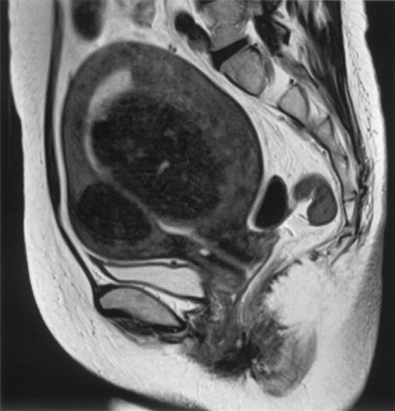
ａ 子宮全摘出術
ｂ 子宮動脈塞栓術
ｃ 子宮内容除去術
ｄ 子宮頸部円錐切除術
ｅ 腹腔鏡下子宮筋腫核出術
✅
ｅ 腹腔鏡下子宮筋腫核出術
挙児希望のある33歳の子宮筋腫（過多月経・貧血）。妊孕性を温存する腹腔鏡下子宮筋腫核出術を行う。
🧠 子宮筋腫と診断する
実際の骨盤部MRI T2強調矢状断像は参照できないが、本例では境界明瞭な低信号腫瘤が子宮筋層内〜内腔に突出して描出されているはずである。・内診で子宮は弾性硬で約10cmに腫大、両側付属器は触知せず
・過多月経（月経血量の増加）とHb 8.4g/dLの貧血
・下腹部鈍痛
・CA125 46U/mL（軽度上昇）
「弾性硬・境界明瞭」は子宮筋腫を示す。子宮腺筋症であれば子宮は硬く球状に腫大して圧痛を伴い、MRIでは接合帯のびまん性肥厚（境界不明瞭）を呈する点で異なる。
💊 治療方針を決めるのは「挙児希望」
本例は33歳・0妊0産で早期の挙児希望があり、2年前から避妊していない。したがって子宮を温存しなければならない。腹腔鏡下子宮筋腫核出術により筋腫のみを摘出し、子宮と妊孕性を保つ。術後は過多月経と貧血が改善し、粘膜下〜筋層内筋腫による着床障害も解消され妊娠が期待できる。
子宮動脈塞栓術〈UAE〉は妊娠を希望する女性には原則行わない。子宮筋層・卵巣の血流低下や子宮内膜障害により妊孕性が損なわれうるためである。
□ 子宮筋腫・腺筋症・内膜症の鑑別
| 疾患 | 内診所見 | MRI | 症状 | 治療 |
|---|---|---|---|---|
| 子宮筋腫 | 弾性硬・凹凸不整に腫大、圧痛なし | 境界明瞭な低信号腫瘤 | 過多月経・貧血・圧迫症状（頻尿）・不妊 | 核出術（妊孕性温存）／全摘／子宮動脈塞栓術 |
| 子宮腺筋症 | 硬く球状に腫大、圧痛あり | 接合帯〈junctional zone〉のびまん性肥厚（境界不明瞭） | 強い月経困難症・過多月経。CA125上昇 | 薬物療法／全摘 |
| 子宮内膜症 | 子宮は正常大だが可動性不良、Douglas窩に有痛性硬結 | チョコレート囊胞（T1高信号・T2低信号のshading） | 月経困難症・性交痛・排便痛・不妊。CA125上昇 | 薬物療法／囊胞摘出術 |
□ 選択肢の検討
| 選択肢 | 評価 |
|---|---|
| ａ 子宮全摘出術 | 誤り。挙児希望があり子宮温存が必須 |
| ｂ 子宮動脈塞栓術 | 誤り。妊娠希望例には原則行わない |
| ｃ 子宮内容除去術 | 誤り。妊娠していない |
| ｄ 子宮頸部円錐切除術 | 誤り。CIN3の治療であり本例に適応なし |
| ｅ 腹腔鏡下子宮筋腫核出術 | 正しい。妊孕性を温存しつつ症状を改善 |
Q.508(118A-41)★📷 画像99%
53 歳の女性（2 妊1 産）。51 歳で閉経。不正性器出血を主訴に来院した。約3 か月前から少量の不正性器出血を自覚していた。2 週間前から出血が増量したため受診した。既往歴と家族歴に特記すべきことはない。身長161cm、体重65kg。体温36.2℃。脈拍84/ 分、整。血圧140/78mmHg。内診で子宮はやや腫大するも可動性は良好で、付属器は触知しない。血液所見：赤血球320 万、Hb 9.9g/dL、Ht 31％、白血球6,300、血小板21 万、PT-INR 1.0（基準0.9 ～1.1）。血液生化学所見：総蛋白6.9g/dL、アルブミン3.7g/dL、総ビリルビン0.9mg/dL、直接ビリルビン0.2mg/dL、AST 18U/L、ALT 16U/L、LD 186U/L（基準124 ～222）、γ-GT 32U/L（基準9 ～32）、尿素窒素14mg/dL、クレアチニン0.7mg/dL、CEA 3.2ng/mL（基準5 以下）、CA19-9 28U/mL（基準37 以下）、CA12552U/mL（基準35 以下）。CRP 1.0mg/dL。子宮内膜細胞診は陽性。子宮内膜組織診で類内膜癌が検出された。頸部～骨盤部造影CT で明らかなリンパ節腫大および遠隔転移を認めない。骨盤部単純MRI のT2 強調矢状断像を示す。
この患者に行う治療はどれか。
この患者に行う治療はどれか。
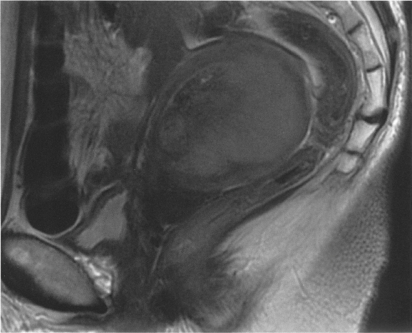
ａ 手術療法
ｂ 抗菌薬投与
ｃ 動注化学療法
ｄ 化学放射線療法
ｅ 密封小線源治療
✅
ａ 手術療法
閉経後不正出血で子宮内膜組織診が類内膜癌。リンパ節腫大・遠隔転移がなく、子宮体癌の第一選択は手術療法。
🧠 子宮体癌〈子宮内膜癌〉の治療の基本は手術
実際の骨盤部MRI T2強調矢状断像は参照できないが、本例では子宮内腔を占拠する腫瘤と、その筋層浸潤の程度が描出されているはずである。・53歳、51歳で閉経後の不正性器出血
・子宮内膜細胞診陽性、子宮内膜組織診で類内膜癌（確定診断）
・造影CTで明らかなリンパ節腫大・遠隔転移なし
子宮体癌は放射線感受性が子宮頸癌に比べて低く、手術療法（子宮全摘出術＋両側付属器摘出術＋必要に応じてリンパ節郭清）が第一選択である。手術によって初めて筋層浸潤の深さ・リンパ節転移の有無が確定し、進行期（手術進行期）が決まる。
なお子宮体癌の進行期は手術によって決定される（手術進行期分類）のに対し、子宮頸癌は臨床所見によって決定される（臨床進行期分類）という違いも重要。
💡 子宮体癌のリスク因子（エストロゲン曝露の増加）
- 肥満（脂肪組織のアロマターゼでアンドロゲン→エストロゲン）
- 未経産・不妊・晩期閉経・早発初経
- 多囊胞性卵巣症候群（無排卵でプロゲステロンの拮抗がない）
- 糖尿病・高血圧
- タモキシフェンの内服（子宮内膜にはエストロゲン様に作用）
- Lynch症候群（大腸癌の家族歴）
- 逆に経口避妊薬・黄体ホルモンは保護的に働く
□ 選択肢の検討
| 選択肢 | 評価 |
|---|---|
| ａ 手術療法 | 正しい。子宮体癌の第一選択。手術で進行期も確定する |
| ｂ 抗菌薬投与 | 誤り。感染ではない |
| ｃ 動注化学療法 | 誤り。標準治療ではない |
| ｄ 化学放射線療法 | 誤り。子宮頸癌ⅢB期などの治療 |
| ｅ 密封小線源治療 | 誤り。子宮体癌は放射線感受性が低い。手術不能例に限って考慮する |
Q.509(118D-51)★📷 画像85%
26 歳の女性（0 妊0 産）。子宮頸がん検診で異常を指摘され来院した。4 年前の子宮頸がん検診では異常がなかった。既往歴と家族歴に特記すべきことはない。喫煙歴は20 本/ 日を20 歳から5 年間。飲酒は機会飲酒。内診および経腟超音波検査で子宮と卵巣に異常を認めない。腟鏡診では、子宮腟部に肉眼的異常を認めない。酢酸加工後のコルポスコピー写真を示す。
診断はどれか。
診断はどれか。
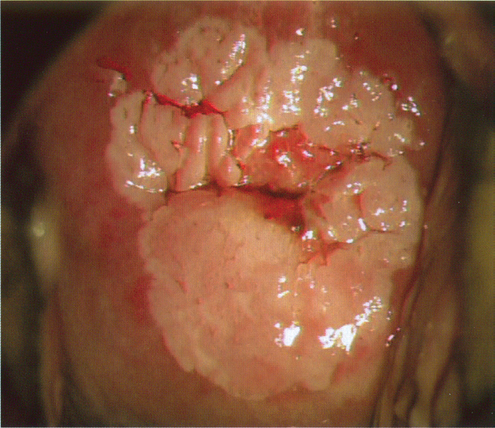
ａ Behçet 病
ｂ Bowen 病
ｃ 慢性頸管炎
ｄ 子宮頸部腺癌
ｅ 子宮頸部上皮内腫瘍〈CIN〉
✅
ｅ 子宮頸部上皮内腫瘍〈CIN〉
肉眼的異常がないのにコルポスコピィで酢酸加工により白色上皮を認める。子宮頸部上皮内腫瘍〈CIN〉である。
🧠 コルポスコピィの酢酸加工とは
実際のコルポスコピー写真は参照できないが、酢酸加工後に境界明瞭な白色上皮（酢酸白色上皮）、あるいはモザイク・赤点斑が認められているはずである。3〜5％酢酸を塗布すると、核蛋白に富む異型上皮が一過性に白く変化する（正常な扁平上皮はグリコーゲンに富み白くならない）。これにより肉眼では見えない病変を可視化できる。
本例は
・26歳、4年前の検診は正常だったが今回異常を指摘
・喫煙20本/日×5年（子宮頸癌の確立したリスク因子）
・腟鏡診で子宮腟部に肉眼的異常なし（＝浸潤癌ではない）
・内診・経腟超音波で子宮・卵巣に異常なし
したがって子宮頸部上皮内腫瘍〈CIN〉が最も考えられる。確定診断はこの後の狙い組織診による。
□ 子宮頸癌のスクリーニングと確定診断
子宮頸癌のスクリーニングから確定診断までの流れ① 子宮頸部細胞診（検診。異常なら次へ）
② コルポスコピィ〈腟拡大鏡診〉（酢酸加工で白色上皮・モザイク・赤点斑などの異常所見を探す）
③ コルポスコピィ下の狙い組織診 ＝ 確定診断
細胞診もコルポスコピィもあくまでスクリーニング／病変の位置決めであり確定診断にならない。組織診（生検）で初めて診断が確定する。
子宮頸部上皮内腫瘍〈CIN〉の管理：
・CIN1（軽度異形成）・CIN2（中等度異形成）→ 多くは自然消退するため経過観察（細胞診を半年ごと）
・CIN3（高度異形成・上皮内癌） → 子宮頸部円錐切除術
□ 選択肢の検討
| 選択肢 | 評価 |
|---|---|
| ａ Behçet病 | 誤り。外陰部潰瘍・口腔内アフタ・ぶどう膜炎を伴う |
| ｂ Bowen病 | 誤り。皮膚の表皮内扁平上皮癌。子宮頸部の呼称ではない |
| ｃ 慢性頸管炎 | 誤り。酢酸白色上皮は呈さない |
| ｄ 子宮頸部腺癌 | 誤り。頸管内に発生しコルポスコピィでは捉えにくい。細胞診でも検出困難でHPVワクチンや検診でも見つかりにくい |
| ｅ 子宮頸部上皮内腫瘍〈CIN〉 | 正しい。肉眼的異常なし＋酢酸白色上皮 |
Q.510(117D-17)★📷 画像72%
32 歳の女性。下腹部痛と不妊を主訴に来院した。月経周期は30 日型、整、持続5 日間。2 年前から月経痛に対して市販の鎮痛薬を服用しているが、6 か月前から効果が不十分となり、月経時以外にも下腹部痛を自覚するようになった。3 年前に結婚して以来、挙児を希望しているが妊娠はしていない。身長165cm、体重60kg。体温36.3℃。脈拍72/ 分、整。内診で子宮の腫大はないが可動性は不良である。両側付属器は腫大し、Douglas 窩に有痛性の硬結を触知する。血液所見：赤血球390 万、Hb 10.8g/dL、Ht 36％、白血球5,200、血小板18 万。血液生化学所見：総蛋白6.8g/dL、AST 28U/L、ALT 22U/L、CA19-9 32U/mL（基準37 以下）、CA125 52U/mL（基準35 以下）。骨盤部単純MRI のT2 強調矢状断像を示す。
治療として適切なのはどれか。
治療として適切なのはどれか。
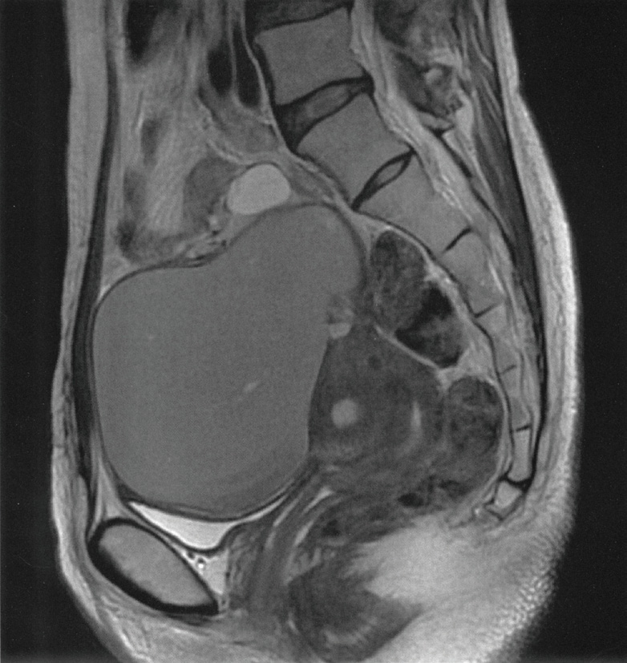
ａ 腫瘤摘出術
ｂ 囊胞穿刺吸引術
ｃ 両側付属器摘出術
ｄ 子宮全摘術+ 両側付属器摘出術
ｅ 子宮全摘術+ 両側付属器摘出術+ 大網切除術
✅
ａ 腫瘤摘出術
挙児希望のある子宮内膜症（両側チョコレート囊胞）。妊孕性を温存する腫瘤（囊胞）摘出術を行う。
🧠 子宮内膜症の典型像
実際の骨盤部MRI T2強調矢状断像は参照できないが、本例では両側卵巣にT1強調で高信号・T2強調で低信号を示す囊胞（チョコレート囊胞のshading）が描出されているはずである。| 所見 | 意味 |
|---|---|
| 進行する月経困難症 | 鎮痛薬が効かなくなり、月経時以外にも下腹部痛（慢性骨盤痛） |
| 不妊 | 3年間妊娠せず。癒着による卵管・卵巣の機能障害 |
| 子宮は正常大だが可動性不良 | 骨盤内の癒着を示す |
| 両側付属器の腫大 | チョコレート囊胞 |
| Douglas窩に有痛性の硬結 | 子宮内膜症に最も特徴的な内診所見 |
| CA125 52U/mL（軽度上昇） | 内膜症でも上昇する（悪性とは限らない） |
💊 治療方針を決めるのは「挙児希望」
32歳で3年前から挙児を希望しており、卵巣（卵子）を可能な限り温存しなければならない。したがって腫瘤摘出術（腹腔鏡下チョコレート囊胞摘出術）を行い、囊胞壁のみを剝離摘出して正常卵巣組織を残す。同時に骨盤内の癒着を剝離することで、卵管采の卵子取り込み機能が改善し妊娠が期待できる。
囊胞穿刺吸引術は再発率が高く、また悪性（明細胞癌）であった場合に播種を招くため行わない。両側付属器摘出や子宮全摘は妊孕性を失うため論外である。
なお薬物療法（ピル・GnRHアゴニスト）は排卵・月経を止めるため、挙児希望の時期には使えない点に注意。
□ 子宮筋腫・腺筋症・内膜症の鑑別
| 疾患 | 内診所見 | MRI | 症状 | 治療 |
|---|---|---|---|---|
| 子宮筋腫 | 弾性硬・凹凸不整に腫大、圧痛なし | 境界明瞭な低信号腫瘤 | 過多月経・貧血・圧迫症状（頻尿）・不妊 | 核出術（妊孕性温存）／全摘／子宮動脈塞栓術 |
| 子宮腺筋症 | 硬く球状に腫大、圧痛あり | 接合帯〈junctional zone〉のびまん性肥厚（境界不明瞭） | 強い月経困難症・過多月経。CA125上昇 | 薬物療法／全摘 |
| 子宮内膜症 | 子宮は正常大だが可動性不良、Douglas窩に有痛性硬結 | チョコレート囊胞（T1高信号・T2低信号のshading） | 月経困難症・性交痛・排便痛・不妊。CA125上昇 | 薬物療法／囊胞摘出術 |
□ 選択肢の検討
| 選択肢 | 評価 |
|---|---|
| ａ 腫瘤摘出術 | 正しい。囊胞壁のみ摘出し卵巣・妊孕性を温存 |
| ｂ 囊胞穿刺吸引術 | 誤り。再発率が高く、悪性なら播種の危険 |
| ｃ 両側付属器摘出術 | 誤り。妊孕性を完全に失う |
| ｄ 子宮全摘術＋両側付属器摘出術 | 誤り。挙児希望に反する |
| ｅ 子宮全摘術＋両側付属器摘出術＋大網切除術 | 誤り。進行卵巣癌に対する術式であり本例に適応なし |
Q.511(117D-54)★31%
22 歳の女性。初めて受けた子宮頸がん検診で異常を指摘され受診した。身長162cm、体重56kg。体温36.5℃。脈拍72/ 分、整。内診で子宮は正常大で可動性良好、両側付属器を触知しない。子宮腟部に肉眼的な異常を認めない。経腟超音波検査で異常を認めない。コルポスコピィで白色上皮を認めたため、同部の狙い組織診を実施したところ、軽度異形成（子宮頸部上皮内腫瘍）と診断された。
患者への説明として適切なのはどれか。
患者への説明として適切なのはどれか。
ａ 「MRI 検査を行いましょう」
ｂ 「円錐切除術を行いましょう」
ｃ 「抗ウイルス薬を内服しましょう」
ｄ 「子宮頸部細胞診を半年後に行いましょう」
ｅ 「ヒトパピローマウイルス〈HPV〉ワクチンで治療をしましょう」
✅
ｄ 「子宮頸部細胞診を半年後に行いましょう」
軽度異形成〈CIN1〉は多くが自然消退する。円錐切除は行わず、半年後の細胞診で経過観察する。
🧠 軽度異形成〈CIN1〉は経過観察
22歳の初回検診で細胞診異常 → コルポスコピィで白色上皮 → 狙い組織診で軽度異形成〈CIN1〉と確定した。CIN1の多くはHPVの一過性感染による変化で、自然に消退する。とくに若年女性では消退率が高い。
したがって直ちに治療せず、半年ごとの子宮頸部細胞診で経過観察するのが標準である。経過中にCIN3へ進展すれば円錐切除術を行う。
若年女性に安易な円錐切除を行うと、頸管無力症・early PROMによる早産・流産のリスクが上昇するため、過剰治療は厳に慎まなければならない。
□ 子宮頸癌のスクリーニングと確定診断
子宮頸癌のスクリーニングから確定診断までの流れ① 子宮頸部細胞診（検診。異常なら次へ）
② コルポスコピィ〈腟拡大鏡診〉（酢酸加工で白色上皮・モザイク・赤点斑などの異常所見を探す）
③ コルポスコピィ下の狙い組織診 ＝ 確定診断
細胞診もコルポスコピィもあくまでスクリーニング／病変の位置決めであり確定診断にならない。組織診（生検）で初めて診断が確定する。
子宮頸部上皮内腫瘍〈CIN〉の管理：
・CIN1（軽度異形成）・CIN2（中等度異形成）→ 多くは自然消退するため経過観察（細胞診を半年ごと）
・CIN3（高度異形成・上皮内癌） → 子宮頸部円錐切除術
⚠️ HPVワクチンは「予防」であって「治療」ではない
- HPVワクチンは感染前（性交渉開始前）の接種で発癌性HPVの感染を予防する
- 既に生じたCIN病変を治療する効果はない
- 定期接種の対象は小学校6年生〜高校1年生相当の女子
- ワクチン接種後も20歳からの子宮頸がん検診は継続する
□ 選択肢の検討
| 選択肢 | 評価 |
|---|---|
| ａ 「MRI検査を行いましょう」 | 誤り。上皮内の病変であり画像で描出されない |
| ｂ 「円錐切除術を行いましょう」 | 過剰治療。CIN3の治療。若年女性では早産リスクが上がる |
| ｃ 「抗ウイルス薬を内服しましょう」 | 誤り。HPVに有効な抗ウイルス薬はない |
| ｄ 「子宮頸部細胞診を半年後に行いましょう」 | 正しい。CIN1は経過観察 |
| ｅ 「HPVワクチンで治療をしましょう」 | 誤り。ワクチンは感染予防であり既存病変の治療効果はない |
Q.512(117D-70)★📷 画像62%
歳の女性（2 妊2 産）。下腹部膨満感を主訴に来院した。3 か月間に急激な腹囲増大と食欲低下を自覚した。44 歳時に左乳癌の治療歴がある。51 歳で閉経。母方のおばが卵巣癌のため死亡。身長154cm、体重44kg。体温36.8℃。脈拍76/ 分、整。血圧128/74mmHg。呼吸数24/ 分。腹部は膨隆し、上腹部に及ぶ弾性硬の腫瘤を触知した。内診で、両側付属器と子宮が一塊となり可動性不良な骨盤内腫瘤を触知し、Douglas 窩と膀胱子宮窩にも各々腫瘤を触知した。直腸指診で平滑な直腸粘膜を触知した。血液所見：赤血球370 万、Hb 10.8g/dL、Ht 32％、白血球8,800、血小板19 万。血液生化学所見：総蛋白6.8g/dL、アルブミン3.3g/dL、総ビリルビン0.9mg/dL、AST 28U/L、ALT40U/L、尿素窒素20mg/dL、クレアチニン0.8mg/dL、CEA 2.8ng/mL（基準5 以下）、CA19-9 30U/mL（基準37 以下）、CA125 1,280U/mL（基準35 以下）。CRP 1.0mg/dL。骨盤部MRI T2 強調水平断像（A）、矢状断像（B）及び腹部造影CT（C）を示す。審査腹腔鏡（腹腔鏡下試験切除術）で、腫瘍の播種病変との癒着により骨盤内臓器の同定はできず、腫瘍生検のみ施行した。病理診断の結果は高異型度漿液性癌であった。
次に行う治療として適切なのはどれか。
次に行う治療として適切なのはどれか。
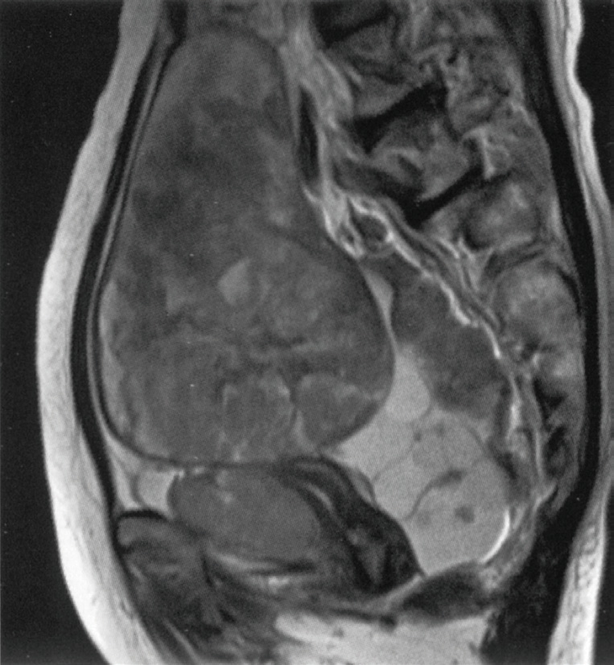
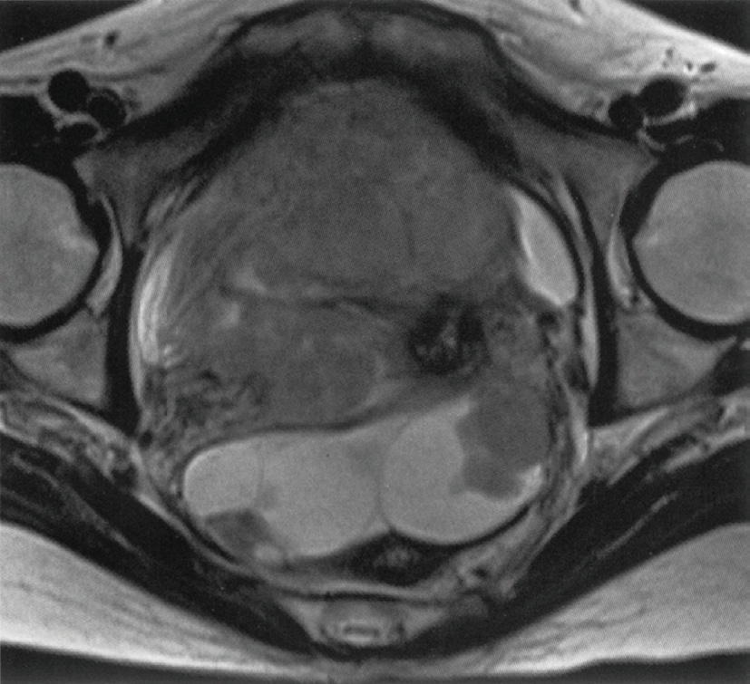
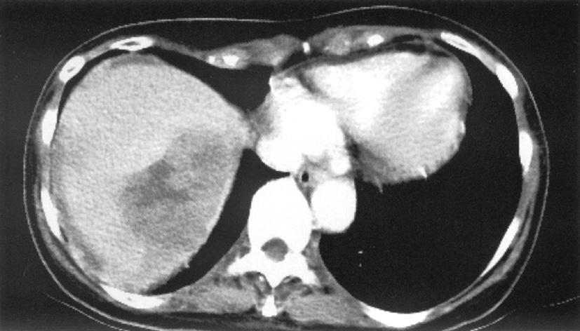
ａ 免疫療法
ｂ 開腹手術
ｃ 放射線療法
ｄ 薬物による抗癌治療
ｅ 内分泌（ホルモン）薬による治療
✅
ｄ 薬物による抗癌治療
審査腹腔鏡で切除不能と判断された進行卵巣癌（高異型度漿液性癌）。まず薬物による抗癌治療（術前化学療法）を行う。
🧠 進行卵巣癌と診断する
実際のMRI・造影CT像は参照できないが、本例では骨盤内を占拠する充実性腫瘤、腹膜播種、大量腹水が描出されているはずである。| 所見 | 意味 |
|---|---|
| 3か月間の急激な腹囲増大と食欲低下 | 腹水貯留と癌性腹膜炎 |
| 両側付属器と子宮が一塊、可動性不良 | 骨盤内に固定した腫瘤 |
| Douglas窩・膀胱子宮窩に腫瘤 | 腹膜播種 |
| CA125 1,280U/mL | 著明高値 |
| 44歳時に左乳癌、母方のおばが卵巣癌 | 遺伝性乳癌卵巣癌症候群〈HBOC／BRCA変異〉を示唆 |
| 審査腹腔鏡で播種との癒着により骨盤内臓器の同定不能 | 初回完全切除は不可能 |
| 病理は高異型度漿液性癌 | 化学療法感受性が高い |
💊 切除不能なら「術前化学療法」から入る
卵巣癌の基本は初回手術で肉眼的完全切除を目指す（primary debulking surgery）ことである。しかし本例は審査腹腔鏡で切除不能と判断された。この場合は術前化学療法〈NAC：パクリタキセル＋カルボプラチン〉で腫瘍を縮小させ、その後に中間期腫瘍減量術〈interval debulking surgery〉を行う。
高異型度漿液性癌はプラチナ製剤に対する感受性が高く、BRCA変異があればPARP阻害薬による維持療法も有効である。無理に開腹しても完全切除できず、侵襲だけが残る。
□ 卵巣腫瘍の組織分類
| 分類 | 内容 | ポイント |
|---|---|---|
| 表層上皮性・間質性腫瘍 | 最多（約2/3）。漿液性・粘液性・類内膜・明細胞の各囊胞腺腫／境界悪性／腺癌 | 卵巣癌の大半。漿液性癌が最多 |
| 胚細胞腫瘍 | 若年に好発。成熟囊胞性奇形腫（皮様囊腫）が最多の良性。悪性は未分化胚細胞腫〈ディスジャーミノーマ〉・卵黄囊腫瘍・未熟奇形腫 | 卵黄囊腫瘍→AFP、絨毛癌→hCG、未分化胚細胞腫→LD |
| 性索間質性腫瘍 | ホルモン産生。顆粒膜細胞腫（エストロゲン産生）、莢膜細胞腫、Sertoli-Leydig細胞腫（アンドロゲン産生）、線維腫（Meigs症候群） | 顆粒膜細胞腫 → 不正出血・子宮内膜増殖症・思春期早発 |
| 転移性腫瘍 | 胃癌・大腸癌からが多い。印環細胞癌の両側卵巣転移＝Krukenberg腫瘍 | CEA上昇 |
□ 選択肢の検討
| 選択肢 | 評価 |
|---|---|
| ａ 免疫療法 | 誤り。卵巣癌の初回治療ではない |
| ｂ 開腹手術 | 誤り。審査腹腔鏡で切除不能と判断済み |
| ｃ 放射線療法 | 誤り。播種した卵巣癌に対する標準治療ではない |
| ｄ 薬物による抗癌治療 | 正しい。術前化学療法で縮小させてから手術 |
| ｅ 内分泌（ホルモン）薬による治療 | 誤り。高異型度漿液性癌に無効 |
Q.513(116B-39)★📷 画像89%
26 歳の女性。動悸と息切れを主訴に来院した。1 年前から月経量が増え、3 か月前から階段昇降時に動悸と息切れを自覚するようになり受診した。月経周期は28 日型、整、順、持続8 日間。身長160cm、体重52kg。体温36.4℃。脈拍84/ 分、整。血圧106/66mmHg。呼吸数22/ 分。内診で子宮は正常大、両側付属器に異常を認めない。血液所見：赤血球378 万、Hb 7.2g/dL、Ht 22％、白血球6,400、血小板27 万。超音波検査で子宮内腔に突出する径2cm の充実性腫瘤を認める。骨盤部単純MRI T2 強調矢状断像（A）とT2 強調冠状断像（B）とを示す。将来妊娠を考えている。
鉄剤投与による貧血改善後に行う治療法として適切なのはどれか。
鉄剤投与による貧血改善後に行う治療法として適切なのはどれか。
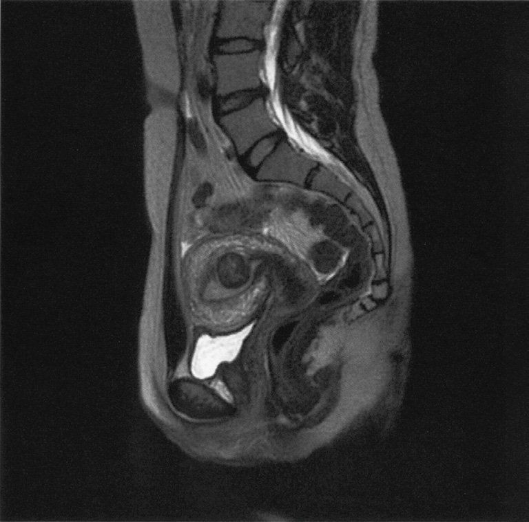
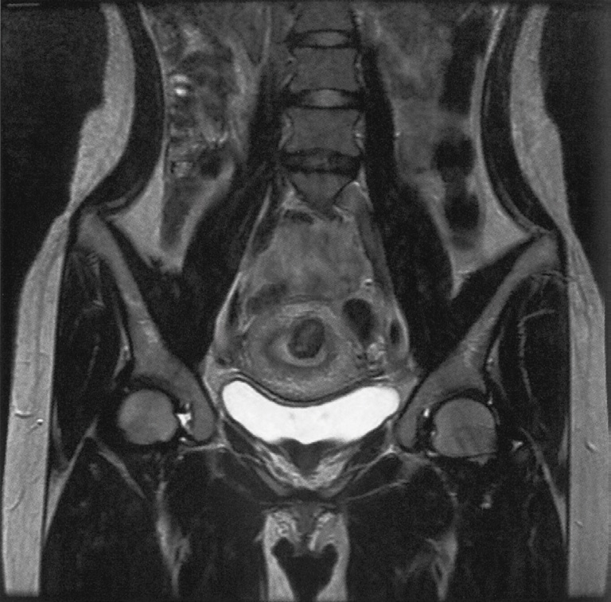
ａ 子宮全摘術
ｂ 子宮鏡下手術
ｃ 子宮動脈塞栓術
ｄ 子宮内膜焼灼術
ｅ プロゲステロン投与
✅
ｂ 子宮鏡下手術
子宮内腔に突出する径2cmの粘膜下筋腫による過多月経・鉄欠乏性貧血。妊娠希望があり子宮鏡下手術を行う。
🧠 粘膜下筋腫と診断する
実際の骨盤部MRI T2強調像は参照できないが、本例では子宮内腔に突出する境界明瞭な低信号腫瘤が描出されているはずである。・26歳、1年前から月経量が増加（過多月経）
・Hb 7.2g/dL・Ht 22％の高度貧血 → 動悸・息切れ（労作時）
・内診で子宮は正常大（筋腫は小さく子宮は腫大していない）
・超音波で子宮内腔に突出する径2cmの充実性腫瘤
小さな筋腫でも粘膜下（子宮内腔に突出）に存在すると内膜面積が増え、過多月経を来す。「子宮は正常大なのに強い貧血」という一見矛盾した所見が粘膜下筋腫の特徴である。
💊 治療：子宮鏡下手術
将来妊娠を考えているため、子宮を温存しなければならない。子宮内腔に突出する筋腫は子宮鏡下子宮筋腫摘出術〈TCR：経頸管的切除〉により、腟から子宮鏡を挿入して切除でき、腹部を切開しない。過多月経が改善し、粘膜下筋腫による着床障害も解消されて妊孕性が向上する。
まず鉄剤で貧血を改善させてから手術を行うのは、術中出血に備えるためである。
□ 子宮筋腫・腺筋症・内膜症の鑑別
| 疾患 | 内診所見 | MRI | 症状 | 治療 |
|---|---|---|---|---|
| 子宮筋腫 | 弾性硬・凹凸不整に腫大、圧痛なし | 境界明瞭な低信号腫瘤 | 過多月経・貧血・圧迫症状（頻尿）・不妊 | 核出術（妊孕性温存）／全摘／子宮動脈塞栓術 |
| 子宮腺筋症 | 硬く球状に腫大、圧痛あり | 接合帯〈junctional zone〉のびまん性肥厚（境界不明瞭） | 強い月経困難症・過多月経。CA125上昇 | 薬物療法／全摘 |
| 子宮内膜症 | 子宮は正常大だが可動性不良、Douglas窩に有痛性硬結 | チョコレート囊胞（T1高信号・T2低信号のshading） | 月経困難症・性交痛・排便痛・不妊。CA125上昇 | 薬物療法／囊胞摘出術 |
□ 選択肢の検討
| 選択肢 | 評価 |
|---|---|
| ａ 子宮全摘術 | 誤り。妊娠希望があり子宮温存が必須 |
| ｂ 子宮鏡下手術 | 正しい。低侵襲で粘膜下筋腫を摘出し妊孕性を保つ |
| ｃ 子宮動脈塞栓術 | 誤り。妊娠希望例には原則行わない |
| ｄ 子宮内膜焼灼術 | 誤り。内膜を破壊するため妊娠できなくなる |
| ｅ プロゲステロン投与 | 誤り。一時的な止血効果のみで根治しない |
Q.514(116D-52)★📷 画像89%
48 歳の女性（1 妊1 産）。腹部膨満感を主訴に来院した。3 か月前に腹囲増大を自覚し、1 週間前から腹部膨満感が強くなってきたため受診した。家族歴に特記すべきことはない。29 歳時に帝王切開している。身長162cm、体重54kg。体温36.8℃。脈拍84/ 分、整。血圧106/66mmHg。呼吸数18/ 分。下腹部に弾性軟で可動性のない腫瘤を触知する。内診で子宮は後屈・正常大で圧痛はない。腫瘍マーカーは、CA19-9 87U/mL（基準37 以下）、CA125235U/mL（基準35 以下）。骨盤部単純MRI のT2 強調矢状断像を示す。胸腹部CT で転移や播種を認めない。
この患者でまず行うのはどれか。
この患者でまず行うのはどれか。
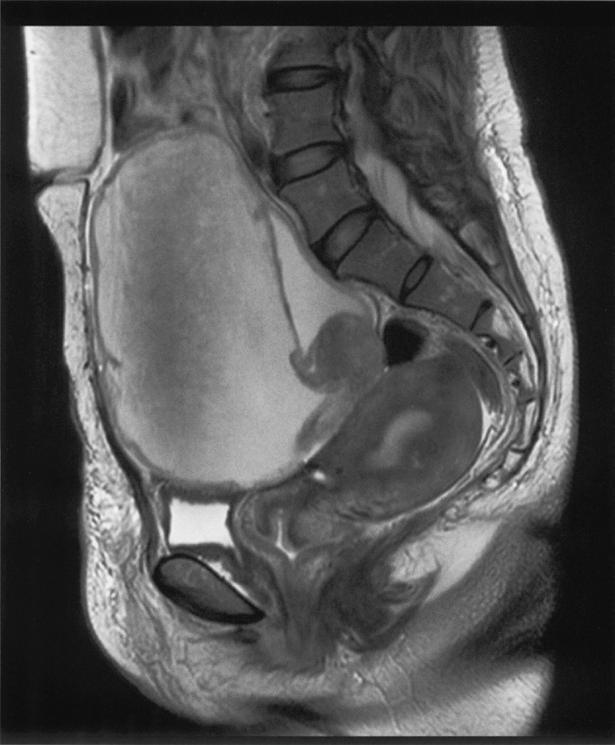
ａ 開腹手術
ｂ 放射線照射
ｃ 囊胞穿刺吸引
ｄ 薬物による抗癌治療
ｅ GnRH アゴニスト投与
✅
ａ 開腹手術
卵巣癌が疑われる骨盤内腫瘤。転移・播種がなく、まず開腹手術で進行期決定と腫瘍摘出を行う。穿刺は禁忌。
🧠 卵巣悪性腫瘍を疑う
実際の骨盤部MRI T2強調矢状断像は参照できないが、本例では囊胞性成分に充実部分を伴う卵巣腫瘤が描出されているはずである。・48歳、3か月で腹囲増大 → 腹部膨満感
・下腹部に可動性のない腫瘤（＝癒着・浸潤を示唆）
・CA19-9 87U/mL、CA125 235U/mLとともに上昇
・胸腹部CTで転移・播種なし
可動性のない腫瘤＋腫瘍マーカー高値から卵巣悪性腫瘍が強く疑われる。
💊 なぜ「まず開腹手術」なのか
卵巣癌には確立した術前の組織学的確定診断法がない。したがって① 開腹手術を行い、腹腔内を検索して術中迅速病理診断で組織型を確定する
② 腹腔洗浄細胞診・大網切除・リンパ節郭清によって進行期を決定する
③ 同時に可及的に腫瘍を摘出する（腫瘍減量術）
すなわち手術が診断・進行期決定・治療を兼ねる。
一方囊胞穿刺吸引は絶対に行ってはならない。悪性であった場合に内容が腹腔内に漏れて腹膜播種を起こし、進行期を上げてしまうからである。
□ 卵巣腫瘍の組織分類
| 分類 | 内容 | ポイント |
|---|---|---|
| 表層上皮性・間質性腫瘍 | 最多（約2/3）。漿液性・粘液性・類内膜・明細胞の各囊胞腺腫／境界悪性／腺癌 | 卵巣癌の大半。漿液性癌が最多 |
| 胚細胞腫瘍 | 若年に好発。成熟囊胞性奇形腫（皮様囊腫）が最多の良性。悪性は未分化胚細胞腫〈ディスジャーミノーマ〉・卵黄囊腫瘍・未熟奇形腫 | 卵黄囊腫瘍→AFP、絨毛癌→hCG、未分化胚細胞腫→LD |
| 性索間質性腫瘍 | ホルモン産生。顆粒膜細胞腫（エストロゲン産生）、莢膜細胞腫、Sertoli-Leydig細胞腫（アンドロゲン産生）、線維腫（Meigs症候群） | 顆粒膜細胞腫 → 不正出血・子宮内膜増殖症・思春期早発 |
| 転移性腫瘍 | 胃癌・大腸癌からが多い。印環細胞癌の両側卵巣転移＝Krukenberg腫瘍 | CEA上昇 |
□ 腫瘍マーカー
| マーカー | 上昇する疾患 |
|---|---|
| CA125 | 卵巣癌（漿液性）・子宮内膜症・子宮腺筋症・腹膜炎・妊娠・月経 |
| CA19-9 | 粘液性卵巣腫瘍・成熟囊胞性奇形腫・膵癌・胆道癌 |
| SCC | 子宮頸部扁平上皮癌（腺癌では上がらない） |
| CEA | 消化器癌・粘液性腫瘍・転移性卵巣腫瘍 |
| AFP | 卵黄囊腫瘍・肝細胞癌 |
| hCG | 絨毛性疾患（胞状奇胎・侵入奇胎・絨毛癌）・絨毛癌 |
| エストラジオール | 顆粒膜細胞腫・莢膜細胞腫 |
□ 選択肢の検討
| 選択肢 | 評価 |
|---|---|
| ａ 開腹手術 | 正しい。診断・進行期決定・治療を兼ねる |
| ｂ 放射線照射 | 誤り。卵巣癌の標準治療ではない |
| ｃ 囊胞穿刺吸引 | 禁忌。悪性なら腹膜播種を招く |
| ｄ 薬物による抗癌治療 | 誤り。組織型が不明。切除可能なら手術が先 |
| ｅ GnRHアゴニスト投与 | 誤り。子宮筋腫・内膜症の治療薬 |
Q.515(116D-61)★📷 画像99%
23 歳の女性（0 妊0 産）。初めて受けた子宮頸がん検診で異常を指摘された。自覚症状はない。身長158cm、体重50kg。体温36.2℃。脈拍84/ 分、整。血圧106/66mmHg。呼吸数16/ 分。内診で子宮は正常大で可動性良好。両側付属器に腫瘤を触知しない。子宮頸部擦過細胞診像（A）とコルポスコピィ像（B）とを示す。
診断確定のために必要な検査はどれか。
診断確定のために必要な検査はどれか。
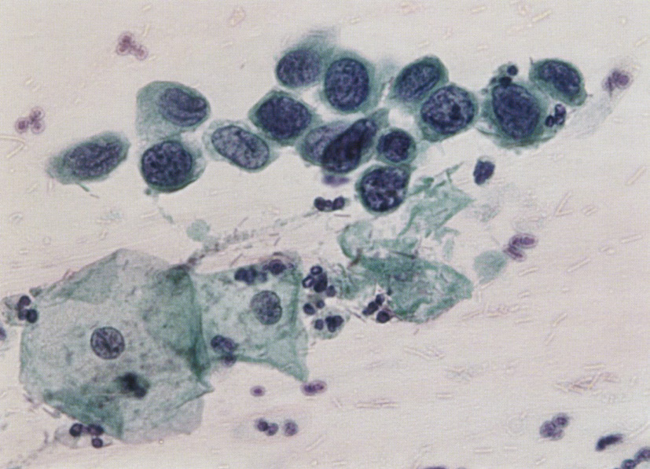
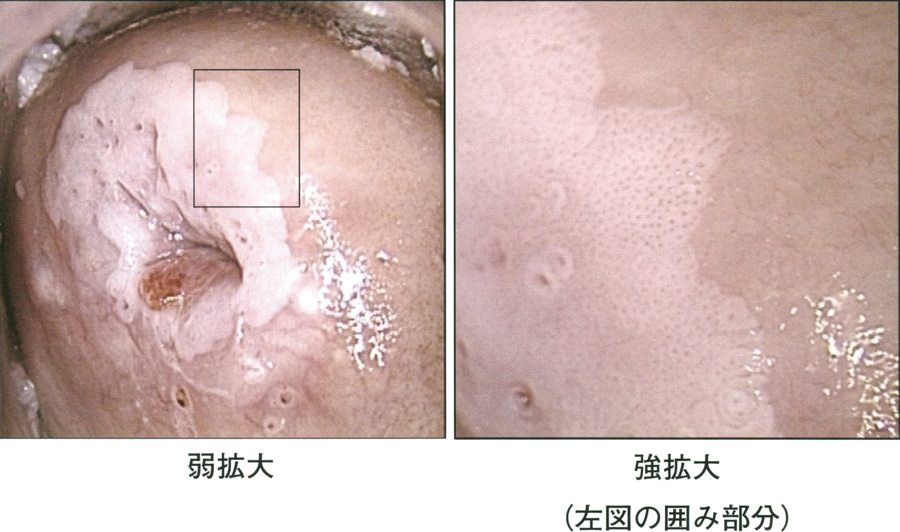
ａ 子宮鏡
ｂ 膀胱鏡
ｃ 子宮内膜細胞診
ｄ 下部消化管内視鏡
ｅ 子宮頸部狙い組織診
✅
ｅ 子宮頸部狙い組織診
細胞診とコルポスコピィはスクリーニング。確定診断は子宮頸部狙い組織診（生検）である。
🧠 確定診断は組織診
実際の細胞診像・コルポスコピィ像は参照できないが、本例では異型扁平上皮細胞と、酢酸加工後の白色上皮・モザイクなどの異常所見が示されているはずである。細胞診は「細胞」を、組織診は「組織」を見る検査である。細胞診では細胞の異型は分かっても、異型細胞が上皮のどの深さまで及んでいるか（基底膜を破って浸潤しているか）が判定できない。CIN1・2・3の区別も、上皮内癌と浸潤癌の区別も、組織の構造を見て初めて可能になる。
コルポスコピィは異常のある場所を見つけて生検の狙いを定めるための検査であり、それ自体は診断を確定しない。
したがって確定診断に必要なのはコルポスコピィ下の子宮頸部狙い組織診である。
□ 子宮頸癌のスクリーニングと確定診断
子宮頸癌のスクリーニングから確定診断までの流れ① 子宮頸部細胞診（検診。異常なら次へ）
② コルポスコピィ〈腟拡大鏡診〉（酢酸加工で白色上皮・モザイク・赤点斑などの異常所見を探す）
③ コルポスコピィ下の狙い組織診 ＝ 確定診断
細胞診もコルポスコピィもあくまでスクリーニング／病変の位置決めであり確定診断にならない。組織診（生検）で初めて診断が確定する。
子宮頸部上皮内腫瘍〈CIN〉の管理：
・CIN1（軽度異形成）・CIN2（中等度異形成）→ 多くは自然消退するため経過観察（細胞診を半年ごと）
・CIN3（高度異形成・上皮内癌） → 子宮頸部円錐切除術
□ 選択肢の検討
| 選択肢 | 評価 |
|---|---|
| ａ 子宮鏡 | 誤り。子宮内腔（体部）を観察する検査 |
| ｂ 膀胱鏡 | 誤り。進行子宮頸癌の膀胱浸潤を評価する検査 |
| ｃ 子宮内膜細胞診 | 誤り。子宮体癌のスクリーニング |
| ｄ 下部消化管内視鏡 | 誤り。直腸浸潤の評価。本例に適応なし |
| ｅ 子宮頸部狙い組織診 | 正しい。確定診断はこれによる |
Q.516(116F-8)★96%
過多月経の原因となるのはどれか。
ａ 子宮腺筋症
ｂ 子宮腔癒着症
ｃ Sheehan 症候群
ｄ 多囊胞性卵巣症候群
ｅ 高プロラクチン血症
✅
ａ 子宮腺筋症
子宮腺筋症は内膜組織が筋層内に存在し、子宮の収縮不全と内膜面積の増加により過多月経を来す。
🧠 過多月経の原因と機序
| 原因 | 機序 |
|---|---|
| 子宮腺筋症 | 子宮内膜組織が筋層内にびまん性に存在し、子宮の収縮不全と血管の増生を来す。過多月経＋強い月経困難症 |
| 子宮筋腫（粘膜下・筋層内） | 子宮内膜面積の増加と子宮収縮の妨げによる |
| 子宮内膜ポリープ・子宮内膜増殖症 | 内膜の異常増殖 |
| 血液疾患 | von Willebrand病・血小板減少症など |
いずれも子宮内膜そのものの面積が増える、あるいは子宮が収縮できないために出血量が増える。
これに対し他の選択肢はいずれも無月経・稀発月経（月経が減る・止まる）方向の疾患である。
□ 選択肢の検討
| 選択肢 | 評価 |
|---|---|
| ａ 子宮腺筋症 | 正しい。過多月経と強い月経困難症を来す |
| ｂ 子宮腔癒着症 | 誤り。Asherman症候群。過少月経〜子宮性無月経となる |
| ｃ Sheehan症候群 | 誤り。下垂体前葉機能低下で無月経 |
| ｄ 多囊胞性卵巣症候群 | 誤り。無排卵で稀発月経・無月経 |
| ｅ 高プロラクチン血症 | 誤り。無排卵で無月経 |
Q.517(116F-32)★2択69%
転移性卵巣腫瘍の原発巣で頻度が高いのはどれか。2 つ選べ。
ａ 肺 癌
ｂ 胃 癌
ｃ 大腸癌
ｄ 膀胱癌
ｅ 甲状腺癌
✅
ｂ 胃 癌
ｃ 大腸癌
転移性卵巣腫瘍の原発巣は消化器癌（胃癌・大腸癌）が多い。とくに胃の印環細胞癌の両側転移がKrukenberg腫瘍。
🧠 転移性卵巣腫瘍〈metastatic ovarian tumor〉
卵巣は血行性・リンパ行性・腹膜播種のいずれの経路でも転移を受けやすい臓器で、卵巣腫瘍全体の数％を占める。原発巣として頻度が高いのは
・胃癌（最多）
・大腸癌
・乳癌、子宮体癌
とくに胃の印環細胞癌が両側卵巣に転移したものをKrukenberg腫瘍と呼ぶ。病理では粘液を含み核が辺縁に押しやられた印環細胞〈signet ring cell〉を認める。
若年〜中年女性で両側の充実性卵巣腫瘤を見たら、まず消化管を検索する（上部・下部消化管内視鏡検査）。CEAが上昇することが多い。
□ 卵巣腫瘍の組織分類
| 分類 | 内容 | ポイント |
|---|---|---|
| 表層上皮性・間質性腫瘍 | 最多（約2/3）。漿液性・粘液性・類内膜・明細胞の各囊胞腺腫／境界悪性／腺癌 | 卵巣癌の大半。漿液性癌が最多 |
| 胚細胞腫瘍 | 若年に好発。成熟囊胞性奇形腫（皮様囊腫）が最多の良性。悪性は未分化胚細胞腫〈ディスジャーミノーマ〉・卵黄囊腫瘍・未熟奇形腫 | 卵黄囊腫瘍→AFP、絨毛癌→hCG、未分化胚細胞腫→LD |
| 性索間質性腫瘍 | ホルモン産生。顆粒膜細胞腫（エストロゲン産生）、莢膜細胞腫、Sertoli-Leydig細胞腫（アンドロゲン産生）、線維腫（Meigs症候群） | 顆粒膜細胞腫 → 不正出血・子宮内膜増殖症・思春期早発 |
| 転移性腫瘍 | 胃癌・大腸癌からが多い。印環細胞癌の両側卵巣転移＝Krukenberg腫瘍 | CEA上昇 |
□ 選択肢の検討
| 選択肢 | 評価 |
|---|---|
| ａ 肺 癌 | 誤り。卵巣転移の頻度は低い |
| ｂ 胃 癌 | 正しい。最多。Krukenberg腫瘍の代表 |
| ｃ 大腸癌 | 正しい。胃癌に次いで多い |
| ｄ 膀胱癌 | 誤り。卵巣転移は稀 |
| ｅ 甲状腺癌 | 誤り。卵巣転移は稀（甲状腺腫様卵巣腫瘍は別概念） |
Q.518(115D-66)★📷 画像89%
61 歳の女性。閉経51 歳。性器出血を主訴に来院した。6 か月前から少量の性器出血が続いている。身長158cm、体重52kg。血圧120/78mmHg。内診で子宮は正常大、左付属器領域に径10cm の腫瘤を触知する。圧痛はなく可動性は良好である。超音波検査で子宮内膜の肥厚（12mm）を認める。腹水と胸水は認めない。子宮頸部細胞診で異型細胞を認めない。子宮内膜組織診で増殖期内膜を認める。血液生化学所見：CA125 38U/mL（基準35 以下）、CA19-9 15U/mL（基準37 以下）、エストラジオール〈E2〉310pg/mL（基準20 以下）。開腹手術を施行した。左付属器の手術摘出標本のH-E 染色像を示す。
この患者の診断はどれか。
この患者の診断はどれか。
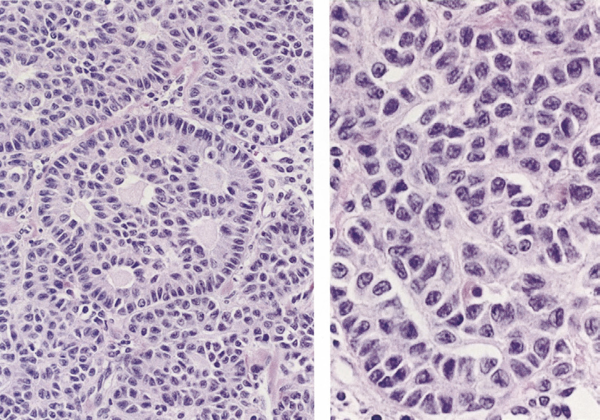
ａ 漿液性癌
ｂ 明細胞癌
ｃ 成熟奇形腫
ｄ 粘液性腺癌
ｅ 顆粒膜細胞腫
✅
ｅ 顆粒膜細胞腫
閉経後にエストラジオール310pg/mLと高値で、子宮内膜が肥厚し増殖期内膜を示す。エストロゲン産生腫瘍＝顆粒膜細胞腫。
🧠 「閉経後なのにエストロゲンが高い」が決め手
実際のH-E染色像は参照できないが、顆粒膜細胞腫では小型で核溝〈coffee bean nuclei〉をもつ腫瘍細胞が、中心に好酸性物質をもつ小胞（Call-Exner小体）を形成する像が示されているはずである。| 所見 | 意味 |
|---|---|
| 閉経51歳、61歳でエストラジオール310pg/mL（基準20以下） | 卵巣がエストロゲンを産生している＝エストロゲン産生腫瘍 |
| 子宮内膜の肥厚（12mm）、内膜組織診で増殖期内膜 | 閉経後に増殖期内膜が見られること自体が異常。エストロゲンの持続刺激を受けている |
| 6か月続く少量の性器出血 | 肥厚した内膜からの出血 |
| 左付属器領域に径10cmの腫瘤 | 腫瘍本体 |
| CA125 38U/mL（軽度上昇のみ） | 上皮性卵巣癌なら著明高値となることが多い |
| 子宮頸部細胞診で異型細胞なし | 頸癌を除外 |
これらは性索間質性腫瘍である顆粒膜細胞腫に一致する。
💡 顆粒膜細胞腫のポイント
- エストロゲン産生腫瘍であり、年齢に応じた症状を出す
- 思春期前 → 思春期早発症
- 性成熟期 → 月経異常・不正出血
- 閉経後 → 不正性器出血・子宮内膜増殖症・子宮体癌の合併
- 病理はCall-Exner小体。血中インヒビンも腫瘍マーカーとなる
- 晩期再発（10年以上経ってからの再発）があり長期経過観察が必要
□ 卵巣腫瘍の組織分類
| 分類 | 内容 | ポイント |
|---|---|---|
| 表層上皮性・間質性腫瘍 | 最多（約2/3）。漿液性・粘液性・類内膜・明細胞の各囊胞腺腫／境界悪性／腺癌 | 卵巣癌の大半。漿液性癌が最多 |
| 胚細胞腫瘍 | 若年に好発。成熟囊胞性奇形腫（皮様囊腫）が最多の良性。悪性は未分化胚細胞腫〈ディスジャーミノーマ〉・卵黄囊腫瘍・未熟奇形腫 | 卵黄囊腫瘍→AFP、絨毛癌→hCG、未分化胚細胞腫→LD |
| 性索間質性腫瘍 | ホルモン産生。顆粒膜細胞腫（エストロゲン産生）、莢膜細胞腫、Sertoli-Leydig細胞腫（アンドロゲン産生）、線維腫（Meigs症候群） | 顆粒膜細胞腫 → 不正出血・子宮内膜増殖症・思春期早発 |
| 転移性腫瘍 | 胃癌・大腸癌からが多い。印環細胞癌の両側卵巣転移＝Krukenberg腫瘍 | CEA上昇 |
□ 選択肢の検討
| 選択肢 | 評価 |
|---|---|
| ａ 漿液性癌 | 誤り。ホルモンを産生せず、CA125が著明高値となることが多い |
| ｂ 明細胞癌 | 誤り。子宮内膜症を母地とし、ホルモンを産生しない |
| ｃ 成熟奇形腫 | 誤り。良性で毛髪・脂肪・歯牙を含む。ホルモンを産生しない |
| ｄ 粘液性腺癌 | 誤り。ホルモンを産生しない。CA19-9が上昇しやすい |
| ｅ 顆粒膜細胞腫 | 正しい。エストロゲン産生腫瘍 |
Q.519(114A-62)★📷 画像84%
23 歳の女性。左下腹部痛を主訴に来院した。3 日前の朝、通勤中の電車内で急に左下腹部痛を自覚した。痛みは2時間ほどで自然に軽快したという。2 か月前にも同様の疼痛発作があったため心配して受診した。既往歴と家族歴に特記すべきことはない。月経は周期28 日型、整、持続5 日間。身長158cm、体重48kg。体温36.6℃。脈拍72/ 分、整。血圧100/64mmHg。呼吸数18/ 分。眼瞼結膜と眼球結膜とに異常を認めない。恥骨上から臍上6cm にかけて腹部腫瘤を触知し、軽度の圧痛を認める。子宮は正常大で圧痛は認めない。血液所見：赤血球380 万、Hb 10.1g/dL、Ht32％、白血球4,000、血小板19 万。血液生化学所見：総蛋白7.0g/dL、AST 22U/L、ALT 20U/L、LD 190U/L（基準120 ～245）、α- フェトプロテイン〈AFP〉5ng/mL（基準20 以下）、CA19-9 35U/mL（基準37 以下）、CA12530U/mL（基準35 以下）。下腹部MRI のT2 強調像（A）、T1 強調像（B）及び脂肪抑制T1 強調像（C）を示す。
治療として適切なのはどれか。
治療として適切なのはどれか。
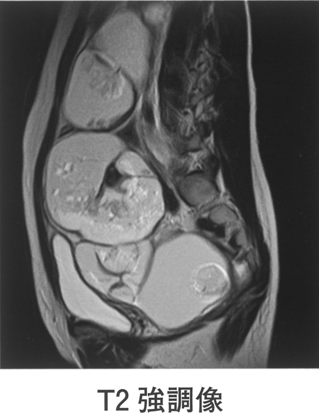
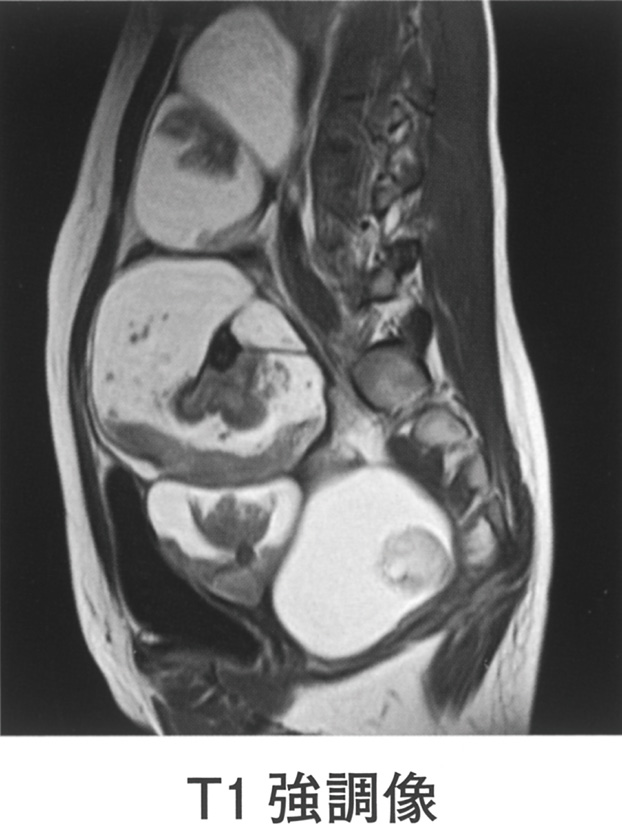
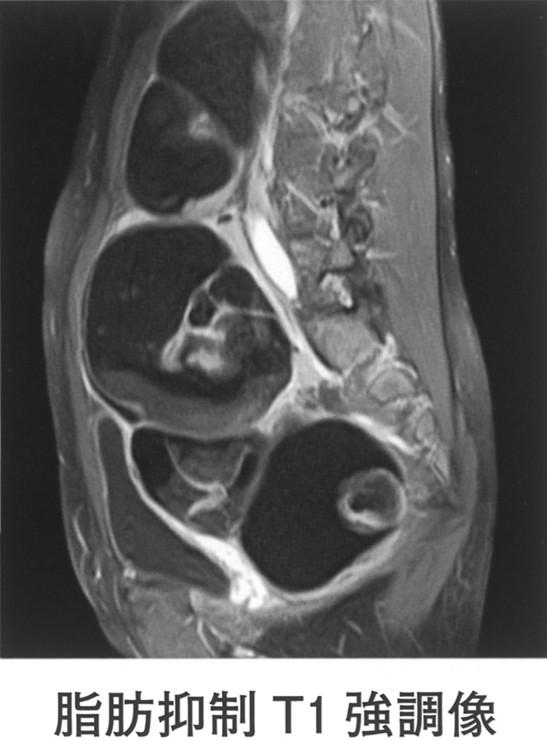
ａ 外科的切除
ｂ 放射線治療
ｃ 分子標的薬投与
ｄ ホルモン薬投与
ｅ 副腎皮質ステロイド投与
✅
ａ 外科的切除
間欠的な下腹部痛を繰り返す若年女性の腹部腫瘤。脂肪を含む成熟囊胞性奇形腫であり、外科的切除を行う。
🧠 MRIの信号から脂肪成分を読む
実際のMRI像は参照できないが、成熟囊胞性奇形腫の典型像はT1強調像で高信号、脂肪抑制T1強調像で信号が低下する（＝脂肪成分）ことである。本問がT1強調像（B）と脂肪抑制T1強調像（C）をわざわざ並べているのは、まさにこの脂肪の証明のためである。・23歳という若年
・突然の下腹部痛が2時間で自然軽快し、2か月前にも同様の発作 → 卵巣腫瘍茎捻転の反復（不完全捻転）を示唆
・恥骨上から臍上6cmに及ぶ腹部腫瘤
・AFP・CA19-9・CA125いずれも基準内 → 悪性腫瘍を積極的に疑う所見がない
これらから成熟囊胞性奇形腫〈皮様囊腫〉と診断される。
💊 治療は外科的切除
成熟囊胞性奇形腫は良性だが、・茎捻転（本例のように疼痛発作を繰り返す）
・破裂（内容が漏れて化学性腹膜炎）
・悪性転化（扁平上皮癌、高齢・大きな腫瘍でリスク）
を起こしうるため、有症状例・大きい腫瘍では外科的切除（腹腔鏡下腫瘍核出術）を行う。
若年で妊孕性温存が必要なため、腫瘍のみを核出し正常卵巣組織を残すのが原則である。
□ 卵巣腫瘍の組織分類
| 分類 | 内容 | ポイント |
|---|---|---|
| 表層上皮性・間質性腫瘍 | 最多（約2/3）。漿液性・粘液性・類内膜・明細胞の各囊胞腺腫／境界悪性／腺癌 | 卵巣癌の大半。漿液性癌が最多 |
| 胚細胞腫瘍 | 若年に好発。成熟囊胞性奇形腫（皮様囊腫）が最多の良性。悪性は未分化胚細胞腫〈ディスジャーミノーマ〉・卵黄囊腫瘍・未熟奇形腫 | 卵黄囊腫瘍→AFP、絨毛癌→hCG、未分化胚細胞腫→LD |
| 性索間質性腫瘍 | ホルモン産生。顆粒膜細胞腫（エストロゲン産生）、莢膜細胞腫、Sertoli-Leydig細胞腫（アンドロゲン産生）、線維腫（Meigs症候群） | 顆粒膜細胞腫 → 不正出血・子宮内膜増殖症・思春期早発 |
| 転移性腫瘍 | 胃癌・大腸癌からが多い。印環細胞癌の両側卵巣転移＝Krukenberg腫瘍 | CEA上昇 |
□ 選択肢の検討
| 選択肢 | 評価 |
|---|---|
| ａ 外科的切除 | 正しい。茎捻転を繰り返しており摘出する |
| ｂ 放射線治療 | 誤り。良性腫瘍に適応なし |
| ｃ 分子標的薬投与 | 誤り。適応なし |
| ｄ ホルモン薬投与 | 誤り。奇形腫はホルモン依存性でない |
| ｅ 副腎皮質ステロイド投与 | 誤り。適応なし |
Q.520(113D-44)★65%
47 歳の女性。1 か月前からの不正性器出血と腰痛を主訴に来院した。月経周期は32 日型。内診で子宮頸部から右側骨盤壁に連続する硬結を触知する。血液所見：赤血球385 万、Hb 11.0g/dL、Ht 33％、白血球9,500、血小板45 万。血液生化学所見：総蛋白6.8g/dL、アルブミン3.5g/dL、AST 30U/L、ALT 22U/L、尿素窒素28mg/dL、クレアチニン0.7mg/dL。腟鏡診で子宮腟部に径4cm のカリフラワー状で易出血性の腫瘤を認めた。生検で扁平上皮癌と診断された。遠隔転移を認めない。
適切な治療はどれか。
適切な治療はどれか。
ａ 手 術
ｂ 放射線療法
ｃ 抗癌化学療法
ｄ 分子標的薬投与
ｅ 化学放射線療法
✅
ｅ 化学放射線療法
子宮頸部から右側骨盤壁に連続する硬結＝ⅢB期。手術適応外であり、同時化学放射線療法を行う。
🧠 進行期の決定が治療を決める
・腟鏡診で子宮腟部に径4cmのカリフラワー状で易出血性の腫瘤、生検で扁平上皮癌・内診で子宮頸部から右側骨盤壁に連続する硬結
・遠隔転移なし
骨盤壁に達する子宮傍結合組織浸潤 ＝ ⅢB期であり、広汎子宮全摘出術の適応にはならない（癌を取り切れない）。
ⅢB期の標準治療はシスプラチンを併用した同時化学放射線療法〈CCRT〉である。化学療法を放射線に同時併用することで放射線増感効果が得られ、放射線単独より生存率が向上する。
本例はクレアチニン0.7mg/dLと腎機能が保たれているため、腎毒性のあるシスプラチンを安全に投与できる。ここが腎機能障害のためシスプラチンを使えず放射線単独とした症例との分かれ目である。
□ 子宮頸癌の進行期と治療
| 進行期 | 定義 | 治療 |
|---|---|---|
| Ⅰ期 | 癌が子宮頸部に限局 | 手術（広汎子宮全摘出術）／放射線 |
| Ⅱ期 | 腟壁または子宮傍結合組織に浸潤するが骨盤壁・腟下1/3に達しない | 手術（ⅡB期は同時化学放射線療法〈CCRT〉も） |
| Ⅲ期 | 骨盤壁に達する／腟下1/3に達する／水腎症・無機能腎 | 手術適応外。同時化学放射線療法〈CCRT〉 |
| Ⅳ期 | 膀胱・直腸粘膜に浸潤／遠隔転移 | 化学放射線療法・化学療法 |
□ 選択肢の検討
| 選択肢 | 評価 |
|---|---|
| ａ 手 術 | 誤り。ⅢB期は手術適応外 |
| ｂ 放射線療法 | 不十分。腎機能が保たれており化学療法を併用すべき |
| ｃ 抗癌化学療法 | 誤り。単独では局所制御が不十分 |
| ｄ 分子標的薬投与 | 誤り。再発・転移例で化学療法と併用する |
| ｅ 化学放射線療法 | 正しい。ⅢB期の標準治療 |
Q.521(111A-21)★📷 画像93%
31 歳の女性。1 回経妊0 回経産婦。胞状奇胎の治療後に妊娠反応陽性が持続するため紹介されて来院した。1 年前から不妊外来で排卵誘発薬の投与を受けていた。3 か月前に妊娠反応陽性となったが、全胞状奇胎と診断され2 回の子宮内容除去術を受けた。基礎体温は1 相性である。内診で子宮はやや腫大、軟。超音波検査で後壁筋層内に血流豊富な径1.5cm の腫瘤を認める。脳、肝、腎臓および腟に異常を認めない。血清hCG の推移（A）と肺野条件の胸部CT（B）とを示す。
治療として適切なのはどれか。
治療として適切なのはどれか。
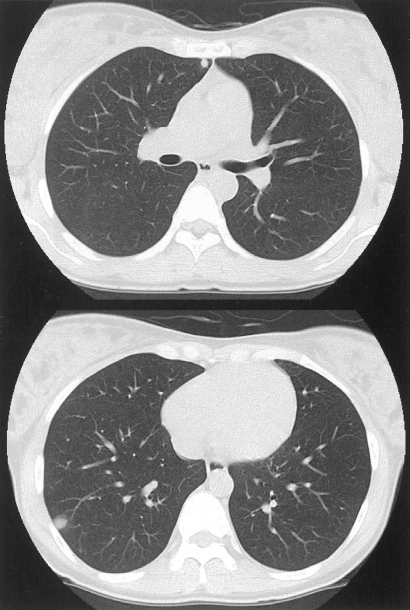
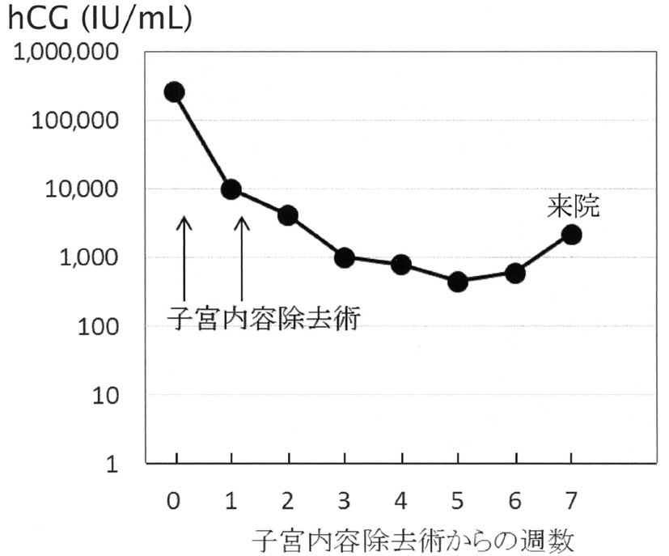
ａ 手術療法
ｂ 放射線療法
ｃ ホルモン療法
ｄ 抗癌化学療法
ｅ 分子標的薬投与
✅
ｄ 抗癌化学療法
胞状奇胎後にhCGが持続陽性、子宮筋層内腫瘤と肺転移を認める絨毛性疾患。治療は抗癌化学療法。
🧠 胞状奇胎後の hCG 持続陽性は絨毛性腫瘍
実際の胸部CTでは肺野に多発する結節影（血行性転移）が、hCG推移では子宮内容除去術後もhCGが下がりきらない、あるいは再上昇する曲線が示されているはずである。・3か月前に全胞状奇胎で2回の子宮内容除去術
・妊娠反応陽性が持続（hCGが正常化しない）
・超音波で子宮後壁筋層内に血流豊富な径1.5cmの腫瘤（筋層内浸潤）
・胸部CTで肺転移
・脳・肝・腎・腟に異常なし
これは侵入奇胎あるいは絨毛癌（＝絨毛性腫瘍）である。絨毛性腫瘍は早期から血行性に肺へ転移することが特徴。
💊 治療は化学療法
絨毛性腫瘍は化学療法に対する感受性が極めて高く、転移があっても化学療法で治癒しうる数少ない悪性腫瘍である。・第一選択：メトトレキサート〈MTX〉またはアクチノマイシンDの単剤療法
・高リスク例：EMA-CO療法などの多剤併用
治療効果と再発の判定はすべてhCGで行う。hCGが陰性化してからも一定期間の化学療法を追加し、その後長期に追跡する。
子宮を摘出しても肺転移は治らず、31歳・0回経産で挙児希望も考えれば化学療法により子宮を温存するのが適切である。
💡 絨毛性疾患のまとめ
- 胞状奇胎：絨毛の水腫性変化。全胞状奇胎は胎児成分なし（父性のみの核）。治療は子宮内容除去術。その後hCGで経過観察
- 侵入奇胎：奇胎組織が子宮筋層に侵入。hCG持続陽性
- 絨毛癌：栄養膜細胞の悪性腫瘍。肺・脳・肝へ血行性転移
- いずれも化学療法（MTX・アクチノマイシンD）が奏効する
□ 選択肢の検討
| 選択肢 | 評価 |
|---|---|
| ａ 手術療法 | 誤り。肺転移があり子宮摘出では治らない。挙児希望もある |
| ｂ 放射線療法 | 誤り。標準治療ではない（脳転移例で補助的に用いる程度） |
| ｃ ホルモン療法 | 誤り。絨毛性腫瘍はホルモン依存性でない |
| ｄ 抗癌化学療法 | 正しい。MTX・アクチノマイシンDが著効し治癒しうる |
| ｅ 分子標的薬投与 | 誤り。標準治療ではない |
Q.522(111D-20)★📷 画像63%
38 歳の女性。3 回経妊3 回経産婦。月経痛を主訴に来院した。30 歳ごろから徐々に月経時の下腹部痛と腰痛が強くなってきた。月経周期は28 日型、整、持続7 日間。内診で子宮は腫大、弾性硬で圧痛はない。Douglas 窩に圧痛を認めない。身長156cm、体重55kg。体温36.5℃。脈拍72/ 分、整。血圧110/58mmHg。血液所見：赤血球350 万、Hb 9.1g/dL、白血球5,500、血小板22 万。骨盤部MRI のT2 強調矢状断像を示す。
診断はどれか。
診断はどれか。
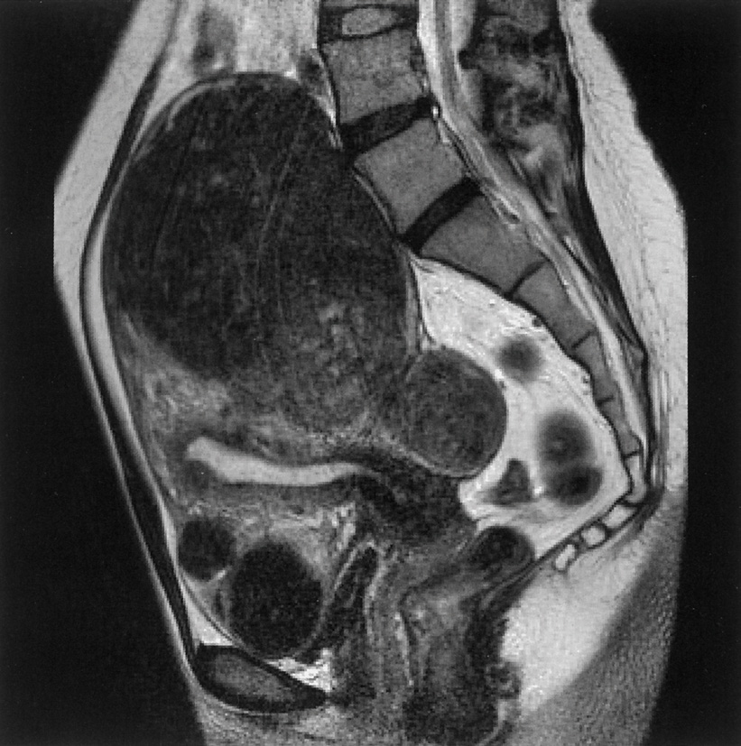
ａ 子宮筋腫
ｂ 子宮肉腫
ｃ 子宮頸癌
ｄ 子宮腺筋症
ｅ 子宮内膜癌
✅
ａ 子宮筋腫
子宮は腫大し弾性硬だが圧痛はなく、Douglas窩にも圧痛がない。MRIで境界明瞭な低信号腫瘤を示す子宮筋腫である。
🧠 「圧痛がない」ことが子宮腺筋症を否定する
実際の骨盤部MRI T2強調矢状断像は参照できないが、子宮筋腫では境界明瞭な類円形の低信号腫瘤が、子宮腺筋症では境界不明瞭な接合帯のびまん性肥厚が描出される。本例の鑑別のポイントは：
・子宮は腫大、弾性硬
・圧痛はない
・Douglas窩に圧痛を認めない
・Hb 9.1g/dLの貧血（過多月経を示唆）
子宮腺筋症では子宮に圧痛を認め、子宮内膜症を合併すればDouglas窩にも有痛性硬結を触れる。本例はいずれも陰性であり、子宮筋腫が診断となる。
なお本例に月経困難症があるのは、筋腫が大きく子宮収縮を妨げるためで矛盾しない。
□ 子宮筋腫・腺筋症・内膜症の鑑別
| 疾患 | 内診所見 | MRI | 症状 | 治療 |
|---|---|---|---|---|
| 子宮筋腫 | 弾性硬・凹凸不整に腫大、圧痛なし | 境界明瞭な低信号腫瘤 | 過多月経・貧血・圧迫症状（頻尿）・不妊 | 核出術（妊孕性温存）／全摘／子宮動脈塞栓術 |
| 子宮腺筋症 | 硬く球状に腫大、圧痛あり | 接合帯〈junctional zone〉のびまん性肥厚（境界不明瞭） | 強い月経困難症・過多月経。CA125上昇 | 薬物療法／全摘 |
| 子宮内膜症 | 子宮は正常大だが可動性不良、Douglas窩に有痛性硬結 | チョコレート囊胞（T1高信号・T2低信号のshading） | 月経困難症・性交痛・排便痛・不妊。CA125上昇 | 薬物療法／囊胞摘出術 |
□ 選択肢の検討
| 選択肢 | 評価 |
|---|---|
| ａ 子宮筋腫 | 正しい。弾性硬・圧痛なし・境界明瞭な低信号腫瘤 |
| ｂ 子宮肉腫 | 誤り。急速増大・閉経後発症が多く、LD高値を伴う |
| ｃ 子宮頸癌 | 誤り。子宮腟部の腫瘤・不正出血が主で子宮体部は腫大しない |
| ｄ 子宮腺筋症 | 誤り。圧痛を伴うのが特徴。本例は圧痛なし |
| ｅ 子宮内膜癌 | 誤り。閉経後の不正出血が典型。子宮は弾性硬に腫大しない |
Q.523(110I-7)★📷 画像82%
子宮頸部細胞診とコルポスコピィで異常所見を認めた患者に狙い組織診を行った。その際のH-E 染色標本（A，B）を示す。
診断はどれか。
診断はどれか。
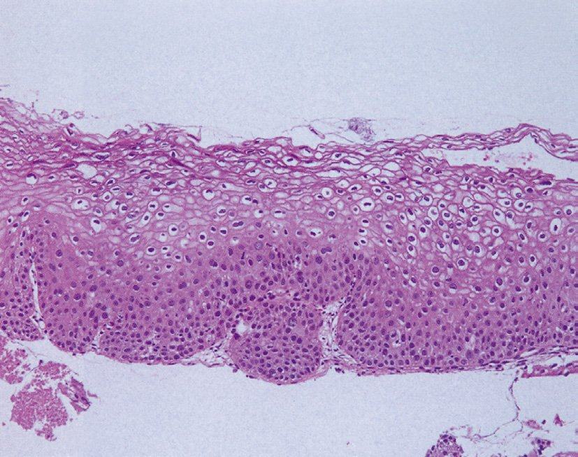
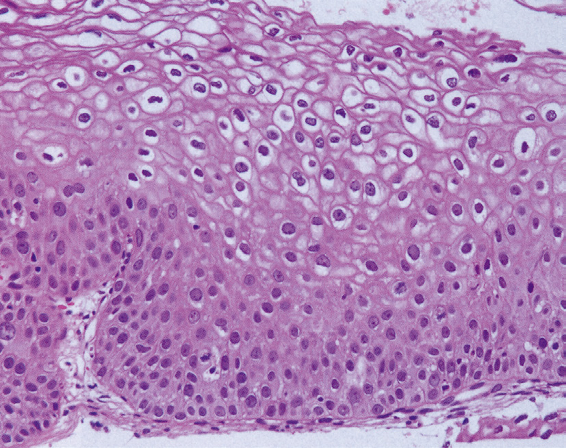
ａ 子宮頸癌
ｂ 萎縮性腟炎
ｃ 子宮頸部異形成
ｄ クラミジア頸管炎
ｅ トリコモナス腟炎
✅
ｃ 子宮頸部異形成
細胞診とコルポスコピィで異常を認め狙い組織診を施行。上皮内に留まる異型細胞＝子宮頸部異形成〈CIN〉。
🧠 組織像の読み方
実際のH-E染色標本は参照できないが、子宮頸部異形成では扁平上皮の基底層側から異型細胞が増殖し、極性の乱れ・核腫大・核分裂像を認めるが、基底膜は保たれ間質への浸潤がない像が示されているはずである。「異型細胞が上皮内に留まり、基底膜を破っていない」ことが異形成〈CIN〉および上皮内癌の定義である。基底膜を破って間質に浸潤すれば浸潤癌（子宮頸癌）となる。
本例は細胞診とコルポスコピィで異常を指摘され、その場所を狙って生検したという文脈からも、まず考えるべきは子宮頸部異形成である。
□ 子宮頸癌のスクリーニングと確定診断
子宮頸癌のスクリーニングから確定診断までの流れ① 子宮頸部細胞診（検診。異常なら次へ）
② コルポスコピィ〈腟拡大鏡診〉（酢酸加工で白色上皮・モザイク・赤点斑などの異常所見を探す）
③ コルポスコピィ下の狙い組織診 ＝ 確定診断
細胞診もコルポスコピィもあくまでスクリーニング／病変の位置決めであり確定診断にならない。組織診（生検）で初めて診断が確定する。
子宮頸部上皮内腫瘍〈CIN〉の管理：
・CIN1（軽度異形成）・CIN2（中等度異形成）→ 多くは自然消退するため経過観察（細胞診を半年ごと）
・CIN3（高度異形成・上皮内癌） → 子宮頸部円錐切除術
□ 選択肢の検討
| 選択肢 | 評価 |
|---|---|
| ａ 子宮頸癌 | 誤り。間質浸潤を伴う。異形成とは基底膜の突破で区別 |
| ｂ 萎縮性腟炎 | 誤り。閉経後の低エストロゲンによる。異型細胞は伴わない |
| ｃ 子宮頸部異形成 | 正しい。上皮内に留まる異型細胞 |
| ｄ クラミジア頸管炎 | 誤り。炎症細胞浸潤が主で異型上皮は伴わない |
| ｅ トリコモナス腟炎 | 誤り。黄色泡沫状帯下・掻痒が主症状 |
Q.524(109A-43)★📷 画像79%
23 歳の女性。卵巣囊腫の精査を目的に来院した。月経は28 日型、整。2 週前の職場の健康診断で腹部超音波検査を受け右卵巣囊腫を指摘された。自覚症状はない。内診で径5cm の軟らかい右付属器腫瘤を触知し、可動性は良好で圧痛を認めない。右卵巣の経腟超音波像を示す。
この腫瘤への対応として最も適切なのはどれか。
この腫瘤への対応として最も適切なのはどれか。
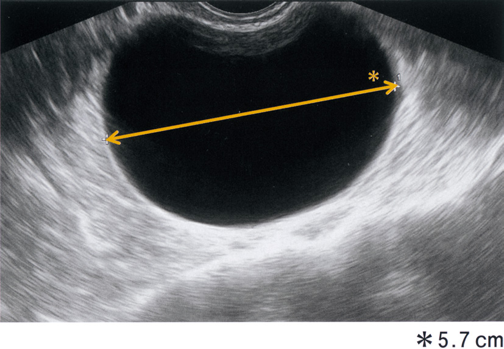
ａ 骨盤部CT
ｂ 右付属器摘出
ｃ 囊胞穿刺吸引
ｄ GnRH アゴニスト療法
ｅ 経過観察（3 か月後の再診）
✅
ｅ 経過観察（3 か月後の再診）
若年女性の無症状・可動性良好で軟らかい径5cmの単房性囊胞。機能性囊胞（濾胞囊胞）と考え経過観察する。
🧠 機能性卵巣囊胞は自然に消退する
実際の経腟超音波像は参照できないが、機能性囊胞では内部が均一な無エコー（液体）で、充実部分・隔壁・乳頭状突起を伴わない単房性囊胞が描出されているはずである。・23歳という若年、月経は28日型・整
・健診で偶然指摘され自覚症状なし
・径5cmの軟らかい腫瘤、可動性良好、圧痛なし
「軟らかい・可動性良好・圧痛なし」は良性の囊胞性病変を示す所見である。
排卵前の卵胞や排卵後の黄体は生理的に囊胞状となり、ときに数cmに達する（濾胞囊胞・黄体囊胞＝機能性囊胞）。これらは多くが数か月で自然に消退するため、まず3か月後に再診して縮小・消失を確認するのが適切である。
⚠️ 卵巣腫瘍で「してはいけないこと」
- 囊胞穿刺吸引は行わない。悪性なら腹膜播種を招き、良性でも再発する
- 無症状・小型・単純囊胞ならまず経過観察
- 悪性を疑うのは充実部分・隔壁・乳頭状突起・腹水・可動性不良・腫瘍マーカー高値
□ 選択肢の検討
| 選択肢 | 評価 |
|---|---|
| ａ 骨盤部CT | 誤り。被曝を伴い、良性が強く疑われる時点では不要 |
| ｂ 右付属器摘出 | 過剰。若年で妊孕性を損なう。良性で自然消退しうる |
| ｃ 囊胞穿刺吸引 | 誤り。播種の危険があり原則行わない |
| ｄ GnRHアゴニスト療法 | 誤り。機能性囊胞に投与する必要はない |
| ｅ 経過観察（3か月後の再診） | 正しい。多くは自然消退する |
Q.525(109D-60)★3択76%
32 歳の女性。未経妊。月経痛を主訴に来院した。月経周期は29 日型、整。5 年前から毎月、月経痛に対し鎮痛薬を服用していた。6 か月前から下腹部痛が強くなり仕事や家事に差し支えるようになった。2 か月前から持続的な腰痛も出現するようになったため受診した。将来の挙児を希望している。内診で子宮は正常で、有痛性で腫大した両側付属器を触れる。Douglas 窩に有痛性の硬結を触知する。経腟超音波検査で両側卵巣にチョコレート囊胞（右は径3cm、左は径2cm）を認める。
治療として適切なのはどれか。3 つ選べ。
治療として適切なのはどれか。3 つ選べ。
ａ 低用量ピル
ｂ GnRH アゴニスト
ｃ 黄体ホルモン療法
ｄ 副腎皮質ステロイド
ｅ エストロゲン補充療法
✅
ａ 低用量ピル
ｂ GnRH アゴニスト
ｃ 黄体ホルモン療法
子宮内膜症の薬物療法は低エストロゲン状態をつくること。低用量ピル・GnRHアゴニスト・黄体ホルモン療法が適応。
🧠 子宮内膜症と診断する
・32歳、5年前から月経困難症、6か月前から増悪し日常生活に支障・月経時以外にも持続する腰痛（慢性骨盤痛）
・Douglas窩に有痛性の硬結
・両側卵巣にチョコレート囊胞（右3cm・左2cm）
子宮内膜症の典型例である。囊胞は右3cm・左2cmと小さく、まず薬物療法の適応となる（一般に径5〜6cm以上や悪性が疑われる場合に手術を検討）。
💊 治療の原則：エストロゲンを下げる
子宮内膜症はエストロゲン依存性疾患であり、排卵・月経を止めて低エストロゲン状態にすることが薬物療法の原則。・低用量エストロゲン・プロゲスチン配合薬〈LEP〉／低用量ピル：排卵を抑制。長期継続でき第一選択
・黄体ホルモン療法（ジエノゲスト等）：内膜組織を萎縮させる。長期投与可
・GnRHアゴニスト：下垂体を脱感作しゴナドトロピンを抑制、偽閉経療法。低エストロゲンによる骨粗鬆症のため原則6か月まで
エストロゲン補充は病巣を増悪させるため禁忌。副腎皮質ステロイドは無効。
□ 選択肢の検討
| 選択肢 | 評価 |
|---|---|
| ａ 低用量ピル | 正しい。排卵を抑制し月経量・疼痛を減らす。長期継続可能 |
| ｂ GnRHアゴニスト | 正しい。偽閉経療法。骨粗鬆症のため原則6か月まで |
| ｃ 黄体ホルモン療法 | 正しい。ジエノゲスト等が病巣を萎縮させる |
| ｄ 副腎皮質ステロイド | 誤り。子宮内膜症に有効でない |
| ｅ エストロゲン補充療法 | 禁忌。内膜症はエストロゲン依存性であり病巣を増悪させる |
Q.526(108A-30)★📷 画像50%
21 歳の女性。下腹部のしこりを主訴に来院した。内診で子宮は正常大で、右付属器が手拳大に腫大していた。腫瘍マーカーはCA19-9 17.5U/ml（基準37 以下）、CA125 56.7U/ml（基準35 以下）、α-フェトプロテイン〈AFP〉960ng/ml（基準20 以下）。悪性卵巣腫瘍を疑い、右付属器切除術と大網切除術とを施行した。術中写真（A）と摘出腫瘍のH-E 染色標本（B）とを示す。
最も考えられるのはどれか。
最も考えられるのはどれか。

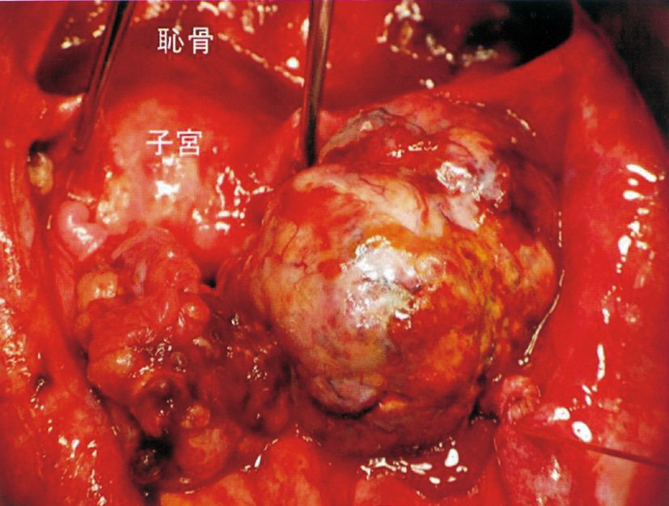
ａ 未熟奇形腫
ｂ 明細胞腺癌
ｃ 卵黄囊腫瘍
ｄ 顆粒膜細胞腫
ｅ ディスジャーミノーマ
✅
ｃ 卵黄囊腫瘍
AFP 960ng/mLの著明高値を示す若年女性の卵巣悪性腫瘍。AFP産生腫瘍である卵黄囊腫瘍が最も考えられる。
🧠 腫瘍マーカーが組織型を語る
実際の術中写真・H-E染色標本は参照できないが、卵黄囊腫瘍では血管を中心とし腫瘍細胞が周囲を取り巻く糸球体様の構造（Schiller-Duval小体）が示されているはずである。| 所見 | 意味 |
|---|---|
| 21歳という若年 | 胚細胞腫瘍の好発年齢 |
| 右付属器が手拳大に急速に腫大 | 胚細胞腫瘍は急速に増大する |
| AFP 960ng/mL（基準20以下）と著明高値 | 卵黄囊腫瘍に特異的 |
| CA125 56.7U/mL（軽度上昇） | 腹膜刺激による非特異的上昇 |
| CA19-9 17.5U/mL（正常） | 粘液性腫瘍・奇形腫は否定的 |
若年女性＋卵巣腫瘍＋AFP高値 ＝ 卵黄囊腫瘍と直結させたい。
💡 胚細胞腫瘍と腫瘍マーカーの対応
- 卵黄囊腫瘍 → AFP
- 絨毛癌 → hCG
- 未分化胚細胞腫〈ディスジャーミノーマ〉 → LD（AFPは上昇しない）
- 未熟奇形腫 → AFPが軽度上昇することがある
- 治療は患側付属器摘出術＋ステージング（妊孕性温存）＋BEP化学療法
□ 卵巣腫瘍の組織分類
| 分類 | 内容 | ポイント |
|---|---|---|
| 表層上皮性・間質性腫瘍 | 最多（約2/3）。漿液性・粘液性・類内膜・明細胞の各囊胞腺腫／境界悪性／腺癌 | 卵巣癌の大半。漿液性癌が最多 |
| 胚細胞腫瘍 | 若年に好発。成熟囊胞性奇形腫（皮様囊腫）が最多の良性。悪性は未分化胚細胞腫〈ディスジャーミノーマ〉・卵黄囊腫瘍・未熟奇形腫 | 卵黄囊腫瘍→AFP、絨毛癌→hCG、未分化胚細胞腫→LD |
| 性索間質性腫瘍 | ホルモン産生。顆粒膜細胞腫（エストロゲン産生）、莢膜細胞腫、Sertoli-Leydig細胞腫（アンドロゲン産生）、線維腫（Meigs症候群） | 顆粒膜細胞腫 → 不正出血・子宮内膜増殖症・思春期早発 |
| 転移性腫瘍 | 胃癌・大腸癌からが多い。印環細胞癌の両側卵巣転移＝Krukenberg腫瘍 | CEA上昇 |
□ 選択肢の検討
| 選択肢 | 評価 |
|---|---|
| ａ 未熟奇形腫 | 誤り。AFPは上昇しても軽度。神経上皮成分を含む |
| ｂ 明細胞腺癌 | 誤り。中年以降・子宮内膜症を母地とし、AFPは上昇しない |
| ｃ 卵黄囊腫瘍 | 正しい。AFP著明高値。Schiller-Duval小体 |
| ｄ 顆粒膜細胞腫 | 誤り。エストロゲンを産生。AFPは上昇しない |
| ｅ ディスジャーミノーマ | 誤り。LDが上昇するがAFPは上昇しない |
A
一般問題
Q.527〜Q.611
Q.527(118A-26)📷 画像92%
33 歳の女性（1 妊0 産）。下腹部痛と過多月経を主訴に来院した。月経周期は28 日型、整、持続7 日間。2 年前から月経痛があり市販の鎮痛薬を服用している。4 か月前から月経血量の増加と下腹部鈍痛を自覚したため受診した。3 年前に流産のため子宮内容除去術を受けた。身長168cm、体重60kg。体温36.0℃。脈拍76/ 分、整。血圧110/74mmHg。内診で子宮は約10cm に腫大し、両側付属器は触知しない。Douglas 窩の硬結を触知しない。血液所見：赤血球340 万、Hb 9.4g/dL、Ht 32％、白血球6,400、血小板25 万。血液生化学所見：総蛋白6.2g/dL、AST 20U/L、ALT 18U/L、LD 186U/L（基準124 ～222）、CA125 106U/mL（基準35 以下）。骨盤部単純MRI のT2 強調矢状断像を示す。
診断はどれか。
診断はどれか。
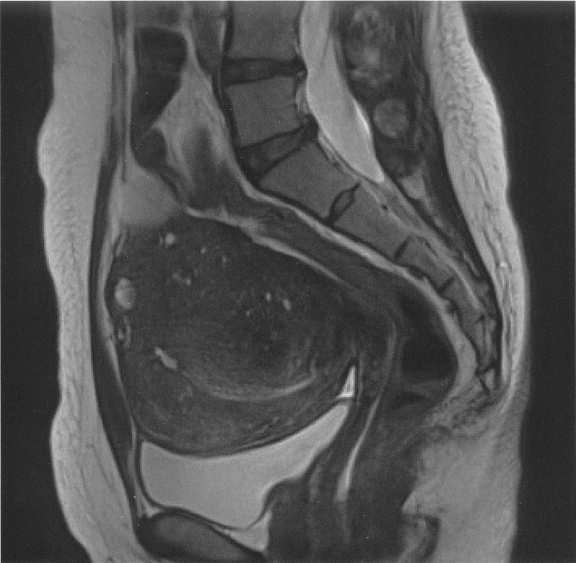
ａ 子宮筋腫
ｂ 子宮肉腫
ｃ 子宮腺筋症
ｄ 子宮内膜増殖症
ｅ 子宮内膜ポリープ
✅
ｃ 子宮腺筋症
子宮が10cmに腫大し、過多月経と月経痛を伴いCA125が106U/mLと上昇。子宮腺筋症である。
🧠 CA125高値と月経痛の強さが腺筋症を示す
実際の骨盤部MRI T2強調矢状断像は参照できないが、子宮腺筋症では子宮筋層の接合帯〈junctional zone〉がびまん性に肥厚し、内部に点状の高信号（異所性内膜と出血）を伴う境界不明瞭な病変が描出されているはずである。| 所見 | 意味 |
|---|---|
| 子宮は約10cmに腫大 | 筋腫・腺筋症のいずれでも起こる |
| 2年前からの月経痛（月経困難症） | 腺筋症を強く示唆 |
| 過多月経・Hb 9.4g/dLの貧血 | 筋層内に散在する異所性内膜からの出血 |
| CA125 106U/mL（基準35以下）と明らかな上昇 | 子宮腺筋症・子宮内膜症で上昇。子宮筋腫では通常上昇しない |
| 3年前に流産で子宮内容除去術 | 内膜が筋層に迷入する契機となりうる（腺筋症の危険因子） |
| Douglas窩の硬結を触知しない | 腹膜の子宮内膜症は合併していない |
とくにCA125の上昇は、子宮筋腫では説明できず腺筋症を支持する決定的な所見である。
□ 子宮筋腫・腺筋症・内膜症の鑑別
| 疾患 | 内診所見 | MRI | 症状 |
|---|---|---|---|
| 子宮筋腫 | 弾性硬・凹凸不整に腫大、圧痛なし | 境界明瞭な低信号腫瘤 | 過多月経・貧血・圧迫症状・不妊 |
| 子宮腺筋症 | 硬く球状に腫大、圧痛あり | 接合帯〈junctional zone〉のびまん性肥厚（境界不明瞭） | 強い月経困難症・過多月経。CA125上昇 |
| 子宮内膜症 | 子宮は正常大だが可動性不良、Douglas窩に有痛性硬結 | チョコレート囊胞（T1高信号・T2低信号のshading） | 月経困難症・性交痛・排便痛・不妊。CA125上昇 |
□ 選択肢の検討
| 選択肢 | 評価 |
|---|---|
| ａ 子宮筋腫 | 誤り。CA125は通常上昇せず、境界明瞭な低信号腫瘤となる |
| ｂ 子宮肉腫 | 誤り。閉経後の急速増大・LD高値が典型 |
| ｃ 子宮腺筋症 | 正しい。月経困難症＋過多月経＋CA125上昇 |
| ｄ 子宮内膜増殖症 | 誤り。不正出血が主で子宮は10cmに腫大しない |
| ｅ 子宮内膜ポリープ | 誤り。小さな内腔病変で子宮は腫大しない |
Q.528(117D-21)📷 画像99%
49 歳の女性（3 妊2 産）。外陰部腫瘤と疼痛を主訴に来院した。半年前から外陰部に痒みを自覚し、市販の軟膏を塗布していた。3 か月前から腫瘤を触知するようになり、2 週間前から疼痛が出現したため受診した。既往歴と家族歴に特記すべきことはない。身長160cm、体重52kg。身体所見に異常を認めない。血液所見と血液生化学所見とに異常を認めない。外陰部病変の生検結果は浸潤扁平上皮癌で、十分な切除範囲を得るために肉眼的病変部の2cm 外側皮膚の生検を行ったところ、生検部位に異常を認めなかった。外陰部全体の全体像（A）と病変部（B）を示す。
この患者に根治的手術治療を行う場合に摘出しないのはどれか。
この患者に根治的手術治療を行う場合に摘出しないのはどれか。
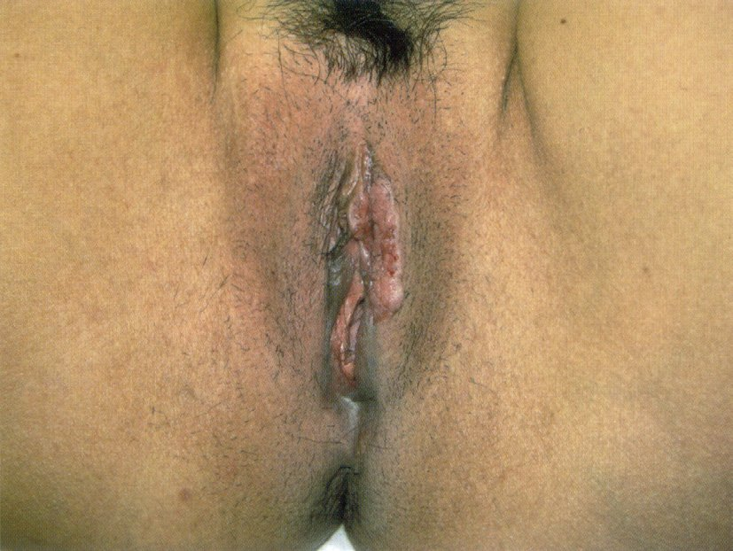
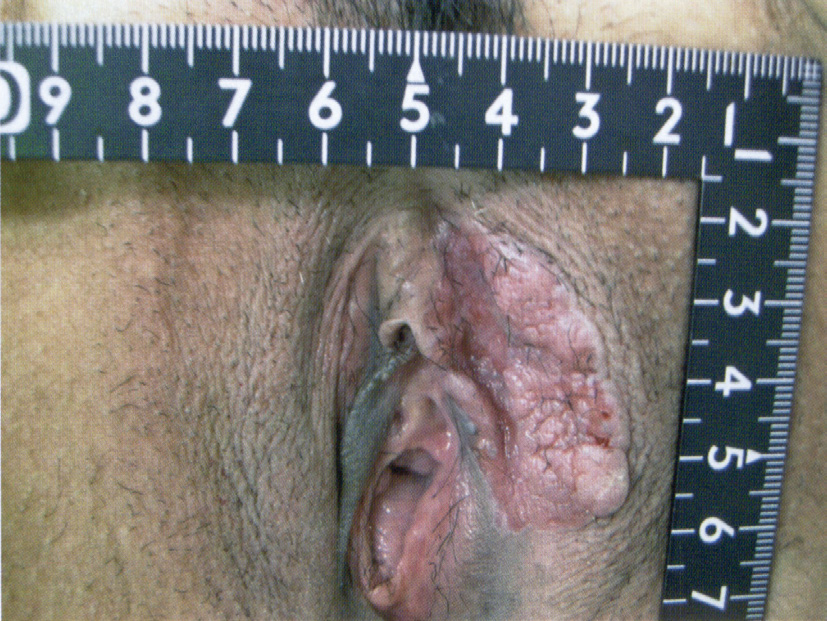
ａ 陰 核
ｂ 会 陰
ｃ 肛 門
ｄ 小陰唇
ｅ 大陰唇
✅
ｃ 肛 門
外陰癌の根治術（広汎外陰切除術）では大陰唇・小陰唇・陰核・会陰を切除するが、肛門は温存する。
🧠 広汎外陰切除術で切除する範囲
実際の外陰部写真は参照できないが、外陰癌では隆起性あるいは潰瘍性の腫瘤が示されているはずである。本例では肉眼的病変の2cm外側の皮膚生検で異常なしと確認されており、そこまでを切除縁とすれば腫瘍を完全に切除できる。
広汎外陰切除術では、外陰を構成する
・大陰唇・小陰唇
・陰核
・会陰
を一塊として切除し、必要に応じて鼠径リンパ節郭清を行う。
一方肛門は外陰の構成要素ではなく、病変から離れており切除しない。肛門括約筋を切除すれば便失禁を来し著しくQOLを損なうため、直腸・肛門への直接浸潤がない限り温存する。
□ 選択肢の検討
| 選択肢 | 評価 |
|---|---|
| ａ 陰 核 | 摘出する。外陰の構成要素 |
| ｂ 会 陰 | 摘出する。外陰の構成要素 |
| ｃ 肛 門 | 摘出しない。浸潤がなければ温存する（便失禁を避ける） |
| ｄ 小陰唇 | 摘出する。外陰の構成要素 |
| ｅ 大陰唇 | 摘出する。病変の主座 |
Q.529(117D-60)24%
58 歳の女性（2 妊1 産）。不正出血を主訴に来院した。30 歳の2 回目妊娠時に、①胞状奇胎の診断で子宮内容除去術を受けた。42 歳時に子宮頸部細胞診異常と②ヒトパピローマウイルス〈HPV〉検査陽性を指摘されたが、その後の通院を自己中断した。45 歳時に子宮頸癌ⅡB 期（扁平上皮癌）と診断され、③薬物による抗癌治療と④根治的放射線治療を受けている。治療後、48 歳時から骨粗鬆症の診断で⑤ビスホスホネート製剤が投与されている。来院時の子宮内膜組織検査で癌肉腫と診断された。その後行った骨盤部単純MRI で子宮体部腫瘤が認められ、FDG-PETでは同部位にのみ異常集積を認めた。
下線部のうち、今回の子宮体部癌肉腫の発生と最も関連が深いのはどれか。
下線部のうち、今回の子宮体部癌肉腫の発生と最も関連が深いのはどれか。
ａ ①
ｂ ②
ｃ ③
ｄ ④
ｅ ⑤
✅
ｄ ④
子宮頸癌に対する根治的放射線治療の照射野に子宮体部が含まれる。13年後の子宮体部癌肉腫は放射線誘発の二次癌である。
🧠 放射線誘発二次癌としての癌肉腫
45歳時に子宮頸癌ⅡB期に対し根治的放射線治療（下線部④）を受け、13年後の58歳で子宮体部に癌肉腫が発生した。子宮頸癌の根治的放射線治療では、外部照射と腔内照射により子宮体部を含む骨盤内が高線量の照射野に入る。
放射線誘発二次癌は
・照射野内から発生する
・照射から10年以上の長い潜伏期を経て発症する
・肉腫（癌肉腫を含む）の頻度が高い
という特徴をもつ。本例はこの3条件をすべて満たしており、根治的放射線治療（④）が最も関連が深い。
子宮体部の癌肉腫〈carcinosarcoma〉は癌腫成分と肉腫成分が混在する予後不良の腫瘍で、放射線照射後の二次癌としてよく知られている。
□ 選択肢の検討
| 選択肢 | 評価 |
|---|---|
| ａ ①胞状奇胎 | 誤り。絨毛性疾患は絨毛癌のリスクだが子宮体部癌肉腫とは無関係 |
| ｂ ②HPV検査陽性 | 誤り。HPVは子宮頸癌の原因であり体癌の原因ではない |
| ｃ ③薬物による抗癌治療 | 一部の抗癌薬（アルキル化剤）は二次性白血病のリスクだが、子宮体部の腫瘍発生との関連は放射線ほど明確でない |
| ｄ ④根治的放射線治療 | 正しい。照射野内・長い潜伏期・肉腫成分の3点が合致 |
| ｅ ⑤ビスホスホネート製剤 | 誤り。顎骨壊死・非定型大腿骨骨折が副作用で発癌性はない |
Q.530(117E-26)📷 画像
28 歳の女性（0 妊0 産、挙児希望あり）。息切れとめまいを主訴に救急車で搬入された。6 か月前から月経血量が増え、夜中に夜間用ナプキンを超えて出血する回数が多くなった。最近は階段を昇るときに息切れを自覚していた。1 週間前に産婦人科を受診し、骨盤部MRI 検査を行った。3 日前から月経が始まり、昨晩から多量の性器出血があり、朝にはめまいが出現し起立できず、救急車を要請した。1 年前の子宮頸がん検診で異常は指摘されていないという。顔面蒼白だが、意識は清明。身長160cm、体重52kg。体温36.4℃。心拍数120/ 分、整。血圧80/42mmHg。呼吸数22/ 分。SpO2 99％（room air）。血液所見：赤血球182 万、Hb 4.5g/dL、Ht 17％、白血球6,700、血小板21 万、PT-INR 1.0（基準0.9 ～1.1）。血液生化学所見：総蛋白6.7g/dL、アルブミン3.2g/dL、直接ビリルビン0.3mg/dL、AST 24U/L、ALT 22U/L、LD 138U/L（基準120 ～245）、γ-GT 17U/L（基準8 ～50）、尿素窒素20mg/dL、クレアチニン0.6mg/dL、Na 140mEq/L、K 4.4mEq/L、Cl 105mEq/L、Fe 14μg/dL、フェリチン10ng/mL（基準20～120）。心電図に異常を認めない。腟鏡診で腟内に多量の凝血塊を認める。内診（双合診）で子宮長は10cm を超えるが可動性は良好、子宮下部に弾性硬の腫瘤を触知する。骨盤部単純MRI T2 強調矢状断像を示す。
この患者で酸素投与、静脈路確保、心電図モニタリングに引き続き直ちに行うべき治療法はどれか。
この患者で酸素投与、静脈路確保、心電図モニタリングに引き続き直ちに行うべき治療法はどれか。
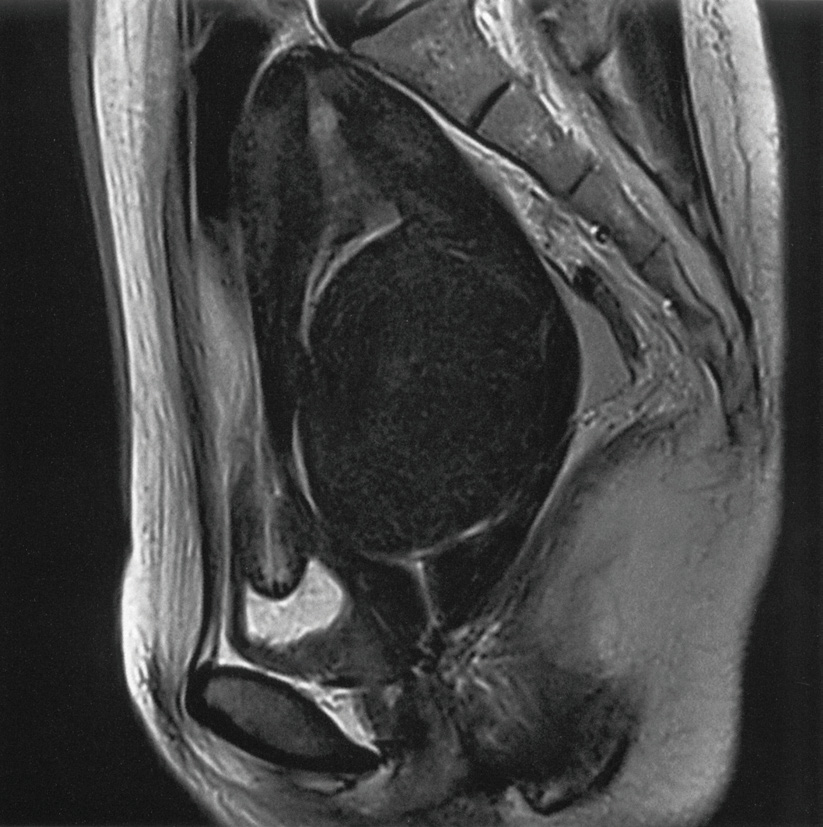
ａ 赤血球輸血
ｂ 鉄剤静脈内投与
ｃ 内分泌（ホルモン）薬による治療
ｄ 子宮全摘出術
ｅ 子宮動脈塞栓術
✅
ａ 赤血球輸血
Hb 4.5g/dL・血圧80/42mmHg・心拍数120/分の出血性ショック。まず赤血球輸血で酸素運搬能を回復させる。
🧠 命を救う順序で考える
実際の骨盤部MRI T2強調矢状断像は参照できないが、子宮下部に突出する境界明瞭な低信号腫瘤（粘膜下筋腫）が描出されているはずである。しかし本問で問われているのは筋腫の治療ではなく、目前の出血性ショックへの対応である。
| 所見 | 意味 |
|---|---|
| Hb 4.5g/dL・Ht 17％ | 高度貧血。酸素運搬能が危機的 |
| 心拍数120/分・血圧80/42mmHg | 出血性ショック |
| めまいで起立できず、顔面蒼白 | 循環不全 |
| 腟内に多量の凝血塊、昨晩から多量の性器出血 | 現在も進行する出血 |
| Fe 14μg/dL、フェリチン10ng/mL | 慢性の鉄欠乏に急性出血が重なった |
酸素投与・静脈路確保・心電図モニタリングに続いて直ちに行うべきは、失われた赤血球を補う赤血球輸血である。Hb 4.5g/dLでショックを呈しており、輸液だけでは酸素運搬能は回復しない。
鉄剤は赤血球産生に数週間を要し急性期には無効。子宮全摘出術・子宮動脈塞栓術は循環動態を安定させてから検討する（そもそも28歳・挙児希望であり子宮全摘は最後の手段）。
□ 選択肢の検討
| 選択肢 | 評価 |
|---|---|
| ａ 赤血球輸血 | 正しい。Hb 4.5g/dLの出血性ショック。直ちに酸素運搬能を回復 |
| ｂ 鉄剤静脈内投与 | 誤り。効果発現に数週間を要し急性期の救命にならない |
| ｃ 内分泌（ホルモン）薬による治療 | 誤り。止血効果の発現が遅い |
| ｄ 子宮全摘出術 | 誤り。28歳・挙児希望あり。まず循環を安定させる |
| ｅ 子宮動脈塞栓術 | 誤り。輸血で全身状態を立て直してから検討 |
Q.531(115A-17)97%
22 歳の女性。子宮頸がん検診の細胞診で、軽度異形成〈子宮頸部上皮内腫瘍〉疑いとされ精査目的で来院した。子宮がん検診を受けたのは今回が初めてである。内診および経腟超音波検査で子宮と卵巣に異常を認めない。腟鏡診では、子宮腟部に肉眼で異常を認めない。
この患者でまず行うのはどれか。
この患者でまず行うのはどれか。
ａ 子宮全摘出
ｂ 抗ウイルス薬投与
ｃ 子宮頸部円錐切除
ｄ 腫瘍マーカー測定
ｅ コルポスコピィ検査
✅
ｅ コルポスコピィ検査
細胞診で異常を指摘されたら次はコルポスコピィで病変の位置を特定し、狙い組織診につなげる。
🧠 細胞診異常の次の一手
22歳の初回検診の細胞診で軽度異形成〈CIN〉疑いとされた。ただし・内診・経腟超音波で子宮・卵巣に異常なし
・腟鏡診で子宮腟部に肉眼的異常なし（＝浸潤癌ではない）
細胞診はあくまでスクリーニングであり、病変がどこにあり、どこまで深く及ぶかは分からない。
そこで次に行うのがコルポスコピィ〈腟拡大鏡診〉である。酢酸を塗布して白色上皮・モザイク・赤点斑などの異常所見を探し、最も異型が強そうな部位を狙って組織診（生検）を行うことで確定診断に至る。
この「細胞診 → コルポスコピィ → 狙い組織診」の順序が子宮頸癌診療の基本であり、順序を飛ばしてはならない。
□ 子宮頸癌のスクリーニングと確定診断
① 子宮頸部細胞診（検診。異常なら次へ）② コルポスコピィ〈腟拡大鏡診〉（酢酸加工で白色上皮・モザイク・赤点斑などの異常所見の場所を特定）
③ コルポスコピィ下の狙い組織診 ＝ 確定診断
細胞診もコルポスコピィもスクリーニング／病変の位置決めであり確定診断にならない。組織診（生検）で初めて診断が確定する。
・CIN1（軽度異形成）・CIN2（中等度異形成）→ 多くは自然消退するため経過観察
・CIN3（高度異形成・上皮内癌） → 子宮頸部円錐切除術
□ 選択肢の検討
| 選択肢 | 評価 |
|---|---|
| ａ 子宮全摘出 | 誤り。診断も確定しておらず、22歳で論外 |
| ｂ 抗ウイルス薬投与 | 誤り。HPVに有効な抗ウイルス薬はない |
| ｃ 子宮頸部円錐切除 | 誤り。CIN3の治療。診断確定前には行わない |
| ｄ 腫瘍マーカー測定 | 誤り。上皮内病変ではSCCは上昇せず有用でない |
| ｅ コルポスコピィ検査 | 正しい。病変の位置を特定し狙い組織診につなげる |
Q.532(115A-33)📷 画像89%
18 歳の女性。下腹部鈍痛を主訴に来院した。3 か月前から腹満感が出現し、1 か月前から下腹部鈍痛が出現した。初経12 歳、月経周期28 日型、整、持続5 日間。性交経験はない。身長161cm、体重55kg。体温37.0℃。脈拍92/ 分、整。血圧124/74mmHg。下腹部は軽度に膨隆し、直腸指診で圧痛を伴う可動性不良な腫瘤を触知する。直腸に異常を認めない。血液生化学所見：hCG ＜0.5IU/L（基準1.0 以下）、CEA 1.6ng/mL（基準4.9 以下）、CA19-9 10U/mL（基準37 以下）、CA125 418U/mL（基準35 以下）、AFP 140,000ng/mL（基準20 以下）。骨盤部MRI のT2 強調矢状断像を示す。
最も考えられる疾患はどれか。
最も考えられる疾患はどれか。
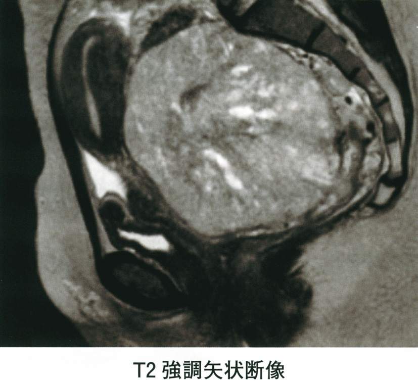
ａ 胚細胞腫瘍
ｂ 扁平上皮癌
ｃ 性索間質腫瘍
ｄ 機能性卵巣囊胞
ｅ チョコレート囊胞
✅
ａ 胚細胞腫瘍
AFP 140,000ng/mLの著明高値。18歳女性の卵巣充実性腫瘍であり胚細胞腫瘍（卵黄囊腫瘍）が考えられる。
🧠 若年女性＋AFP著明高値＝胚細胞腫瘍
実際の骨盤部MRI T2強調矢状断像は参照できないが、骨盤内を占拠する充実性成分に富む腫瘤が描出されているはずである。| 所見 | 意味 |
|---|---|
| 18歳という若年 | 胚細胞腫瘍の好発年齢 |
| 3か月で腹満感 → 下腹部鈍痛 | 急速に増大している |
| AFP 140,000ng/mL（基準20以下） | 卵黄囊腫瘍に特異的な著明高値 |
| hCG＜0.5IU/L | 絨毛癌・妊娠を除外 |
| CA125 418U/mL | 腹膜刺激による非特異的上昇 |
| CEA・CA19-9は正常 | 消化器由来の転移性腫瘍・粘液性腫瘍を否定 |
| 性交経験がなく、直腸指診で圧痛を伴う可動性不良な腫瘤 | 内診の代わりに直腸診で骨盤内腫瘤を触知した |
若年女性の卵巣腫瘍でAFPが著明高値なら胚細胞腫瘍（卵黄囊腫瘍）と直結させる。
💡 卵巣腫瘍と好発年齢
- 胚細胞腫瘍：10〜20歳代。急速増大。AFP・hCG・LDが指標
- 性索間質性腫瘍：全年齢。ホルモン産生（顆粒膜細胞腫＝エストロゲン）
- 表層上皮性・間質性腫瘍：40歳以降に多く、卵巣癌の大半を占める
- チョコレート囊胞：性成熟期。月経困難症を伴う
□ 選択肢の検討
| 選択肢 | 評価 |
|---|---|
| ａ 胚細胞腫瘍 | 正しい。若年・急速増大・AFP著明高値 |
| ｂ 扁平上皮癌 | 誤り。卵巣原発は稀（奇形腫の悪性転化）で高齢者に多い |
| ｃ 性索間質腫瘍 | 誤り。ホルモン産生が特徴でAFPは上昇しない |
| ｄ 機能性卵巣囊胞 | 誤り。腫瘍マーカーは上昇せず自然消退する |
| ｅ チョコレート囊胞 | 誤り。月経困難症を伴い、AFPは上昇しない |
Q.533(115A-63)99%
48 歳の女性。不正性器出血を主訴として来院した。検査の結果、子宮頸癌と診断し、開腹による広汎子宮全摘術を行った。既往歴に特記すべきことはない。身長164cm、体重58kg。術中出血量は620mL。腟断端は縫合閉鎖し、骨盤底にドレーンを留置して閉腹した。
ドレーン留置により早期発見できるのはどれか。
ドレーン留置により早期発見できるのはどれか。
ａ 術後出血
ｂ 腸管癒着
ｃ 神経因性膀胱
ｄ 骨盤内の癌再発
ｅ 深部静脈血栓症
✅
ａ 術後出血
ドレーンは体腔内に貯留した液体（血液）を体外に導き観察するもの。術後出血を早期に発見できる。
🧠 ドレーンの目的
骨盤底に留置したドレーンは、術後に骨盤腔内へ貯留する液体を体外へ導き、その性状と量を観察するためのものである。したがって早期発見できるのは
・術後出血（鮮血様の排液が急速に増加すれば再開腹を検討）
・リンパ囊胞・縫合不全・感染（混濁した排液）
といった「液体が貯まる」タイプの合併症である。
広汎子宮全摘出術は骨盤内の広範な剝離とリンパ節郭清を伴い、術後出血のリスクが高い。術中出血量620mLという記載も、この文脈を踏まえたものである。
⚠️ 広汎子宮全摘出術の合併症
- 術後出血（ドレーンで早期発見できる）
- 神経因性膀胱：骨盤内臓神経の損傷による排尿障害。ドレーンでは分からず、排尿状態と残尿測定で評価
- リンパ囊胞・下肢リンパ浮腫：リンパ節郭清による
- 深部静脈血栓症：下肢の腫脹・D-ダイマー・エコーで評価する
- 尿管損傷・尿管腟瘻
□ 選択肢の検討
| 選択肢 | 評価 |
|---|---|
| ａ 術後出血 | 正しい。排液の性状と量から早期に察知できる |
| ｂ 腸管癒着 | 誤り。ドレーンでは検出できず、むしろ癒着の原因にもなる |
| ｃ 神経因性膀胱 | 誤り。排尿状態・残尿測定で評価する |
| ｄ 骨盤内の癌再発 | 誤り。術後長期の画像・診察で発見する |
| ｅ 深部静脈血栓症 | 誤り。下肢の腫脹・超音波検査で評価する |
Q.534(115B-9)89%
子宮内膜症を強く疑う所見はどれか。
ａ 下腹部の筋性防御
ｂ 圧痛のある硬い子宮
ｃ 柔らかく腫大した子宮
ｄ 直腸子宮窩〈Douglas 窩〉の有痛性硬結
ｅ 可動性の良い無痛性で柔らかい球状腫瘤
✅
ｄ 直腸子宮窩〈Douglas 窩〉の有痛性硬結
Douglas窩の有痛性硬結は、仙骨子宮靱帯・Douglas窩に好発する子宮内膜症に最も特徴的な内診所見。
🧠 子宮内膜症の内診所見
子宮内膜症は仙骨子宮靱帯・Douglas窩・卵巣に好発する。異所性の内膜組織が周期的に出血を繰り返すと、線維化と癒着が進み、硬く触れる結節（有痛性硬結）を形成する。したがって内診・直腸診でDouglas窩に有痛性の硬結を触知することが最も特徴的な所見であり、これは性交痛・排便痛の原因にもなる。
また癒着により子宮は正常大でありながら可動性が制限される点も重要である。
□ 子宮筋腫・腺筋症・内膜症の鑑別
| 疾患 | 内診所見 | MRI | 症状 |
|---|---|---|---|
| 子宮筋腫 | 弾性硬・凹凸不整に腫大、圧痛なし | 境界明瞭な低信号腫瘤 | 過多月経・貧血・圧迫症状・不妊 |
| 子宮腺筋症 | 硬く球状に腫大、圧痛あり | 接合帯〈junctional zone〉のびまん性肥厚（境界不明瞭） | 強い月経困難症・過多月経。CA125上昇 |
| 子宮内膜症 | 子宮は正常大だが可動性不良、Douglas窩に有痛性硬結 | チョコレート囊胞（T1高信号・T2低信号のshading） | 月経困難症・性交痛・排便痛・不妊。CA125上昇 |
□ 選択肢の検討
| 選択肢 | 評価 |
|---|---|
| ａ 下腹部の筋性防御 | 誤り。急性腹膜炎（穿孔・炎症）の所見 |
| ｂ 圧痛のある硬い子宮 | 子宮腺筋症の所見（内膜症を合併しうるが「強く疑う」のはｄ） |
| ｃ 柔らかく腫大した子宮 | 誤り。妊娠子宮・子宮腺筋症の一部 |
| ｄ 直腸子宮窩〈Douglas窩〉の有痛性硬結 | 正しい。子宮内膜症に最も特徴的 |
| ｅ 可動性の良い無痛性で柔らかい球状腫瘤 | 誤り。良性の卵巣囊胞を示唆 |
Q.535(115F-37)📷 画像72%
35 歳の女性。月経痛と過多月経を主訴に来院した。月経は周期28 日型、整、持続8 日間。3 年前から月経痛に対して市販の鎮痛薬を服用しているが、6 か月前から仕事や日常生活に差し支えるようになったため受診した。内診で子宮は15cm に腫大し硬く、可動性は良好である。付属器は触知しない。血液所見：赤血球340 万、Hb 9.0g/dL、Ht28％、白血球4,100、血小板23 万。骨盤部単純MRI のT2 強調矢状断像を示す。
診断はどれか。
診断はどれか。
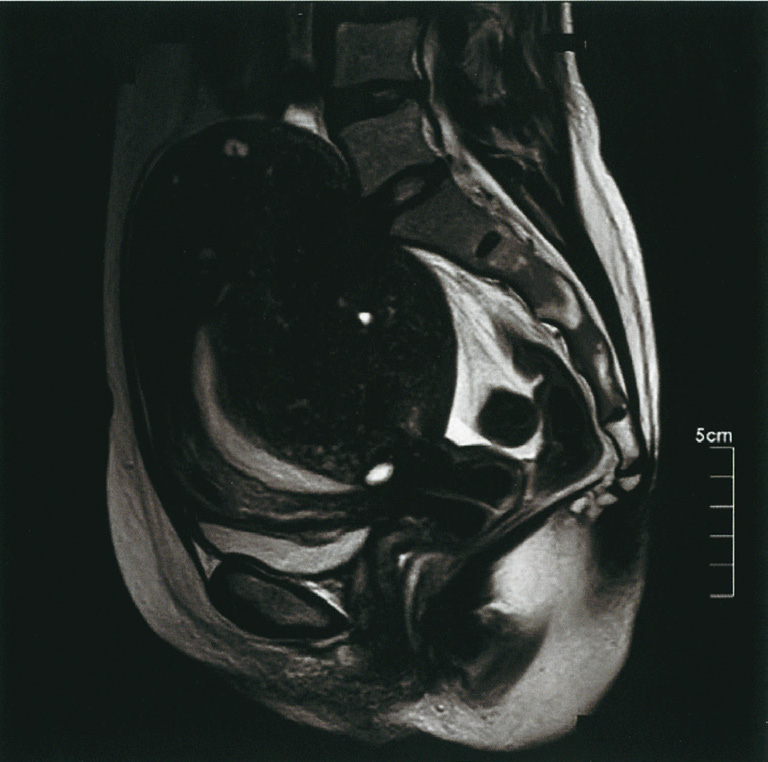
ａ 子宮筋腫
ｂ 子宮体癌
ｃ 子宮肉腫
ｄ 子宮腺筋症
ｅ 子宮内膜増殖症
✅
ｄ 子宮腺筋症
子宮が15cmに硬く腫大し、日常生活に支障を来す月経困難症と過多月経を伴う。子宮腺筋症である。
🧠 「硬く腫大した子宮」＋「強い月経困難症」
実際の骨盤部MRI T2強調矢状断像は参照できないが、子宮腺筋症では接合帯のびまん性肥厚と、その内部の点状高信号が描出されているはずである。・35歳、3年前からの月経痛が増悪し仕事・日常生活に支障
・持続8日間の過多月経、Hb 9.0g/dLの貧血
・内診で子宮は15cmに腫大し「硬く」、可動性良好
・付属器は触知しない
子宮筋腫であれば「弾性硬」で凹凸不整に腫大し、月経痛は必ずしも強くない。本例はびまん性に硬く腫大し、強い月経困難症が前面に出ている点から子宮腺筋症と診断される。
子宮腺筋症は子宮内膜組織が子宮筋層内にびまん性に侵入した状態で、筋層内で周期的に出血するため強い疼痛を生じ、子宮の収縮不全と血管増生により過多月経を来す。
□ 子宮筋腫・腺筋症・内膜症の鑑別
| 疾患 | 内診所見 | MRI | 症状 |
|---|---|---|---|
| 子宮筋腫 | 弾性硬・凹凸不整に腫大、圧痛なし | 境界明瞭な低信号腫瘤 | 過多月経・貧血・圧迫症状・不妊 |
| 子宮腺筋症 | 硬く球状に腫大、圧痛あり | 接合帯〈junctional zone〉のびまん性肥厚（境界不明瞭） | 強い月経困難症・過多月経。CA125上昇 |
| 子宮内膜症 | 子宮は正常大だが可動性不良、Douglas窩に有痛性硬結 | チョコレート囊胞（T1高信号・T2低信号のshading） | 月経困難症・性交痛・排便痛・不妊。CA125上昇 |
□ 選択肢の検討
| 選択肢 | 評価 |
|---|---|
| ａ 子宮筋腫 | 誤り。弾性硬・凹凸不整。強い月経困難症は典型的でない |
| ｂ 子宮体癌 | 誤り。閉経後の不正出血が典型。子宮は硬く腫大しない |
| ｃ 子宮肉腫 | 誤り。閉経後・急速増大・LD高値が典型 |
| ｄ 子宮腺筋症 | 正しい。硬くびまん性に腫大＋強い月経困難症＋過多月経 |
| ｅ 子宮内膜増殖症 | 誤り。不正出血が主で子宮は腫大しない |
Q.536(114C-58)📷 画像2択81%
38 歳の女性。下腹部痛を主訴に来院した。5 年前から月経時に下腹部痛と腰痛を自覚するようになった。1 年前から月経初日と2 日目に仕事を休むようになった。3 か月前から月経終了後に下腹部痛と腰痛が出現し仕事を休むようになった。月経は28 日周期で整。持続5 日間。現在妊娠希望はないが将来は妊娠したいと思っている。飲酒は機会飲酒。母は子宮筋腫で子宮摘出術を受けた。身長162cm、体重58kg。体温36.8℃。脈拍68/ 分、整。血圧108/76mmHg。心音と呼吸音とに異常を認めない。下腹部に圧痛のある腫瘤を触知する。内診では、子宮は前屈で正常大。左右付属器の腫瘤はそれぞれ径10cm で圧痛を認める。Douglas 窩に有痛性の硬結を触知する。下腹部MRI の矢状断像を示す。
治療法を決める上で考慮すべきなのはどれか。2 つ選べ。
治療法を決める上で考慮すべきなのはどれか。2 つ選べ。
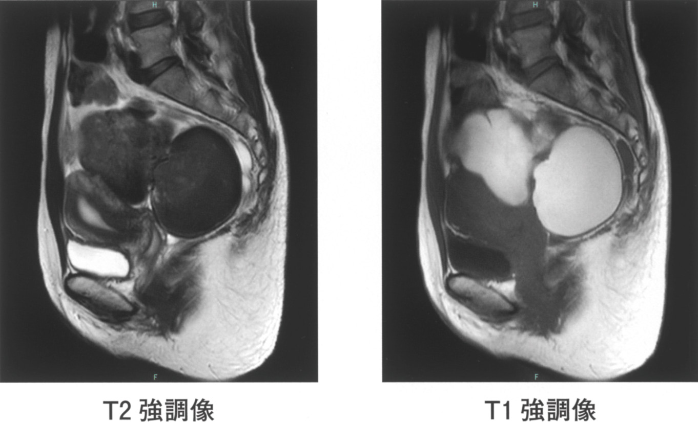
ａ 身 長
ｂ 飲酒歴
ｃ 家族歴
ｄ 疼痛の強さ
ｅ 妊孕性温存の希望
✅
ｄ 疼痛の強さ
ｅ 妊孕性温存の希望
子宮内膜症の治療方針は「症状（疼痛）の強さ」と「妊孕性温存の希望」の2つで決まる。
🧠 子宮内膜症の治療は何で決まるか
実際の下腹部MRI矢状断像は参照できないが、両側卵巣にチョコレート囊胞（T1高信号）が描出されているはずである。本例は
・月経困難症が進行し、月経初日と2日目に仕事を休む
・3か月前からは月経終了後にも下腹部痛・腰痛（慢性骨盤痛）
・両側付属器に径10cmの有痛性腫瘤、Douglas窩に有痛性硬結
・現在妊娠希望はないが将来は妊娠したい
という子宮内膜症である。
💊 治療選択を規定する2因子
| 因子 | 意味 |
|---|---|
| ① 疼痛の強さ | 日常生活・就労にどれだけ支障があるかで、経過観察／鎮痛薬／ホルモン療法／手術のどこから始めるかが決まる。本例は仕事を休むほどの疼痛で積極的治療の適応 |
| ② 妊孕性温存の希望 | 妊娠を希望するなら排卵を止める薬物療法は使えず、卵巣機能を残す囊胞摘出術を選ぶ。妊娠を希望しないならLEP・黄体ホルモン療法で長期管理できる。本例は将来の妊娠希望ありで卵巣温存が必須 |
一方、身長・飲酒歴・家族歴（母の子宮筋腫）はいずれも子宮内膜症の治療方針を左右しない。
□ 薬物療法の原則
子宮内膜症はエストロゲン依存性疾患であり、排卵・月経を止めて低エストロゲン状態にすることが薬物療法の原則。・低用量エストロゲン・プロゲスチン配合薬〈LEP〉：排卵抑制。長期継続でき第一選択
・黄体ホルモン療法（ジエノゲスト等）：内膜組織を萎縮させる。長期投与可
・GnRHアゴニスト：偽閉経療法。低エストロゲンによる骨粗鬆症のため原則6か月まで
エストロゲン補充は病巣を増悪させるため禁忌。副腎皮質ステロイドは無効。
挙児希望の時期には薬物療法は使えない（排卵を止めてしまう）ため手術を選ぶ。
□ 選択肢の検討
| 選択肢 | 評価 |
|---|---|
| ａ 身 長 | 誤り。治療方針と無関係 |
| ｂ 飲酒歴 | 誤り。機会飲酒であり治療方針に影響しない |
| ｃ 家族歴 | 誤り。母の子宮筋腫は本人の内膜症の治療選択を変えない |
| ｄ 疼痛の強さ | 正しい。治療介入の要否と強度を決める |
| ｅ 妊孕性温存の希望 | 正しい。薬物療法か手術か、術式を決める |
Q.537(114D-16)83%
58 歳の女性。腹部膨満感を主訴に来院した。3 か月前から下腹部膨隆を自覚し、衣服がきつくなった。30 歳時にチョコレート囊胞と診断された。50 歳で閉経。内診で、左付属器領域に10cm の可動性のない腫瘤を触知する。血液所見：赤血球360 万、Hb 10.1g/dL、Ht 32％、白血球6,800、血小板26 万。血液生化学所見：CEA 3.8ng/mL（基準5 以下）、CA19-9 38U/mL（基準37 以下）、CA125 280U/mL（基準35 以下）。子宮頸部と内膜の細胞診は陰性。上部および下部消化管内視鏡検査で異常を認めなかった。手術のため入院し開腹したところ、左付属器に腫瘤を認めた。腹水はなく、腹腔洗浄細胞診は陰性であった。腫瘤と腸管との癒着はなかった。腹膜播種はなく、大網やリンパ節に異常を認めなかった。左卵巣を切除して迅速病理診断で明細胞癌と診断された。
左付属器、子宮および大網に加えて切除すべきなのはどれか。
左付属器、子宮および大網に加えて切除すべきなのはどれか。
ａ 腟 壁
ｂ 膀 胱
ｃ S 状結腸
ｄ 右付属器
ｅ 腸間膜リンパ節
✅
ｄ 右付属器
卵巣癌の基本術式は「両側付属器摘出術＋子宮全摘出術＋大網切除術」。対側（右）付属器も切除する。
🧠 卵巣癌の基本術式
58歳、閉経後で30歳時にチョコレート囊胞の既往があり、左卵巣の迅速病理診断で明細胞癌と診断された（子宮内膜症性囊胞は明細胞癌・類内膜癌の発生母地となる）。卵巣癌の基本術式は
・両側付属器摘出術（＝患側だけでなく対側も摘出）
・子宮全摘出術
・大網切除術
＋腹腔洗浄細胞診・後腹膜リンパ節郭清（生検）
対側卵巣を摘出する理由は
・卵巣癌はしばしば両側性・多中心性に発生する
・肉眼的に正常でも顕微鏡的転移が存在しうる
・閉経後で妊孕性温存の必要がない
ためである。
大網は卵巣癌が最も転移しやすい部位であり、肉眼的に正常でも切除して顕微鏡的播種の有無を調べる（＝進行期決定に必須）。
□ 選択肢の検討
| 選択肢 | 評価 |
|---|---|
| ａ 腟 壁 | 誤り。浸潤がなければ切除しない |
| ｂ 膀 胱 | 誤り。浸潤がなければ切除しない |
| ｃ S状結腸 | 誤り。腫瘤と腸管の癒着はなく切除不要 |
| ｄ 右付属器 | 正しい。両側性・多中心性発生のため対側も摘出 |
| ｅ 腸間膜リンパ節 | 誤り。郭清対象は骨盤・傍大動脈リンパ節 |
Q.538(114D-64)📷 画像99%
57 歳の女性。不正性器出血を主訴に来院した。54 歳で閉経した。6 か月前から性器出血が出現し、1 か月前から持続するようになった。自宅近くの診療所で子宮内膜生検により子宮体癌〈子宮内膜癌〉と診断された。身長155cm、体重80kg。血液検査では軽度の貧血以外の異常を認めない。画像検査では子宮外への進展や転移を認めない。骨盤単純MRI のT2 強調矢状断像を示す。
この患者に行う治療として適切なのはどれか。
この患者に行う治療として適切なのはどれか。
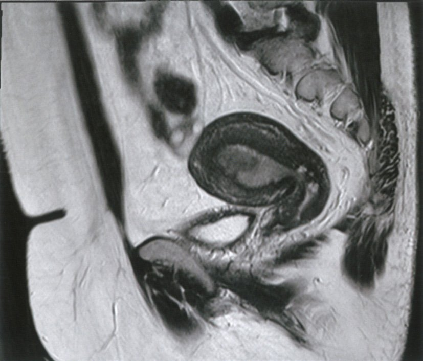
ａ 外科的切除
ｂ 放射線照射
ｃ 殺細胞性薬投与
ｄ 分子標的薬投与
ｅ ホルモン薬投与
✅
ａ 外科的切除
子宮体癌で子宮外進展・転移がない。放射線感受性が低く、第一選択は外科的切除である。
🧠 子宮体癌の第一選択は手術
実際の骨盤MRI T2強調矢状断像は参照できないが、子宮内腔を占拠する腫瘤と筋層浸潤の程度が描出されているはずである。・57歳、54歳で閉経後の不正性器出血
・身長155cm・体重80kg（BMI 33.3の肥満） → 子宮体癌の代表的リスク因子
・子宮内膜生検で子宮体癌〈子宮内膜癌〉と確定
・画像で子宮外進展・転移なし
子宮体癌は放射線感受性が子宮頸癌に比べて低く、外科的切除（子宮全摘出術＋両側付属器摘出術＋リンパ節郭清）が第一選択。手術によって初めて進行期が確定する（手術進行期分類）。
□ 子宮体癌のリスク因子
子宮体癌〈類内膜癌〉はエストロゲン依存性であり、プロゲステロンの拮抗を受けないエストロゲン曝露が長いほどリスクが高い。・肥満（脂肪組織のアロマターゼがアンドロゲンをエストロゲンに変換）
・未経産・不妊・早発初経・晩期閉経（月経回数＝エストロゲン曝露が多い）
・多囊胞性卵巣症候群（無排卵で黄体が形成されずプロゲステロンが出ない）
・糖尿病・高血圧
・タモキシフェンの内服（乳腺では抗エストロゲン、子宮内膜ではエストロゲン様に作用）
・Lynch症候群（大腸癌の家族歴）
逆に経口避妊薬・黄体ホルモンの内服は子宮内膜を分化・萎縮させ保護的に働く。ヒトパピローマウイルス〈HPV〉は子宮頸癌の原因であって子宮体癌とは無関係。
□ 選択肢の検討
| 選択肢 | 評価 |
|---|---|
| ａ 外科的切除 | 正しい。第一選択。手術で進行期も決定する |
| ｂ 放射線照射 | 誤り。感受性が低く、手術不能例に限る |
| ｃ 殺細胞性薬投与 | 誤り。術後の再発リスクに応じた補助療法 |
| ｄ 分子標的薬投与 | 誤り。進行・再発例の後方治療 |
| ｅ ホルモン薬投与 | 誤り。若年で妊孕性温存を強く希望する類内膜癌Grade1・筋層浸潤なしの例に限り黄体ホルモン療法を検討する。57歳の本例には該当しない |
Q.539(114E-10)91%
直径10cm の子宮筋層内筋腫が原因となって生じ得るのはどれか。
ａ 片頭痛
ｂ 無排卵
ｃ 過多月経
ｄ 希発月経
ｅ 月経前症候群
✅
ｃ 過多月経
大きな筋層内筋腫は子宮内膜面積を増やし、子宮の収縮を妨げて過多月経を来す。
🧠 筋層内筋腫が過多月経を起こす機序
直径10cmという大きな筋層内筋腫は・子宮内腔を変形・拡大させ、剝離する子宮内膜の面積が増える
・筋層内に存在するため子宮の収縮（＝月経時の止血機構）を妨げる
・腫瘍周囲の血管が増生する
という機序により過多月経を来し、その結果鉄欠乏性貧血を生じる。
子宮筋腫はホルモン産生腫瘍ではないため、無排卵・希発月経・月経前症候群といった「排卵や周期の異常」は起こさない。月経周期は正常のまま経血量だけが増えるのが典型である。
その他、大きくなれば膀胱・尿管・直腸を圧迫して頻尿・水腎症・便秘を来し、不妊・流早産の原因ともなる。
□ 選択肢の検討
| 選択肢 | 評価 |
|---|---|
| ａ 片頭痛 | 誤り。子宮筋腫と関連しない |
| ｂ 無排卵 | 誤り。筋腫はホルモンを産生せず排卵は保たれる |
| ｃ 過多月経 | 正しい。内膜面積の増加と子宮収縮の妨げによる |
| ｄ 希発月経 | 誤り。月経周期は正常に保たれる |
| ｅ 月経前症候群 | 誤り。黄体期のホルモン変動によるもので筋腫と無関係 |
Q.540(114F-35)📷 画像78%
39 歳の女性。子宮体癌の治療を希望して受診した。6 か月前から不正出血があり、2 週前に自宅近くの医療機関を受診し内膜組織診で子宮体癌〈子宮内膜癌〉と診断された。初経は12 歳。以後月経不順で、多囊胞性卵巣と診断された。35 歳で結婚し挙児を希望したが、妊娠しなかった。5 年前に受けた子宮頸がん検診では異常を指摘されていないという。家族歴に特記すべきことはない。身長155cm、体重86kg。腟鏡診で少量の出血を認める。子宮頸部には肉眼的異常を認めない。妊娠反応は陰性。経腟超音波検査で両側卵巣の多囊胞性腫大を認める。子宮の経腟超音波像を示す。
この患者に行うべきでない検査はどれか。
この患者に行うべきでない検査はどれか。
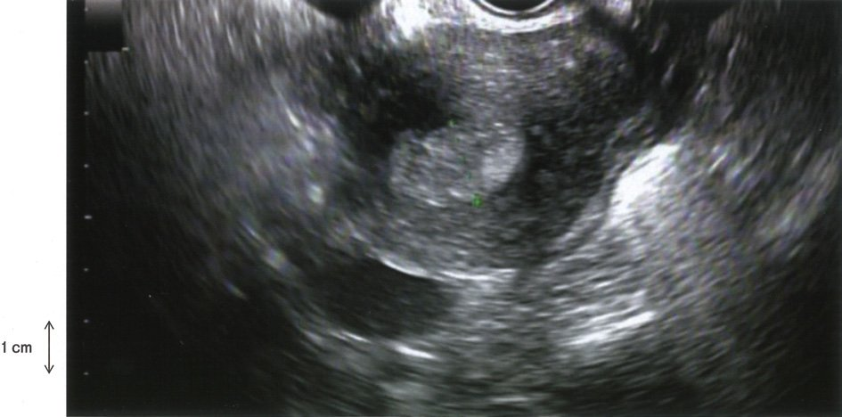
ａ 腹部CT
ｂ 血糖測定
ｃ 腹部MRI
ｄ 子宮卵管造影
ｅ 子宮頸部細胞診
✅
ｄ 子宮卵管造影
子宮卵管造影は造影剤とともに癌細胞を卵管から腹腔内へ押し出す危険がある。子宮体癌では禁忌。
🧠 子宮体癌に子宮卵管造影を行ってはならない
実際の子宮の経腟超音波像は参照できないが、肥厚した不整な子宮内膜が描出されているはずである。本例は内膜組織診で子宮体癌〈子宮内膜癌〉と確定診断済みである（39歳、多囊胞性卵巣症候群による長期の無排卵、BMI 35.8の肥満、未経産――いずれも子宮体癌のリスク因子）。
子宮卵管造影〈HSG〉は子宮腔内に造影剤を加圧注入し、卵管を経て腹腔内へ流出させる検査である。子宮内腔に癌が存在する状態でこれを行えば、癌細胞を造影剤とともに卵管から腹腔内へ押し出し、腹膜播種を起こしうる。
したがって子宮体癌に子宮卵管造影は禁忌である。そもそも不妊の検査であり、癌の治療を要する本例に行う意義もない。
□ 子宮体癌のリスク因子
子宮体癌〈類内膜癌〉はエストロゲン依存性であり、プロゲステロンの拮抗を受けないエストロゲン曝露が長いほどリスクが高い。・肥満（脂肪組織のアロマターゼがアンドロゲンをエストロゲンに変換）
・未経産・不妊・早発初経・晩期閉経（月経回数＝エストロゲン曝露が多い）
・多囊胞性卵巣症候群（無排卵で黄体が形成されずプロゲステロンが出ない）
・糖尿病・高血圧
・タモキシフェンの内服（乳腺では抗エストロゲン、子宮内膜ではエストロゲン様に作用）
・Lynch症候群（大腸癌の家族歴）
逆に経口避妊薬・黄体ホルモンの内服は子宮内膜を分化・萎縮させ保護的に働く。ヒトパピローマウイルス〈HPV〉は子宮頸癌の原因であって子宮体癌とは無関係。
□ 選択肢の検討
| 選択肢 | 評価 |
|---|---|
| ａ 腹部CT | 行うべき。リンパ節転移・遠隔転移の評価 |
| ｂ 血糖測定 | 行うべき。肥満・PCOSがあり糖尿病の合併を評価 |
| ｃ 腹部MRI | 行うべき。筋層浸潤の深さ・頸部浸潤の評価に最適 |
| ｄ 子宮卵管造影 | 行うべきでない。癌細胞の腹腔内散布を招く |
| ｅ 子宮頸部細胞診 | 行うべき。頸部への進展の有無を評価する |
Q.541(113A-45)94%
32 歳の女性。無月経を主訴に来院した。妊娠反応陽性。超音波検査で子宮（12cm）内に小囊胞の集簇を認め、妊娠10 週の全胞状奇胎と診断した。
患者への説明として適切でないのはどれか。
患者への説明として適切でないのはどれか。
ａ 「胎児は育っていません」
ｂ 「子宮内容除去術が必要です」
ｃ 「20％が侵入奇胎になります」
ｄ 「今後は妊娠してはいけません」
ｅ 「治療後経過観察のためヒト絨毛性ゴナドトロピン〈hCG〉を測定します」
✅
ｄ 「今後は妊娠してはいけません」
胞状奇胎後は一定期間の避妊とhCG追跡が必要だが、その後は妊娠してよい。「妊娠してはいけない」は誤り。
🧠 胞状奇胎後の管理
全胞状奇胎と診断された後の管理は① 子宮内容除去術で奇胎組織を除去する
② hCGを定期的に測定し、順調に低下・陰性化するかを追跡する
③ この経過観察期間（おおむね6か月〜1年）は避妊する
③の避妊は妊娠するとhCGが上昇し、侵入奇胎・絨毛癌の発生を見逃してしまうためであって、「今後は妊娠してはいけない」という意味ではない。hCGが陰性化して一定期間が経過すれば妊娠して差し支えない。
したがって「今後は妊娠してはいけません」という説明は患者に不必要な絶望を与える誤った説明である。
□ 絨毛性疾患
| 疾患 | 本態 | 特徴 | 治療 |
|---|---|---|---|
| 胞状奇胎 | 絨毛の水腫性変化。全胞状奇胎は胎児成分なし（父性由来の核のみ）。部分胞状奇胎は三倍体で胎児成分あり | hCG著明高値・子宮が妊娠週数より大きい・嘔気嘔吐（妊娠悪阻様） | 子宮内容除去術＋その後のhCG追跡 |
| 侵入奇胎 | 奇胎組織が子宮筋層に侵入 | 奇胎後にhCGが下がらない／再上昇 | 化学療法 |
| 絨毛癌 | 栄養膜細胞の悪性腫瘍 | 肺・脳・肝へ血行性転移。hCG著明高値 | 化学療法（MTX・アクチノマイシンD） |
□ 選択肢の検討
| 選択肢 | 評価 |
|---|---|
| ａ 「胎児は育っていません」 | 適切。全胞状奇胎は父性由来の核のみで胎児成分を欠く |
| ｂ 「子宮内容除去術が必要です」 | 適切。治療の第一段階 |
| ｃ 「20％が侵入奇胎になります」 | 適切。全胞状奇胎の約10〜20％が侵入奇胎へ移行しうる |
| ｄ 「今後は妊娠してはいけません」 | 適切でない。一定期間の避妊とhCG追跡の後は妊娠可能 |
| ｅ 「治療後経過観察のためhCGを測定します」 | 適切。hCGは治療効果・再燃の唯一の指標 |
Q.542(113A-49)85%
24 歳の女性。不正性器出血を主訴に来院した。月経終了2 日後から少量の出血が始まり10 日間持続したため来院した。月経周期40 ～90 日、不整、持続5 日間。身長162cm、体重74kg。体温36.5℃。脈拍72/ 分、整。血圧122/68mmHg。呼吸数18/ 分。内診で子宮は正常大で軟、圧痛を認めない。外子宮口に少量の血液を認める。両側付属器に異常を認めない。
この時点での検査として適切でないのはどれか。
この時点での検査として適切でないのはどれか。
ａ 妊娠反応
ｂ 腹部造影CT
ｃ 経腟超音波検査
ｄ 性ホルモン検査
ｅ 子宮頸部細胞診
✅
ｂ 腹部造影CT
若年女性の不正性器出血の初期評価に造影CTは不要で、被曝と造影剤負荷を伴い適切でない。
🧠 まず何を否定し、何を調べるか
24歳、月経周期40〜90日と不整（稀発月経）、BMI 28.2の肥満。月経終了2日後から10日間続く少量の不正性器出血で来院した。この時点で行うべき検査は
・妊娠反応 → 生殖年齢の女性の不正出血ではまず妊娠を否定する
・経腟超音波検査 → 子宮内膜の厚さ、子宮・卵巣の器質的病変
・性ホルモン検査 → 稀発月経の背景（PCOSなど）を評価
・子宮頸部細胞診 → 子宮頸癌の除外
いずれも低侵襲で、この年齢の不正出血の原因（機能性子宮出血・PCOS・妊娠・頸部病変）を効率よく絞り込める。
一方腹部造影CTは被曝と造影剤アレルギー・腎障害のリスクを伴う。子宮・卵巣の評価には超音波とMRIの方が優れ、妊娠が否定されていない段階での被曝は避けるべきである。
□ 選択肢の検討
| 選択肢 | 評価 |
|---|---|
| ａ 妊娠反応 | 適切。まず妊娠を否定するのが鉄則 |
| ｂ 腹部造影CT | 適切でない。被曝・造影剤負荷があり初期評価に不要 |
| ｃ 経腟超音波検査 | 適切。無侵襲で子宮内膜・卵巣を評価 |
| ｄ 性ホルモン検査 | 適切。稀発月経の背景（PCOS等）の検索 |
| ｅ 子宮頸部細胞診 | 適切。不正出血では子宮頸癌の除外が必要 |
Q.543(113A-50)📷 画像93%
75 歳の女性。外陰部の違和感と不正性器出血を主訴に来院した。発熱はなく痒みや痛みもない。52 歳で閉経。左大陰唇外側に辺縁が隆起し中央に潰瘍を形成した腫瘤を認める。左外側に鼠径リンパ節を触知する。外陰部の写真を示す。
考えられるのはどれか。
考えられるのはどれか。
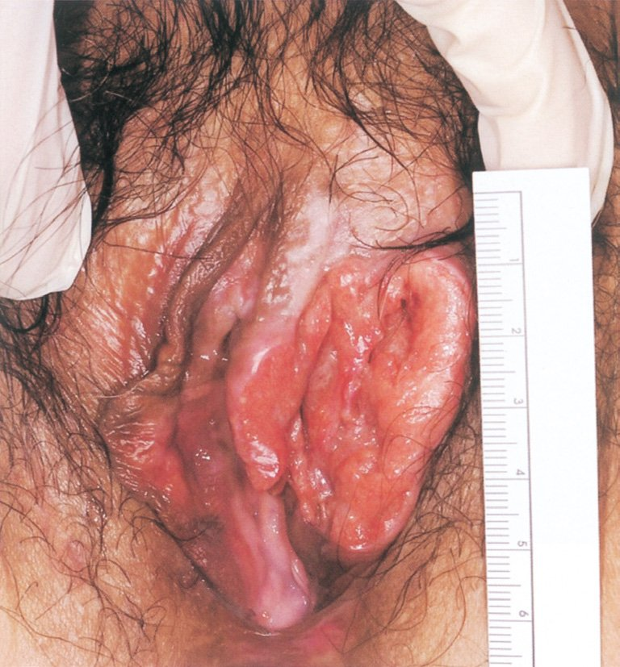
ａ 外陰癌
ｂ 外陰ヘルペス
ｃ カンジダ外陰炎
ｄ 尖圭コンジローマ
ｅ バルトリン腺囊胞
✅
ａ 外陰癌
高齢女性の大陰唇に生じた辺縁隆起・中心潰瘍の腫瘤と鼠径リンパ節腫大。外陰癌である。
🧠 潰瘍を形成する外陰腫瘤＋鼠径リンパ節腫大
実際の外陰部写真は参照できないが、辺縁が土手状に隆起し中央が潰瘍化した硬い腫瘤が示されているはずである。| 所見 | 意味 |
|---|---|
| 75歳、52歳で閉経 | 外陰癌は高齢者に好発 |
| 左大陰唇外側に辺縁が隆起し中央に潰瘍を形成した腫瘤 | 悪性腫瘍の典型的な肉眼像 |
| 左外側に鼠径リンパ節を触知 | 外陰癌の所属リンパ節転移（外陰のリンパ流は鼠径リンパ節へ注ぐ） |
| 不正性器出血 | 腫瘍からの出血 |
| 発熱なく、痒みや痛みもない | 感染性疾患を否定 |
外陰癌の多くは扁平上皮癌で、高齢者では慢性の外陰硬化性苔癬などを背景に発生する（HPV非依存性）。若年者ではHPV関連の外陰上皮内腫瘍を経て発生する。
□ 選択肢の検討
| 選択肢 | 評価 |
|---|---|
| ａ 外陰癌 | 正しい。高齢・潰瘍性腫瘤・鼠径リンパ節腫大 |
| ｂ 外陰ヘルペス | 誤り。強い疼痛を伴う多発性の小水疱・浅い潰瘍 |
| ｃ カンジダ外陰炎 | 誤り。強い掻痒と白色酒粕状帯下 |
| ｄ 尖圭コンジローマ | 誤り。HPV 6・11型による乳頭状・鶏冠状の腫瘤で潰瘍を作らない |
| ｅ バルトリン腺囊胞 | 誤り。腟前庭後方の弾性軟な囊胞。潰瘍化しない |
Q.544(113D-47)93%
24 歳の女性。月経1 日目の下腹部痛を主訴に来院した。5 年前から月経時に腹痛がある。痛みの程度と持続日数は月経ごとに異なっている。本日朝から月経が始まり、通勤中の電車内でこれまでになく下腹部痛が強くなったので途中下車して来院した。月経周期は28 日型、整。下痢や嘔吐は認めない。意識は清明。身長160cm、体重52kg。体温36.6℃。脈拍72/ 分、整。血圧118/72mmHg。呼吸数20/ 分。腹部は平坦、軟で、肝・脾を触知しない。内診で子宮に腫大を認めない。Douglas 窩に硬結を触知しない。血液所見：赤血球362 万、Hb 11.2g/dL、Ht 37％、白血球5,600、血小板21 万。CRP 0.1mg/dL。妊娠反応陰性。超音波検査で卵巣に異常を認めず、Douglas 窩に液体貯留を認めない。
最も考えられるのはどれか。
最も考えられるのはどれか。
ａ 卵管炎
ｂ 黄体出血
ｃ 子宮内膜症
ｄ 卵巣腫瘍茎捻転
ｅ 機能性月経困難症
✅
ｅ 機能性月経困難症
器質的疾患を示す所見が一切なく、月経初日に一致する下腹部痛。機能性月経困難症である。
🧠 「異常がない」ことを積み上げる
| 所見 | 除外できるもの |
|---|---|
| 内診で子宮に腫大なし | 子宮筋腫・子宮腺筋症を否定 |
| Douglas窩に硬結を触知しない | 子宮内膜症を否定 |
| 超音波で卵巣に異常なし | 卵巣腫瘍・茎捻転を否定 |
| Douglas窩に液体貯留なし | 黄体出血・腹腔内出血を否定 |
| CRP 0.1mg/dL、白血球5,600、体温36.6℃ | 卵管炎・骨盤内炎症性疾患を否定 |
| 妊娠反応陰性 | 異所性妊娠・流産を否定 |
| Hb 11.2g/dL、循環動態安定 | 大量出血なし |
器質的疾患がすべて否定され、月経開始日に一致して起こる下腹部痛が5年来続いている。
これが機能性（原発性）月経困難症である。子宮内膜から産生されるプロスタグランジンが子宮を過剰に収縮させ、虚血と痛みを生じることが原因で、NSAIDを月経開始直前〜直後に投与するのが治療の基本（プロスタグランジン産生を先回りして抑える）。効果不十分なら低用量エストロゲン・プロゲスチン配合薬〈LEP〉を用いる。
なお「痛みの程度と持続日数が月経ごとに異なる」のも機能性月経困難症に矛盾しない。器質的疾患（内膜症・腺筋症）による続発性月経困難症では、年々増悪し月経時以外にも痛むのが典型である。
□ 選択肢の検討
| 選択肢 | 評価 |
|---|---|
| ａ 卵管炎 | 誤り。発熱・CRP上昇・白血球増多を伴う |
| ｂ 黄体出血 | 誤り。Douglas窩の液体貯留（腹腔内出血）を伴い、月経初日ではなく黄体期に起こる |
| ｃ 子宮内膜症 | 誤り。Douglas窩の有痛性硬結を欠く |
| ｄ 卵巣腫瘍茎捻転 | 誤り。超音波で卵巣に異常がなく、突然の激痛と悪心・嘔吐を伴う |
| ｅ 機能性月経困難症 | 正しい。器質的疾患がすべて否定される |
Q.545(112A-27)📷 画像61%
30 歳の女性。下腹部痛を主訴に来院した。3 日前、左下腹部の痛みで目覚めた。その後、同じ強さの痛みが持続したため本日（月経周期の17 日目）受診した。今朝から痛みは軽減している。悪心と嘔吐はない。4 週間前に受けた婦人科健診では子宮と卵巣とに異常を指摘されなかったという。最終月経は17 日前から5 日間。月経周期は28 日型、整。身長160cm、体重52kg。体温36.5℃。脈拍72/ 分、整。血圧108/68mmHg。呼吸数18/ 分。腹部は平坦、軟で、筋性防御を認めない。内診で左卵巣に軽い圧痛を認める。子宮と右卵巣には異常を認めない。血液所見：赤血球380 万、Hb 10.4g/dL、Ht 31％、白血球5,800、血小板16 万。血液生化学所見：総蛋白7.3g/dL、アルブミン4.3g/dL、総ビリルビン0.3mg/dL、AST 18U/L、ALT 16U/L、LD 195U/L（基準176 ～353）、尿素窒素18mg/dL、クレアチニン0.6mg/dL。CRP 0.3mg/dL。妊娠反応陰性。左卵巣の経腟超音波像を示す。
適切な対応はどれか。
適切な対応はどれか。
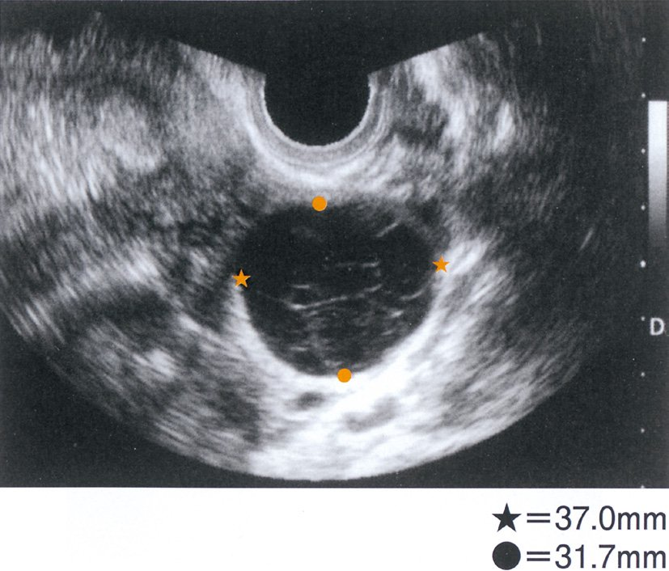
ａ 経過観察
ｂ 抗菌薬投与
ｃ 抗凝固薬投与
ｄ 囊胞穿刺吸引術
ｅ 左付属器摘出術
✅
ａ 経過観察
排卵期に生じた出血性黄体囊胞。痛みは軽減し循環動態も安定しており、経過観察でよい。
🧠 「月経周期の17日目」が鍵
実際の左卵巣の経腟超音波像は参照できないが、内部に網状のエコーを含む囊胞（出血性黄体囊胞）が描出されているはずである。・月経周期28日型で、受診日は月経周期の17日目＝排卵直後（黄体期の始まり）
・4週間前の健診では子宮・卵巣に異常なし → 新たに形成された黄体による
・3日前からの左下腹部痛だが今朝から軽減
・体温36.5℃・脈拍72/分・血圧108/68mmHg、筋性防御なし → 腹腔内出血・腹膜炎を示す所見がない
・CRP 0.3mg/dL、白血球5,800 → 感染を否定
・妊娠反応陰性 → 異所性妊娠を否定
排卵後に形成される黄体は生理的に囊胞状となり、内部に出血を伴えば出血性黄体囊胞として疼痛を来す。多くは自然に吸収され、次の月経までに消退する。
💊 経過観察でよい理由
本例は・疼痛が自然軽減している
・バイタルサインが安定し、貧血の進行もない
・腹腔内出血・感染・悪性を示す所見がない
ため、経過観察が適切である。
囊胞穿刺吸引は不要かつ有害（播種・出血）、付属器摘出は生理的構造物のために卵巣を失う過剰治療である。
（もし血圧低下・Hb低下・Douglas窩の大量液体貯留があれば黄体出血による腹腔内出血として緊急手術を要する。本例はその段階にない。）
□ 選択肢の検討
| 選択肢 | 評価 |
|---|---|
| ａ 経過観察 | 正しい。自然消退する生理的な黄体囊胞 |
| ｂ 抗菌薬投与 | 誤り。発熱・CRP上昇なく感染徴候がない |
| ｃ 抗凝固薬投与 | 誤り。血栓症を示す所見がない |
| ｄ 囊胞穿刺吸引術 | 誤り。不要であり出血・播種の危険を伴う |
| ｅ 左付属器摘出術 | 過剰。生理的構造物のために卵巣を失う |
Q.546(112A-43)📷 画像採点除外
38 歳の女性。不妊を主訴に来院した。4 年前に結婚し挙児を希望しているが、妊娠はしていない。6 か月前に子宮卵管造影検査を受けたが、異常はなかった。5 年前から月経痛があり、1 年前から月経中に市販の鎮痛薬を服用している。月経周期は38 ～90 日、不整。持続は5 日間。過多月経はない。身長164cm、体重54kg。体温36.8℃。脈拍68/ 分、整。血圧110/56mmHg。腹部は平坦、軟。内診では、子宮は前傾後屈で正常大、可動性不良。Douglas 窩に有痛性の硬結を触知する。右卵巣に有痛性の囊胞を触知する。経腟超音波検査では右卵巣囊胞の内部エコーは均一である。左卵巣に異常を認めない。右卵巣の経腟超音波像を示す。
治療として適切なのはどれか。
治療として適切なのはどれか。
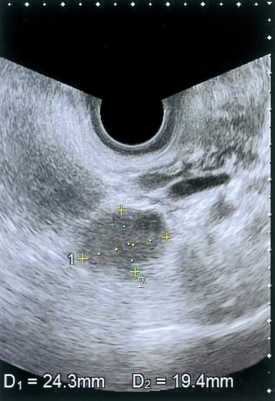
ａ プロゲスチン療法
ｂ クロミフェン療法
ｃ GnRH アゴニスト療法
ｄ 腹腔鏡下右卵巣切除術
ｅ エストロゲン・プロゲスチン療法
⚠️
採点除外問題
本問は国家試験において採点除外となりました。
⚠️ 本問は採点除外
本問は厚生労働省により採点除外とされた。挙児希望と子宮内膜症治療が両立しにくく、複数の選択肢に合理性が生じてしまうためと考えられる。🧠 病態の整理
実際の右卵巣の経腟超音波像は参照できないが、内部エコーが均一な囊胞（チョコレート囊胞に典型的なすりガラス様エコー）が描出されているはずである。| 所見 | 意味 |
|---|---|
| 4年間の不妊、38歳 | 妊孕性温存が最優先 |
| 5年前からの月経痛、1年前から鎮痛薬を服用 | 進行する月経困難症 |
| 子宮は正常大だが可動性不良 | 骨盤内の癒着 |
| Douglas窩に有痛性の硬結 | 子宮内膜症に最も特徴的な所見 |
| 右卵巣に有痛性の囊胞、内部エコーは均一 | チョコレート囊胞 |
| 6か月前の子宮卵管造影に異常なし | 卵管の疎通性は保たれている |
| 月経周期38〜90日と不整 | 排卵障害も併存 |
診断は子宮内膜症（右卵巣チョコレート囊胞）による不妊である。
💊 なぜ判断が割れるのか
子宮内膜症の薬物療法（プロゲスチン・GnRHアゴニスト・LEP）はいずれも排卵・月経を止めるため、挙児を希望している患者には使えない。この一点で選択肢a・c・eはいずれも不適となる。残るのは
・ｂ クロミフェン療法：月経不整（排卵障害）に対する排卵誘発。ただしチョコレート囊胞と癒着による疼痛・不妊は改善しない
・ｄ 腹腔鏡下右卵巣切除術：疼痛と囊胞は解決するが、卵巣を全摘すれば卵巣予備能が半減し、38歳では妊孕性を大きく損なう
実臨床では卵巣を温存する「腹腔鏡下卵巣囊胞摘出術（囊胞壁のみ剝離）」を選び、同時に癒着を剝離するのが標準である。しかしその選択肢が用意されていないため、どれを選んでも一長一短となり採点除外に至ったと考えられる。
💡 この問題から学ぶべきこと
- 子宮内膜症の治療方針は「疼痛の強さ」と「妊孕性温存の希望」で決まる
- 挙児希望があるなら薬物療法（排卵を止める治療）は選べない
- 卵巣は「切除」ではなく「囊胞摘出（核出）」して温存するのが原則
- チョコレート囊胞の内部エコーは均一なすりガラス様で、MRIではT1高信号・T2低信号（shading）
Q.547(112B-7)76%
子宮頸癌罹患と最も関連が深いのはどれか。
ａ 飲 酒
ｂ 喫 煙
ｃ 睡 眠
ｄ 塩分摂取
ｅ 身体活動
✅
ｂ 喫 煙
子宮頸癌の原因はHPV感染だが、生活習慣因子としては喫煙が発癌リスクを高める。
🧠 子宮頸癌と喫煙
子宮頸癌の必要原因はハイリスク型ヒトパピローマウイルス〈HPV〉の持続感染（16型・18型など）である。ただしHPV感染者の大半は自然にウイルスを排除し、癌に至るのはごく一部である。この「持続感染から発癌へ」の過程を促進する最大の生活習慣因子が喫煙である。
機序として
・タバコの発癌物質（ニトロソアミン等）が子宮頸管粘液中に濃縮される
・局所の免疫能（Langerhans細胞）が低下し、HPVを排除できなくなる
ことが知られている。
その他のリスク因子は若年での初交・多数の性的パートナー・多産・免疫抑制状態
💡 子宮頸癌と子宮体癌の対比
- 子宮頸癌：HPV感染＋喫煙。若年〜中年に多い。検診（細胞診）で早期発見でき、HPVワクチンで予防できる
- 子宮体癌：エストロゲン曝露（肥満・未経産・PCOS・タモキシフェン）。閉経後に多い。HPVとは無関係
□ 選択肢の検討
| 選択肢 | 評価 |
|---|---|
| ａ 飲 酒 | 誤り。食道癌・肝癌などのリスクだが子宮頸癌との関連は明確でない |
| ｂ 喫 煙 | 正しい。HPVの持続感染と発癌を促進する |
| ｃ 睡 眠 | 誤り。子宮頸癌との関連はない |
| ｄ 塩分摂取 | 誤り。胃癌・高血圧のリスク因子 |
| ｅ 身体活動 | 誤り。むしろ大腸癌・乳癌には保護的に働く |
Q.548(112F-31)62%
不正性器出血をきたす可能性が低いのはどれか。
ａ 子宮頸癌
ｂ 萎縮性腟炎
ｃ 子宮内膜癌
ｄ 子宮内膜症
ｅ 子宮粘膜下筋腫
✅
ｄ 子宮内膜症
子宮内膜症の病巣は子宮内腔ではなく腹膜・卵巣にあるため、不正性器出血は来しにくい。
🧠 病巣が「子宮内腔にあるか」で分ける
不正性器出血とは月経以外の時期に子宮・腟から起こる出血である。したがって出血源が子宮内腔・頸部・腟に存在する疾患で起こる。| 疾患 | 出血源 |
|---|---|
| 子宮頸癌 | 子宮腟部の易出血性腫瘤から出血。接触出血（性交後出血）が特徴 |
| 萎縮性腟炎 | 閉経後の低エストロゲンで腟粘膜が菲薄化し出血しやすい |
| 子宮内膜癌 | 子宮内腔の癌から出血。閉経後不正出血の代表 |
| 子宮粘膜下筋腫 | 子宮内腔に突出し表面から出血。過多月経・不正出血 |
| 子宮内膜症 | 病巣は腹膜・仙骨子宮靱帯・卵巣（チョコレート囊胞）にあり、子宮内腔とは交通しない。出血は腹腔内で起こり体外に出ないため、症状は月経困難症・性交痛・排便痛・不妊であって不正出血ではない |
□ 子宮筋腫・腺筋症・内膜症の鑑別
| 疾患 | 内診所見 | MRI | 症状 |
|---|---|---|---|
| 子宮筋腫 | 弾性硬・凹凸不整に腫大、圧痛なし | 境界明瞭な低信号腫瘤 | 過多月経・貧血・圧迫症状（頻尿）・不妊 |
| 子宮腺筋症 | 硬く球状に腫大、圧痛あり | 接合帯のびまん性肥厚（境界不明瞭） | 強い月経困難症・過多月経。CA125上昇 |
| 子宮内膜症 | 子宮は正常大だが可動性不良、Douglas窩に有痛性硬結 | チョコレート囊胞（T1高信号・T2低信号） | 月経困難症・性交痛・排便痛・不妊 |
□ 選択肢の検討
| 選択肢 | 評価 |
|---|---|
| ａ 子宮頸癌 | 来す。接触出血・不正出血 |
| ｂ 萎縮性腟炎 | 来す。閉経後の腟粘膜の菲薄化 |
| ｃ 子宮内膜癌 | 来す。閉経後不正出血の代表 |
| ｄ 子宮内膜症 | 可能性が低い。病巣は腹腔内にあり子宮内腔と交通しない |
| ｅ 子宮粘膜下筋腫 | 来す。子宮内腔に突出し出血する |
Q.549(112F-49)70%
55 歳の女性。腹部膨満感を主訴に来院した。2 か月前に腹部膨満感が出現し徐々に増悪してきた。身長154cm、体重63kg。体温36.7℃。脈拍92/ 分、整。血圧136/86mmHg。下腹部に径10cm の腫瘤を触知する。圧痛を認めない。卵巣癌を疑い手術を施行した。肉眼的に腹腔内播種はなく腹水も認めなかった。術中迅速病理検査で右卵巣原発の類内膜腺癌と診断された。
摘出する必要がないのはどれか。
摘出する必要がないのはどれか。
ａ 大 網
ｂ 小 網
ｃ 子 宮
ｄ 卵 巣
ｅ 卵 管
✅
ｂ 小 網
卵巣癌の基本術式は両側付属器摘出＋子宮全摘＋大網切除。小網は郭清対象ではない。
🧠 なぜ「大網」を切除して「小網」は切除しないのか
卵巣癌は腹腔内に剝落した癌細胞が腹水の流れに乗って播種する。とくに大網は「腹腔の掃除屋」として癌細胞を捕捉しやすく、卵巣癌が最も転移しやすい部位である。本例は肉眼的に腹腔内播種はなく腹水も認めなかったが、それでも大網を切除する。肉眼的に正常な大網にも顕微鏡的播種が存在しうるため、その有無を病理学的に確認することが進行期の決定（手術進行期分類）に必須だからである。
一方小網は肝と胃小彎を結ぶ膜で、卵巣癌の好発転移部位ではなく郭清対象に含まれない。
□ 卵巣癌の基本術式
卵巣癌の基本術式：・両側付属器摘出術（両側性・多中心性発生のため対側も摘出）
・子宮全摘出術
・大網切除術（大網は卵巣癌が最も転移しやすい部位。肉眼的に正常でも顕微鏡的播種を調べる）
＋ 腹腔洗浄細胞診・骨盤／傍大動脈リンパ節郭清
これらは治療であると同時に進行期の決定（手術進行期分類）を兼ねる。
小網・腸間膜リンパ節は郭清対象ではない。囊胞穿刺吸引は腹膜播種を招くため禁忌。
□ 選択肢の検討
| 選択肢 | 評価 |
|---|---|
| ａ 大 網 | 摘出する。卵巣癌が最も転移しやすい部位。進行期決定に必須 |
| ｂ 小 網 | 摘出する必要がない。卵巣癌の好発転移部位ではない |
| ｃ 子 宮 | 摘出する。基本術式に含まれる |
| ｄ 卵 巣 | 摘出する。対側も摘出（両側性・多中心性発生） |
| ｅ 卵 管 | 摘出する。付属器摘出術に含まれる（近年は漿液性癌の発生母地と考えられている） |
Q.550(111A-47)72%
55歳の女性。0回経妊0回経産婦。閉経48歳。不正性器出血を主訴に来院した。2か月前から断続的な性器出血がある。身長148cm、体重60kg。体温36.5℃。脈拍76/ 分、整。内診で子宮は10cm に腫大、可動性は良好。付属器に異常を認めない。腟鏡診で外子宮口からの出血を認める。
行うべき検査として適切でないのはどれか。
行うべき検査として適切でないのはどれか。
ａ 骨盤部MRI
ｂ 子宮頸部細胞診
ｃ 子宮内膜組織診
ｄ 経腟超音波検査
ｅ ヒトパピローマウイルス〈HPV〉検査
✅
ｅ ヒトパピローマウイルス〈HPV〉検査
閉経後の不正出血で子宮が腫大しており子宮体癌を疑う。HPV検査は子宮頸癌の検査であり適切でない。
🧠 まず子宮体癌を疑う
・55歳、0回経妊0回経産（未経産）、48歳で閉経・2か月前から断続的な性器出血（閉経後不正出血）
・身長148cm・体重60kg（BMI 27.4の肥満）
・内診で子宮は10cmに腫大、付属器に異常なし
・腟鏡診で外子宮口からの出血（＝出血源は子宮内腔）
閉経後不正出血＋未経産＋肥満は子宮体癌の典型的な状況である。
行うべき検査は
・子宮内膜組織診 → 確定診断
・経腟超音波検査 → 子宮内膜の肥厚を評価
・骨盤部MRI → 筋層浸潤の深さ・頸部進展の評価
・子宮頸部細胞診 → 頸癌の除外・頸部進展の評価
一方HPV検査は子宮頸癌の発癌ウイルスを調べる検査であり、子宮体癌はHPVと無関係である。本例の病態解明に寄与せず適切でない。
□ 子宮体癌のリスク因子
子宮体癌〈類内膜癌〉はエストロゲン依存性であり、プロゲステロンの拮抗を受けないエストロゲン曝露が長いほどリスクが高い。・肥満（脂肪組織のアロマターゼがアンドロゲンをエストロゲンに変換）
・未経産・不妊・早発初経・晩期閉経
・多囊胞性卵巣症候群（無排卵でプロゲステロンが分泌されない）
・糖尿病・高血圧
・タモキシフェンの内服（子宮内膜にはエストロゲン様に作用）
・Lynch症候群（大腸癌の家族歴）
逆に経口避妊薬・黄体ホルモンの内服は保護的に働く。HPVは子宮頸癌の原因であって子宮体癌とは無関係。
□ 選択肢の検討
| 選択肢 | 評価 |
|---|---|
| ａ 骨盤部MRI | 適切。筋層浸潤・頸部進展の評価 |
| ｂ 子宮頸部細胞診 | 適切。頸癌の除外と頸部進展の評価 |
| ｃ 子宮内膜組織診 | 適切。子宮体癌の確定診断 |
| ｄ 経腟超音波検査 | 適切。子宮内膜の肥厚を無侵襲で評価 |
| ｅ HPV検査 | 適切でない。子宮頸癌の検査。体癌はHPVと無関係 |
Q.551(111E-56)19%
32歳の女性。2回経妊2回経産婦。1年前からの不正性器出血を主訴に来院した。臨床病期1期の子宮頸癌と診断され、3 週間後に広汎子宮全摘術とリンパ節郭清術が予定されている。予測出血量は800mL である。血液所見：赤血球380 万、Hb 11.4g/dL、Ht 37％、白血球5,200、血小板16 万。血液生化学所見：総蛋白6.4g/dL、AST 32U/L、ALT 29U/L。血液型はAB 型RhD（－）である。
現時点の対応として誤っているのはどれか。
現時点の対応として誤っているのはどれか。
ａ 鉄剤投与
ｂ 自己血貯血
ｃ 不規則抗体スクリーニング
ｄ 赤血球液-LR との交差適合試験
ｅ 血液準備量について院内輸血部門と調整
✅
ｄ 赤血球液-LR との交差適合試験
交差適合試験は輸血直前（有効期間は採血後72時間以内）に行うもの。3週間後の手術のために今行うのは誤り。
🧠 交差適合試験のタイミング
交差適合試験〈クロスマッチ〉は、患者血清と輸血予定の赤血球製剤を実際に反応させて適合性を確認する検査である。ここで重要なのは患者の不規則抗体は時間とともに新たに産生されうること、そして赤血球製剤は個々の製剤番号ごとに試験することである。そのため
・検査に用いる患者検体は採血後72時間以内のものでなければならない
・試験は輸血の直前（手術当日〜前日）に、実際に使う製剤と行う
と定められている。
3週間後の手術のために、今この時点で交差適合試験を行っても無意味であり、その結果は手術日には有効期限切れとなる。
💊 3週間前の「今」やるべきこと
| 対応 | 理由 |
|---|---|
| 鉄剤投与 | Hb 11.4g/dLと軽度貧血。術前に貧血を改善し、自己血貯血を可能にする |
| 自己血貯血 | 予測出血量800mLの待機手術で、AB型RhD陰性という稀な血液型。同型の同種血が確保しにくいため自己血が特に有用 |
| 不規則抗体スクリーニング | 事前に抗体の有無を把握しておく。陽性なら適合血の確保に時間を要するため早期に行う |
| 血液準備量について院内輸血部門と調整 | RhD陰性の稀な血液型であり、必要量を前もって輸血部門・血液センターと調整しておく |
すなわちRhD陰性のAB型という「血が集めにくい」条件を踏まえ、前もって準備しておく項目が並んでいる。交差適合試験だけが「前もって」やってはいけない検査である。
□ 選択肢の検討
| 選択肢 | 評価 |
|---|---|
| ａ 鉄剤投与 | 正しい。術前の貧血改善と自己血貯血の準備 |
| ｂ 自己血貯血 | 正しい。RhD陰性で同種血が得にくく、待機手術で適応 |
| ｃ 不規則抗体スクリーニング | 正しい。陽性なら適合血確保に時間を要する |
| ｄ 赤血球液-LRとの交差適合試験 | 誤り。輸血直前に行う検査で、3週間前では有効期限切れとなる |
| ｅ 血液準備量について院内輸血部門と調整 | 正しい。稀な血液型で事前調整が必須 |
Q.552(111G-41)📷 画像98%
38 歳の女性。子宮頸部の細胞診で異常を指摘されたため来院した。初経12 歳。月経周期28 日、整。内診で子宮は前傾前屈で正常大である。両側付属器は触知しない。腟鏡診で分泌物は褐色少量である。コルポスコピィの写真を示す。
次に行う検査はどれか。
次に行う検査はどれか。
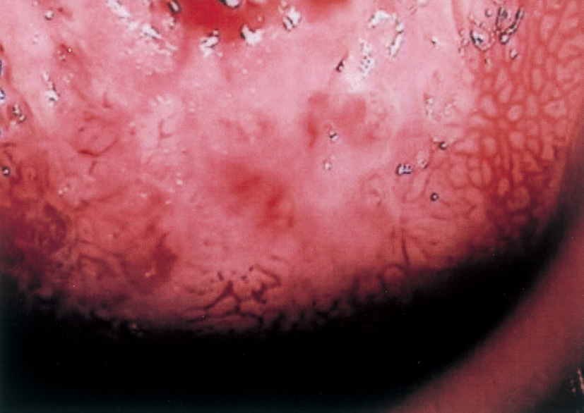
ａ 骨盤部MRI
ｂ 子宮内膜組織診
ｃ 血中SCC 値測定
ｄ 子宮頸部狙い組織診
ｅ 腟分泌物の細菌培養
✅
ｄ 子宮頸部狙い組織診
コルポスコピィで異常所見を認めたら、その部位を狙って組織診を行い確定診断とする。
🧠 コルポスコピィの次は狙い組織診
実際のコルポスコピィ写真は参照できないが、酢酸加工後の白色上皮・モザイク・赤点斑といった異常所見が示されているはずである。本例は
・子宮頸部細胞診で異常を指摘された（スクリーニング陽性）
・コルポスコピィで異常所見を確認（病変の位置を特定）
ここまでで「どこに」「おそらく異型上皮がある」ところまで分かったが、それが軽度異形成なのか、上皮内癌なのか、浸潤癌なのかは分からない。
したがって次に行うのはコルポスコピィ下の子宮頸部狙い組織診であり、これによって組織学的な確定診断が得られ、以後の治療方針が決まる。
□ 子宮頸癌のスクリーニングと確定診断
① 子宮頸部細胞診（検診）→ ② コルポスコピィ（病変の位置を特定）→ ③ 狙い組織診 ＝ 確定診断細胞診もコルポスコピィもスクリーニング／位置決めであり確定診断にならない。
・CIN1（軽度異形成）・CIN2（中等度異形成） → 多くは自然消退するため経過観察（細胞診を半年ごと）
・CIN3（高度異形成・上皮内癌） → 子宮頸部円錐切除術
・浸潤癌 → 進行期に応じて広汎子宮全摘出術／化学放射線療法
□ 選択肢の検討
| 選択肢 | 評価 |
|---|---|
| ａ 骨盤部MRI | 誤り。上皮内病変は描出されない。浸潤癌確定後の進展度評価 |
| ｂ 子宮内膜組織診 | 誤り。子宮体癌の検査で本例に適応なし |
| ｃ 血中SCC値測定 | 誤り。上皮内病変では上昇せず診断に役立たない |
| ｄ 子宮頸部狙い組織診 | 正しい。確定診断はこれによる |
| ｅ 腟分泌物の細菌培養 | 誤り。感染症を疑う所見がない |
Q.553(111I-67)📷 画像74%
51 歳の女性。下腹部の違和感と腹満感とを主訴に来院した。48 歳で閉経。閉経まで月経痛が強く、子宮内膜症と診断されたことがある。身長161cm、体重58kg。体温36.5℃。脈拍76/ 分、整。血圧124/84mmHg。下腹部に恥骨上8cm に達する可動性のない腫瘤を触知し、軽度の圧痛を認める。血液生化学所見：CEA 1.6ng/mL（基準5 以下）、CA19-9 34U/mL（基準37 以下）、CA125 116U/mL（基準35 以下）。CRP 0.7mg/dL。開腹手術を施行した。術前の骨盤部MRI のT2 強調水平断像（A）、矢状断像（B）及び手術で摘出した組織の充実部分のH-E 染色標本（C）を示す。
最終的な診断はどれか。
最終的な診断はどれか。
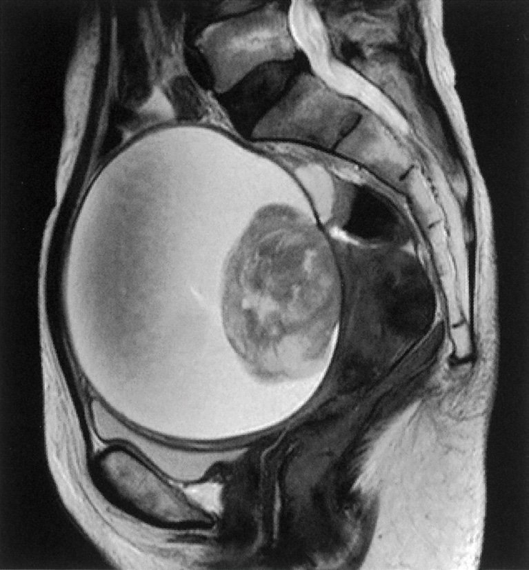
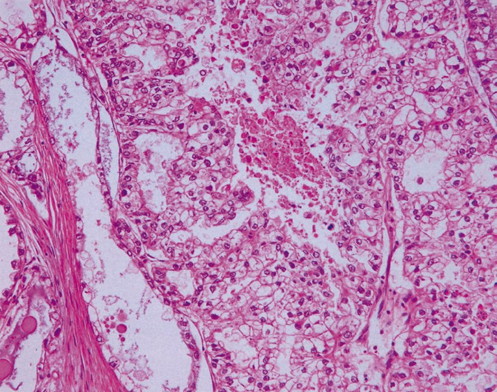
ａ 明細胞腺癌
ｂ 傍卵巣囊腫
ｃ 漿液性囊胞腺癌
ｄ 成熟囊胞性奇形腫
ｅ チョコレート囊胞
✅
ａ 明細胞腺癌
子宮内膜症の既往がある閉経後女性の、充実部分を伴うCA125高値の卵巣腫瘍。明細胞腺癌である。
🧠 子宮内膜症性囊胞は明細胞腺癌の発生母地
実際のMRI・H-E染色標本は参照できないが、明細胞腺癌では囊胞壁から内腔に突出する充実部分（壁在結節）と、H-E像で豊富な淡明（クリアな）細胞質をもつ腫瘍細胞がhobnail（鋲）状に管腔へ突出する像が示されているはずである。| 所見 | 意味 |
|---|---|
| 51歳、48歳で閉経 | 上皮性卵巣癌の好発年齢 |
| 閉経まで月経痛が強く、子宮内膜症と診断された既往 | 子宮内膜症性囊胞（チョコレート囊胞）が発生母地 |
| 恥骨上8cmに達する可動性のない腫瘤、軽度圧痛 | 悪性を疑う所見 |
| CA125 116U/mL（基準35以下） | 上昇 |
| CEA 1.6・CA19-9 34（いずれも正常） | 転移性腫瘍・粘液性腫瘍を否定 |
| MRIで囊胞内の充実部分（本問がT2水平断・矢状断とH-E標本の「充実部分」を示している点が最大の手がかり） | 良性の内膜症性囊胞からの悪性転化 |
子宮内膜症性囊胞を長期に有する女性では、明細胞腺癌と類内膜腺癌が発生しやすいことがよく知られている。とくに閉経後・囊胞の増大・充実部分の出現・CA125上昇は悪性転化のサインである。
💡 明細胞腺癌〈clear cell carcinoma〉のポイント
- 日本人に比較的多い卵巣癌の組織型
- 子宮内膜症性囊胞（チョコレート囊胞）を母地として発生する
- 化学療法（プラチナ製剤）への感受性が低く予後不良
- 静脈血栓塞栓症・高カルシウム血症を合併しやすい
□ 卵巣腫瘍の組織分類
| 分類 | 内容 | ポイント |
|---|---|---|
| 表層上皮性・間質性腫瘍 | 最多（約2/3）。漿液性・粘液性・類内膜・明細胞の各囊胞腺腫／境界悪性／腺癌 | 卵巣癌の大半。漿液性腺癌が最多 |
| 胚細胞腫瘍 | 若年に好発。成熟囊胞性奇形腫（良性・最多）。悪性は未分化胚細胞腫・卵黄囊腫瘍・未熟奇形腫 | 卵黄囊腫瘍→AFP、絨毛癌→hCG、未分化胚細胞腫→LD |
| 性索間質性腫瘍 | ホルモン産生。顆粒膜細胞腫（エストロゲン産生）、莢膜細胞腫、Sertoli-Leydig細胞腫（アンドロゲン産生）、線維腫（Meigs症候群） | 顆粒膜細胞腫 → 不正出血・子宮内膜増殖症 |
| 転移性腫瘍 | 胃癌・大腸癌から。印環細胞癌の両側転移＝Krukenberg腫瘍 | CEA上昇 |
□ 選択肢の検討
| 選択肢 | 評価 |
|---|---|
| ａ 明細胞腺癌 | 正しい。子宮内膜症を母地とし、充実部分とCA125上昇を伴う |
| ｂ 傍卵巣囊腫 | 誤り。良性の単純囊胞で充実部分もCA125上昇も伴わない |
| ｃ 漿液性囊胞腺癌 | やや不適。CA125はより著明に上昇し、子宮内膜症との関連は明細胞腺癌ほど強くない |
| ｄ 成熟囊胞性奇形腫 | 誤り。良性で毛髪・脂肪を含む。CA19-9が上昇しやすい |
| ｅ チョコレート囊胞 | 誤り。良性で充実部分を伴わない。本例はその悪性転化を疑う場面 |
Q.554(110A-6)82%
卵巣癌について正しいのはどれか。
ａ 漿液性腺癌が最も多い。
ｂ 放射線療法が標準的治療である。
ｃ 進行癌で発見されることは少ない。
ｄ 子宮内膜症は発生母地とならない。
ｅ 最近10 年で我が国の罹患率は低下した。
✅
ａ 漿液性腺癌が最も多い。
卵巣癌の組織型では漿液性腺癌が最も多い。無症状のまま進行し、化学療法＋手術が治療の柱である。
🧠 卵巣癌の疫学と特徴
| 項目 | 内容 |
|---|---|
| 組織型 | 表層上皮性・間質性腫瘍が大半を占め、その中でも漿液性腺癌が最も多い |
| 発見の遅れ | 卵巣は腹腔内の「沈黙の臓器」で、腫瘍が大きくなり腹水が貯まって初めて腹部膨満として気づかれる。約半数がⅢ期以上の進行癌で発見される |
| 治療 | 手術（腫瘍減量術）＋プラチナ製剤・タキサン系の化学療法。放射線療法は標準治療でない |
| 発生母地 | 子宮内膜症性囊胞は明細胞腺癌・類内膜腺癌の発生母地となる。近年は漿液性癌の多くが卵管采由来と考えられている |
| 罹患率 | 晩婚化・少産化（＝生涯排卵回数の増加）により近年むしろ増加傾向 |
□ 卵巣腫瘍の組織分類
| 分類 | 内容 | ポイント |
|---|---|---|
| 表層上皮性・間質性腫瘍 | 最多（約2/3）。漿液性・粘液性・類内膜・明細胞の各囊胞腺腫／境界悪性／腺癌 | 卵巣癌の大半。漿液性腺癌が最多 |
| 胚細胞腫瘍 | 若年に好発。成熟囊胞性奇形腫（良性・最多）。悪性は未分化胚細胞腫・卵黄囊腫瘍・未熟奇形腫 | 卵黄囊腫瘍→AFP、絨毛癌→hCG、未分化胚細胞腫→LD |
| 性索間質性腫瘍 | ホルモン産生。顆粒膜細胞腫（エストロゲン産生）、莢膜細胞腫、Sertoli-Leydig細胞腫（アンドロゲン産生）、線維腫（Meigs症候群） | 顆粒膜細胞腫 → 不正出血・子宮内膜増殖症 |
| 転移性腫瘍 | 胃癌・大腸癌から。印環細胞癌の両側転移＝Krukenberg腫瘍 | CEA上昇 |
□ 選択肢の検討
| 選択肢 | 評価 |
|---|---|
| ａ 漿液性腺癌が最も多い。 | 正しい |
| ｂ 放射線療法が標準的治療である。 | 誤り。手術＋化学療法が標準 |
| ｃ 進行癌で発見されることは少ない。 | 誤り。約半数がⅢ期以上で発見される |
| ｄ 子宮内膜症は発生母地とならない。 | 誤り。明細胞腺癌・類内膜腺癌の発生母地となる |
| ｅ 最近10年で我が国の罹患率は低下した。 | 誤り。むしろ増加傾向 |
Q.555(110A-49)📷 画像62%
37 歳の女性。1 回経妊0 回経産婦。不正性器出血を主訴に来院した。内診で子宮は小児頭大、付属器と子宮傍組織とに異常を認めない。子宮頸部と内膜の細胞診で異常を認めない。骨盤部MRI のT2 強調矢状断像を示す。
この患者の子宮体部に認められる病変と関連しないのはどれか。
この患者の子宮体部に認められる病変と関連しないのはどれか。
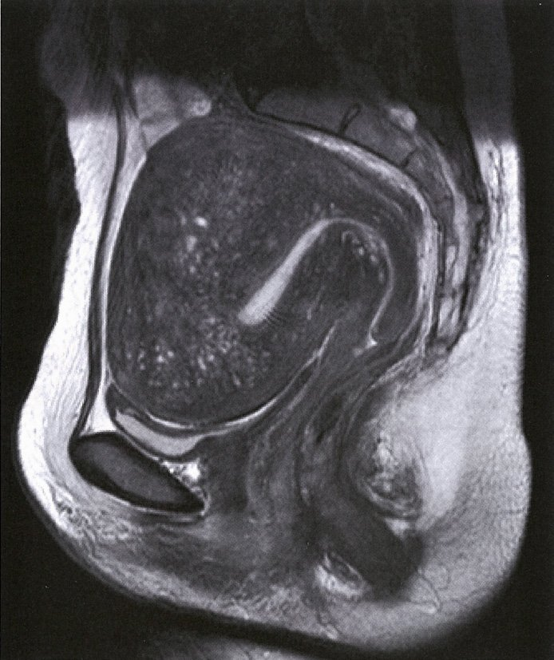
ａ 頻 尿
ｂ 不 妊
ｃ 月経痛
ｄ 過多月経
ｅ 帯下増加
✅
ｅ 帯下増加
子宮体部の病変は子宮筋腫。過多月経・月経痛・不妊・頻尿は起こすが、帯下増加は来さない。
🧠 子宮筋腫が起こす症状／起こさない症状
実際の骨盤部MRI T2強調矢状断像は参照できないが、子宮体部に境界明瞭な低信号腫瘤（子宮筋腫）が描出されているはずである。37歳、子宮は小児頭大に腫大し、付属器と子宮傍組織に異常なし、子宮頸部と内膜の細胞診で異常なし（＝悪性を否定）。
| 症状 | 機序 |
|---|---|
| 過多月経・貧血 | 内膜面積の増加と子宮収縮の妨げによる |
| 月経痛 | 大きな筋腫が子宮の収縮を妨げ、疼痛を生じる |
| 不妊 | 粘膜下・筋層内筋腫が着床を妨げる、卵管口を閉塞する |
| 頻尿 | 腫大した子宮が膀胱を圧迫する。大きくなれば尿管を圧迫し水腎症、直腸を圧迫し便秘も |
| 帯下増加 | 起こらない。帯下は子宮頸管・腟の分泌・炎症・悪性腫瘍によるもので、子宮体部の筋腫とは関係しない |
ただし例外的に、粘膜下筋腫が壊死・感染すれば悪臭を伴う帯下を呈しうるが、本例のような典型的な筋腫の症状としては挙げられない。
□ 子宮筋腫・腺筋症・内膜症の鑑別
| 疾患 | 内診所見 | MRI | 症状 |
|---|---|---|---|
| 子宮筋腫 | 弾性硬・凹凸不整に腫大、圧痛なし | 境界明瞭な低信号腫瘤 | 過多月経・貧血・圧迫症状（頻尿）・不妊 |
| 子宮腺筋症 | 硬く球状に腫大、圧痛あり | 接合帯のびまん性肥厚（境界不明瞭） | 強い月経困難症・過多月経。CA125上昇 |
| 子宮内膜症 | 子宮は正常大だが可動性不良、Douglas窩に有痛性硬結 | チョコレート囊胞（T1高信号・T2低信号） | 月経困難症・性交痛・排便痛・不妊 |
□ 選択肢の検討
| 選択肢 | 評価 |
|---|---|
| ａ 頻 尿 | 関連する。腫大子宮による膀胱圧迫 |
| ｂ 不 妊 | 関連する。着床障害・卵管口の閉塞 |
| ｃ 月経痛 | 関連する。子宮収縮の妨げ |
| ｄ 過多月経 | 関連する。筋腫の最も代表的な症状 |
| ｅ 帯下増加 | 関連しない。頸管・腟の病変による症状 |
Q.556(110D-39)📷 画像66%
23 歳の女性。右下腹部痛のため救急車で搬入された。2 時間前に右下腹部痛が突然出現した。病院到着時には右下腹部痛の強さは発症時に比べ半減していた。意識は清明。体温36.7℃。脈拍92/ 分、整。血圧110/82mmHg。呼吸数14/ 分。SpO2 96％（room air）。内診で右付属器に径6cm の腫瘤を触知し圧痛を認める。子宮と左付属器とに異常を認めない。尿妊娠反応は陰性である。経腟超音波像を示す。
この患者への対応として適切なのはどれか。
この患者への対応として適切なのはどれか。
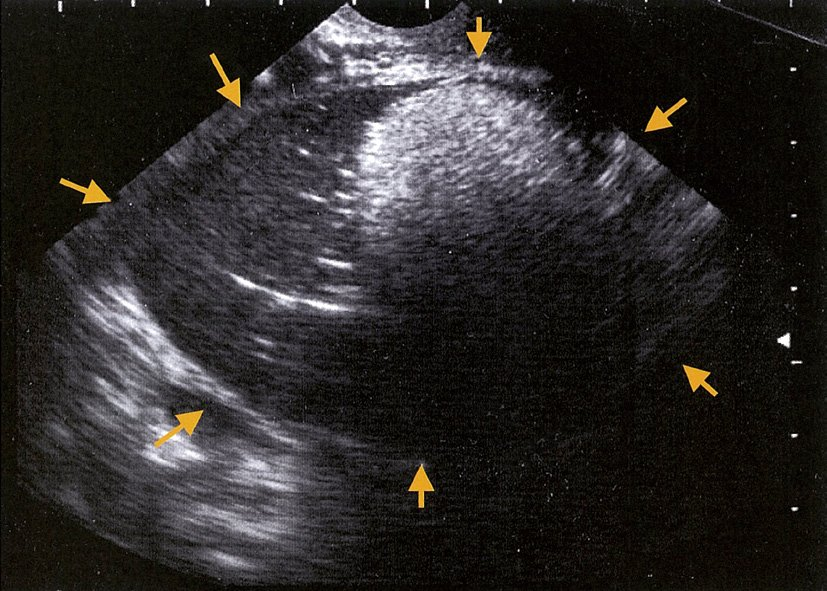
ａ 経過観察
ｂ 腫瘍摘出
ｃ 抗菌薬投与
ｄ 経腟穿刺吸引
ｅ 黄体ホルモン療法
✅
ｂ 腫瘍摘出
突然発症の下腹部痛と圧痛を伴う径6cmの卵巣腫瘤。卵巣腫瘍茎捻転であり腫瘍摘出を行う。
🧠 卵巣腫瘍茎捻転
実際の経腟超音波像は参照できないが、内部に脂肪・毛髪・石灰化を示唆する高輝度成分を含む囊胞性腫瘤（成熟囊胞性奇形腫）が描出されているはずである。| 所見 | 意味 |
|---|---|
| 2時間前に突然出現した右下腹部痛 | 茎捻転の典型的な発症様式 |
| 痛みの強さが発症時の半減 | 捻転が部分的に解除された（不完全捻転） |
| 右付属器に径6cmの腫瘤と圧痛 | 腫瘍本体と虚血による圧痛 |
| 尿妊娠反応陰性 | 異所性妊娠を否定 |
| 体温36.7℃、循環動態安定 | 感染・出血性ショックを否定 |
| 子宮と左付属器に異常なし | 病変は右卵巣に限局 |
卵巣腫瘍が茎（卵巣提索・固有靱帯）を軸に回転すると、まず静脈が閉塞してうっ血し、次いで動脈が閉塞して卵巣が壊死する。成熟囊胞性奇形腫のような可動性のある中等大（5〜10cm）の腫瘍で起こりやすい。
💊 治療は速やかな腫瘍摘出
茎捻転は放置すれば卵巣が壊死し、腹膜炎に至る産婦人科救急である。本例は痛みが半減しており自然に整復されつつあるが、腫瘍が残る限り捻転は必ず再発する。したがって速やかに腹腔鏡下に腫瘍を摘出（核出）する。
23歳と若年であり、捻転を解除して卵巣の血流回復を確認し、腫瘍のみを核出して正常卵巣組織を温存するのが原則。経腟穿刺吸引は腫瘍内容を腹腔内に散布し、悪性なら播種を招くため禁忌。
□ 選択肢の検討
| 選択肢 | 評価 |
|---|---|
| ａ 経過観察 | 誤り。捻転は再発し卵巣壊死に至る |
| ｂ 腫瘍摘出 | 正しい。捻転解除＋腫瘍核出で卵巣を温存 |
| ｃ 抗菌薬投与 | 誤り。発熱・炎症所見がなく感染ではない |
| ｄ 経腟穿刺吸引 | 禁忌。内容の腹腔内散布・播種の危険 |
| ｅ 黄体ホルモン療法 | 誤り。器質的腫瘍に薬物療法は無効 |
Q.557(110D-59)📷 画像3択25%
60 歳の女性。1 回経妊1 回経産婦。性器出血を主訴に来院した。50 歳で閉経。1 年前から時々性器出血があった。身長154cm、体重64kg。子宮は手拳大で両側付属器は触知しない。経腟超音波検査で子宮内膜の肥厚を認め手術を行うこととした。子宮内膜生検のH-E 染色標本（A，B）を示す。
この患者の術前検査として適切なのはどれか。3 つ選べ。
この患者の術前検査として適切なのはどれか。3 つ選べ。
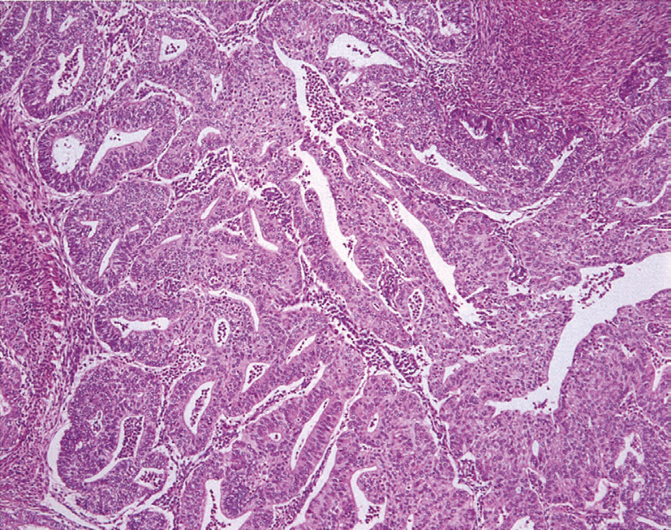
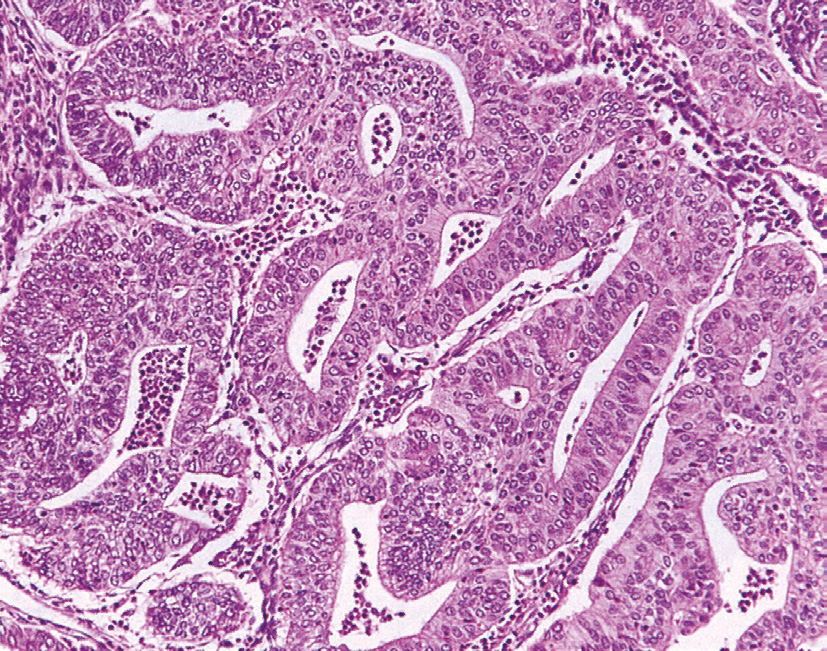
ａ HbA1c 測定
ｂ 骨盤部MRI
ｃ 腹部造影CT
ｄ 骨シンチグラフィ
ｅ ヒトパピローマウイルス〈HPV〉検査
✅
ａ HbA1c 測定
ｂ 骨盤部MRI
ｃ 腹部造影CT
子宮体癌の術前検査。全身管理のためのHbA1c、局所進展を見る骨盤部MRI、転移を見る腹部造影CTが適切。
🧠 子宮体癌と診断する
実際のH-E染色標本は参照できないが、子宮内膜腺の密な増生と細胞異型（類内膜癌）が示されているはずである。・60歳、50歳で閉経後の性器出血
・身長154cm・体重64kg（BMI 27.0の肥満）
・超音波で子宮内膜の肥厚
・子宮内膜生検で診断が確定し手術方針
子宮体癌〈子宮内膜癌〉である。
🧠 術前検査は「全身管理」と「進展度評価」に分けて考える
| 検査 | 評価 |
|---|---|
| ① HbA1c測定 | 子宮体癌の背景には肥満・糖尿病があることが多い。周術期の血糖管理は創感染・縫合不全を防ぐために必須。手術に耐えうるかの評価でもある |
| ② 骨盤部MRI | 筋層浸潤の深さ・子宮頸部間質浸潤の有無を最も鋭敏に評価でき、リンパ節郭清の必要性など術式の決定に直結する |
| ③ 腹部造影CT | 後腹膜リンパ節腫大・肝転移・腹膜播種といった遠隔進展の評価に必要 |
| ④ 骨シンチグラフィ | 不要。子宮体癌の骨転移は稀で、骨痛などの症状がなければルーチンには行わない |
| ⑤ HPV検査 | 不要。HPVは子宮頸癌の原因であり子宮体癌とは無関係 |
□ 子宮体癌のリスク因子
子宮体癌〈類内膜癌〉はエストロゲン依存性であり、プロゲステロンの拮抗を受けないエストロゲン曝露が長いほどリスクが高い。・肥満（脂肪組織のアロマターゼがアンドロゲンをエストロゲンに変換）
・未経産・不妊・早発初経・晩期閉経
・多囊胞性卵巣症候群（無排卵でプロゲステロンが分泌されない）
・糖尿病・高血圧
・タモキシフェンの内服（子宮内膜にはエストロゲン様に作用）
・Lynch症候群（大腸癌の家族歴）
逆に経口避妊薬・黄体ホルモンの内服は保護的に働く。HPVは子宮頸癌の原因であって子宮体癌とは無関係。
□ 選択肢の検討
| 選択肢 | 評価 |
|---|---|
| ａ HbA1c測定 | 適切。肥満・糖尿病の合併評価と周術期血糖管理 |
| ｂ 骨盤部MRI | 適切。筋層浸潤・頸部浸潤の評価で術式が決まる |
| ｃ 腹部造影CT | 適切。リンパ節・遠隔転移の評価 |
| ｄ 骨シンチグラフィ | 不適。骨転移は稀でルーチンには行わない |
| ｅ HPV検査 | 不適。子宮頸癌の検査で体癌とは無関係 |
Q.558(110I-62)📷 画像75%
歳の女性。未経妊。子宮頸癌検診で異常を指摘されて来院した。内診と経膣超音波検査（編註：「経腟超音波検査」の誤記と思われる）で子宮は正常大で子宮体部内膜、付属器および子宮傍組織に異常を認めない。コルポスコピィで子宮頸部に異常所見があり、狙い組織診を実施した。H-E 染色標本（A，B）を示す。
この患者への対応として適切なのはどれか。
この患者への対応として適切なのはどれか。
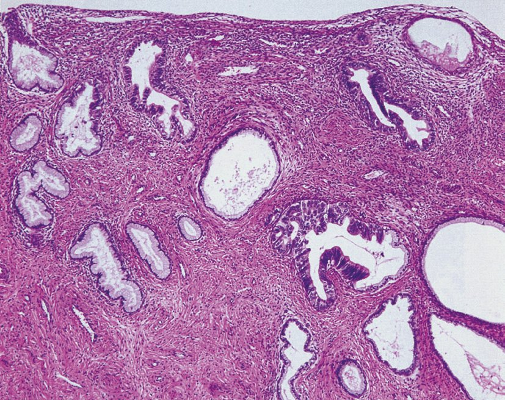
ａ 円錐切除
ｂ 子宮全摘出
ｃ イミキモド塗布
ｄ 化学放射線療法
ｅ 経過観察（3 か月後の再診）
✅
ａ 円錐切除
狙い組織診でCIN3（高度異形成・上皮内癌）と診断。23歳で妊孕性温存が必要であり円錐切除を行う。
🧠 CIN3の治療は円錐切除
実際のH-E染色標本は参照できないが、異型細胞が上皮の全層を占めるが基底膜は保たれ、間質浸潤がない（CIN3＝上皮内癌）像が示されているはずである。本例は
・23歳・未経妊
・内診・経腟超音波で子宮は正常大、子宮体部内膜・付属器・子宮傍組織に異常なし → 浸潤癌・進行癌を否定
・コルポスコピィで異常所見 → 狙い組織診
CIN1・CIN2は自然消退が期待でき経過観察するが、CIN3（高度異形成・上皮内癌）は浸潤癌へ進展するリスクが高く治療の適応である。
子宮頸部円錐切除術は病変を含む頸部を円錐状に切除する術式で、
・治療（病変の完全切除）であると同時に
・切除標本を全割して微小浸潤癌の有無を確認する診断でもある
・子宮を温存でき、23歳で妊孕性を保てる
という点で本例に最適である。
□ 子宮頸癌のスクリーニングと確定診断
① 子宮頸部細胞診（検診）→ ② コルポスコピィ（病変の位置を特定）→ ③ 狙い組織診 ＝ 確定診断細胞診もコルポスコピィもスクリーニング／位置決めであり確定診断にならない。
・CIN1（軽度異形成）・CIN2（中等度異形成） → 多くは自然消退するため経過観察（細胞診を半年ごと）
・CIN3（高度異形成・上皮内癌） → 子宮頸部円錐切除術
・浸潤癌 → 進行期に応じて広汎子宮全摘出術／化学放射線療法
⚠️ 円錐切除術後の注意
- 頸管が短縮し、頸管無力症・前期破水による流早産のリスクが上昇する
- したがってCIN1・2の若年女性に安易な円錐切除を行ってはならない
- 術後は切除断端の評価と、細胞診による長期の経過観察が必要
□ 選択肢の検討
| 選択肢 | 評価 |
|---|---|
| ａ 円錐切除 | 正しい。治療と診断を兼ね、子宮を温存できる |
| ｂ 子宮全摘出 | 過剰。23歳・未経妊で妊孕性を失う |
| ｃ イミキモド塗布 | 誤り。尖圭コンジローマの治療薬 |
| ｄ 化学放射線療法 | 過剰。進行浸潤癌の治療 |
| ｅ 経過観察（3か月後の再診） | 誤り。CIN3は浸潤癌へ進展しうる |
Q.559(109A-44)📷 画像92%
53 歳の女性。2 回経妊2 回経産婦。不正性器出血を主訴に来院した。50 歳で閉経。3 か月前から少量の性器出血が出現したため受診した。内診で子宮は鶏卵大で、右付属器が手拳大に腫大していた。血液生化学所見：LH4.8mIU/mL、FSH 0.1mIU/mL 未満（基準 閉経後30 以上）、プロラクチン4.8ng/mL（基準15 以下）、エストラジオール270pg/mL（基準 閉経後20 以下）、プロゲステロン0.3ng/mL、CEA 0.9ng/mL（基準5 以下）、CA19-9 40U/mL（基準37 以下）、CA125 11U/mL（基準35 以下）。経腟超音波検査で子宮内膜の肥厚を認め、子宮内膜生検で子宮内膜増殖症を認める。摘出した右卵巣腫瘍のH-E 染色標本を示す。
診断はどれか。
診断はどれか。
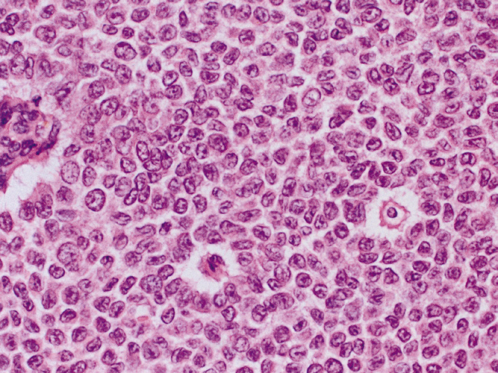
ａ 未熟奇形腫
ｂ 粘液性腺癌
ｃ 顆粒膜細胞腫
ｄ Krukenberg 腫瘍
ｅ ディスジャーミノーマ
✅
ｃ 顆粒膜細胞腫
閉経後なのにエストラジオール270pg/mLと高値でFSHが抑制され、子宮内膜増殖症を伴う。顆粒膜細胞腫である。
🧠 ホルモン値が組織型を語る
実際のH-E染色標本は参照できないが、顆粒膜細胞腫では核溝〈coffee bean nuclei〉をもつ小型腫瘍細胞が、中心に好酸性物質をもつCall-Exner小体を形成する像が示されているはずである。| 所見 | 意味 |
|---|---|
| 53歳、50歳で閉経 | 本来はエストロゲンが枯渇しゴナドトロピンが上昇する時期 |
| エストラジオール270pg/mL（基準：閉経後20以下） | 卵巣がエストロゲンを産生している＝エストロゲン産生腫瘍 |
| FSH 0.1mIU/mL未満（基準：閉経後30以上） | 高エストロゲンによるネガティブフィードバックでFSHが抑制されている。これも腫瘍性のエストロゲン産生を裏づける |
| 子宮内膜生検で子宮内膜増殖症 | エストロゲンの持続刺激による内膜の過剰増殖。これが3か月続く性器出血の原因 |
| 右付属器が手拳大に腫大 | 腫瘍本体 |
| CEA・CA19-9・CA125いずれもほぼ正常 | 上皮性卵巣癌・転移性腫瘍を否定 |
「閉経後のエストロゲン高値＋FSH抑制＋子宮内膜増殖症＋卵巣腫瘤」＝顆粒膜細胞腫と直結させたい。
💡 顆粒膜細胞腫のポイント
- 性索間質性腫瘍でエストロゲンを産生する
- 思春期前 → 思春期早発症／性成熟期 → 月経異常／閉経後 → 不正出血・子宮内膜増殖症・子宮体癌の合併
- 病理はCall-Exner小体。腫瘍マーカーとしてインヒビン
- 晩期再発（10年以上後）があり長期の経過観察が必要
□ 卵巣腫瘍の組織分類
| 分類 | 内容 | ポイント |
|---|---|---|
| 表層上皮性・間質性腫瘍 | 最多（約2/3）。漿液性・粘液性・類内膜・明細胞の各囊胞腺腫／境界悪性／腺癌 | 卵巣癌の大半。漿液性腺癌が最多 |
| 胚細胞腫瘍 | 若年に好発。成熟囊胞性奇形腫（良性・最多）。悪性は未分化胚細胞腫・卵黄囊腫瘍・未熟奇形腫 | 卵黄囊腫瘍→AFP、絨毛癌→hCG、未分化胚細胞腫→LD |
| 性索間質性腫瘍 | ホルモン産生。顆粒膜細胞腫（エストロゲン産生）、莢膜細胞腫、Sertoli-Leydig細胞腫（アンドロゲン産生）、線維腫（Meigs症候群） | 顆粒膜細胞腫 → 不正出血・子宮内膜増殖症 |
| 転移性腫瘍 | 胃癌・大腸癌から。印環細胞癌の両側転移＝Krukenberg腫瘍 | CEA上昇 |
□ 選択肢の検討
| 選択肢 | 評価 |
|---|---|
| ａ 未熟奇形腫 | 誤り。若年に好発し、ホルモンを産生しない |
| ｂ 粘液性腺癌 | 誤り。ホルモンを産生しない。CA19-9が上昇しやすい |
| ｃ 顆粒膜細胞腫 | 正しい。エストロゲン産生腫瘍 |
| ｄ Krukenberg腫瘍 | 誤り。胃癌の両側卵巣転移。CEAが上昇 |
| ｅ ディスジャーミノーマ | 誤り。若年に好発しLDが上昇。ホルモンは産生しない |
Q.560(109D-37)📷 画像68%
43 歳の女性。3 回経妊2 回経産婦。不正性器出血と腰痛とを主訴に来院した。月経周期は28 日型。2 か月前から不正性器出血と腰痛とが出現したため受診した。腟鏡診で子宮腟部にカリフラワー状で易出血性の腫瘤を認める。内診で子宮頸部から右側骨盤壁に連続する硬結を触知する。血液所見：赤血球350 万、Hb 11.0g/dL、Ht 30％、白血球9,000、血小板42 万。血液生化学所見：総蛋白7.0g/dL、クレアチニン0.9mg/dL、AST 32IU/L、ALT 30IU/L、Na140mEq/L、K 3.8mEq/L、Cl 104mEq/L。子宮腟部生検の組織診では扁平上皮癌である。全身検索で遠隔転移を認めない。造影剤静注の10 分後の静脈性尿路造影像を示す。
最も適切な治療法はどれか。
最も適切な治療法はどれか。
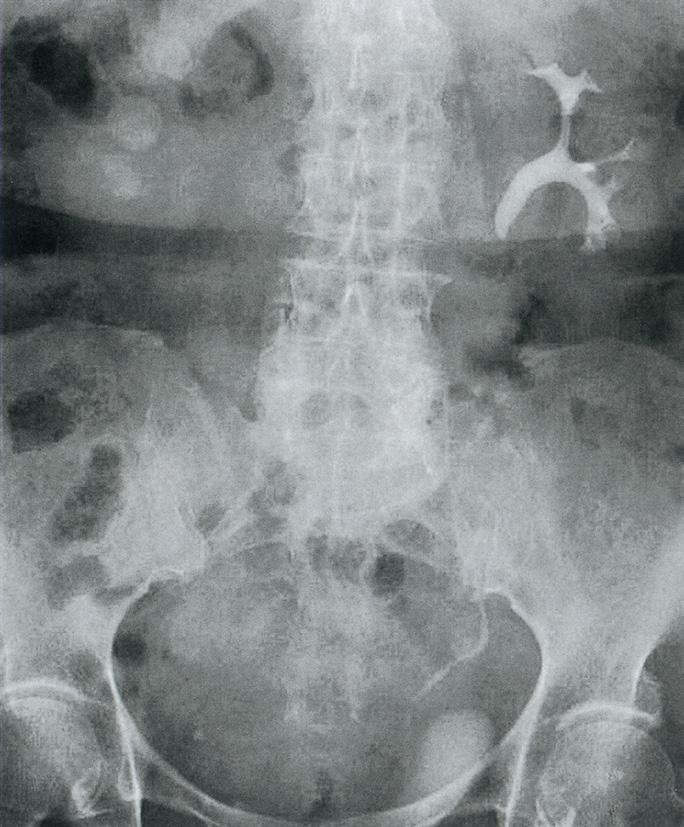
ａ 手 術
ｂ 免疫療法
ｃ 放射線治療
ｄ 抗癌化学療法
ｅ 化学放射線療法
✅
ｅ 化学放射線療法
子宮頸部から右側骨盤壁に連続する硬結＝ⅢB期。腎機能は保たれており同時化学放射線療法を行う。
🧠 静脈性尿路造影が示すもの
実際の静脈性尿路造影像は参照できないが、右尿管が腫瘍に圧迫されて狭窄し、その上流の腎盂・尿管が拡張する（水腎症）像が示されているはずである。腰痛はこの水腎症によるものと考えられる。・腟鏡診で子宮腟部にカリフラワー状で易出血性の腫瘤、生検で扁平上皮癌
・内診で子宮頸部から右側骨盤壁に連続する硬結
・全身検索で遠隔転移なし
骨盤壁に達する子宮傍結合組織浸潤 ＝ ⅢB期であり、（水腎症の存在自体もⅢ期の根拠となる）広汎子宮全摘出術の適応にはならない。
💊 治療：同時化学放射線療法〈CCRT〉
ⅢB期子宮頸癌の標準治療はシスプラチンを併用した同時化学放射線療法〈CCRT〉である。化学療法の同時併用による放射線増感効果で、放射線単独より生存率が向上する。本例はクレアチニン0.9mg/dLと腎機能が保たれており、腎毒性のあるシスプラチンを安全に投与できる。
（もし水腎症が高度で腎機能が悪化していれば、尿管ステント留置・腎瘻造設で腎機能を回復させてからシスプラチンを投与する。それでも腎機能が不良なら放射線単独とせざるを得ない。）
□ 子宮頸癌の進行期と治療
| 進行期 | 定義 | 治療 |
|---|---|---|
| Ⅰ期 | 癌が子宮頸部に限局 | 手術（広汎子宮全摘出術）／放射線 |
| Ⅱ期 | 腟壁または子宮傍結合組織に浸潤するが骨盤壁・腟下1/3に達しない | 手術／CCRT |
| Ⅲ期 | 骨盤壁に達する／腟下1/3に達する／水腎症・無機能腎 | 手術適応外。同時化学放射線療法〈CCRT〉 |
| Ⅳ期 | 膀胱・直腸粘膜に浸潤／遠隔転移 | 化学放射線療法・化学療法 |
□ 選択肢の検討
| 選択肢 | 評価 |
|---|---|
| ａ 手 術 | 誤り。ⅢB期は手術適応外 |
| ｂ 免疫療法 | 誤り。初回治療の標準ではない |
| ｃ 放射線治療 | 不十分。腎機能が保たれており化学療法を併用すべき |
| ｄ 抗癌化学療法 | 誤り。単独では局所制御が不十分 |
| ｅ 化学放射線療法 | 正しい。ⅢB期の標準治療 |
Q.561(109I-19)📷 画像75%
女性生殖器から細胞診の検体を採取するために用いる器具の写真を示す。
これらの器具を用いて検査する共通の部位はどれか。
これらの器具を用いて検査する共通の部位はどれか。
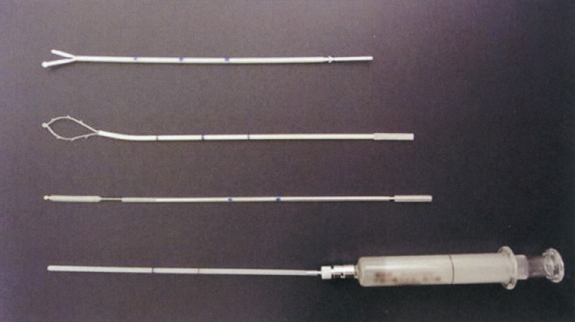
ａ 卵 巣
ｂ 卵 管
ｃ 子宮体部
ｄ 子宮頸部
ｅ 腟
✅
ｃ 子宮体部
子宮内膜細胞診の採取器具（吸引式チューブ・ブラシなど）で、共通して検査するのは子宮体部である。
🧠 採取部位と器具の対応
実際の器具の写真は参照できないが、細長いチューブ状の吸引器具（エンドサイト等）やブラシ状の器具が示されているはずである。これらはいずれも頸管を通して子宮腔内へ挿入し、子宮内膜を擦過・吸引して細胞を採取する器具である。すなわち共通して検査する部位は子宮体部（子宮内膜）である。
| 部位 | 採取法 |
|---|---|
| 子宮頸部細胞診 | ヘラ（スパーテル）・綿棒・サイトブラシで子宮腟部と頸管を擦過。腟鏡下に直視して行える |
| 子宮体部（内膜）細胞診 | 細長い吸引チューブやブラシを子宮腔内に挿入。直視できないため盲目的に行う。閉経後不正出血で子宮体癌を疑うときに施行 |
| 卵巣・卵管 | 細胞診で直接採取することはできない。腹水細胞診や手術検体で評価する |
□ 選択肢の検討
| 選択肢 | 評価 |
|---|---|
| ａ 卵 巣 | 誤り。細胞診で直接採取できない |
| ｂ 卵 管 | 誤り。細胞診で直接採取できない |
| ｃ 子宮体部 | 正しい。子宮腔内に挿入して内膜細胞を採取する器具 |
| ｄ 子宮頸部 | 誤り。ヘラ・綿棒・サイトブラシを腟鏡下に用いる |
| ｅ 腟 | 誤り。綿棒で擦過する |
Q.562(109I-58)📷 画像97%
48 歳の女性。2 回経妊2 回経産婦。月経痛を主訴に来院した。5 年前から子宮筋腫を指摘されている。最近、月経時の下腹部痛が強くなったため受診した。月経周期は26 日型、整。持続10 日間。血液所見：赤血球340 万、Hb6.0g/dL、Ht 26％、白血球4,200、血小板33 万。骨盤部MRI のT2 強調矢状断像を示す。子宮摘出手術を行うこととした。
それまでの管理として投与すべきでないのはどれか。
それまでの管理として投与すべきでないのはどれか。
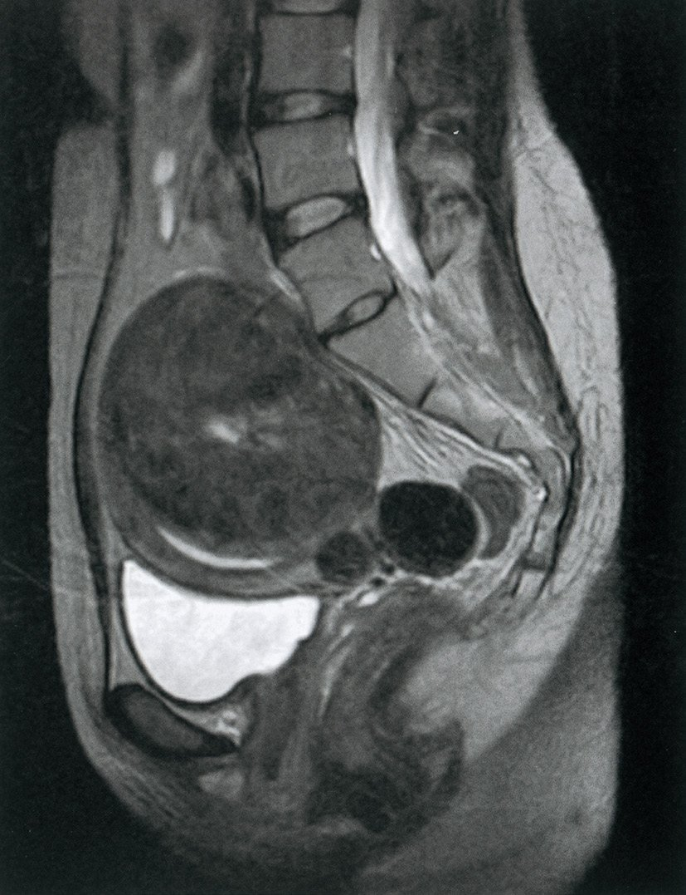
ａ 鉄 剤
ｂ 止血薬
ｃ 鎮痛薬
ｄ エストロゲン
ｅ GnRH アゴニスト
✅
ｄ エストロゲン
子宮筋腫はエストロゲン依存性に増大する。手術までの管理でエストロゲン投与は禁忌。
🧠 子宮筋腫はエストロゲン依存性腫瘍
実際の骨盤部MRI T2強調矢状断像は参照できないが、境界明瞭な低信号腫瘤（子宮筋腫）が描出されているはずである。48歳、5年前から子宮筋腫を指摘され、月経困難症と持続10日間の過多月経によるHb 6.0g/dLの高度貧血を来している。子宮摘出術までの間、症状を抑えて全身状態を整える必要がある。
子宮筋腫はエストロゲン依存性に増大する腫瘍であり、エストロゲンを投与すれば筋腫は増大し、過多月経と貧血はさらに悪化する。したがってエストロゲン投与は禁忌である。
（閉経すると筋腫が縮小するのは、エストロゲンが枯渇するためである。）
💊 術前管理で投与すべきもの
| 薬剤 | 目的 |
|---|---|
| 鉄 剤 | Hb 6.0g/dLの鉄欠乏性貧血を改善し、術中出血に備える |
| 止血薬 | トラネキサム酸などで過多月経による出血量を減らす |
| 鎮痛薬 | NSAIDで月経困難症を緩和する |
| GnRHアゴニスト | 偽閉経状態をつくり筋腫を縮小させる。月経を止めて貧血を改善し、術中出血量も減らせる。術前投与の代表的な選択肢（骨粗鬆症のため原則6か月まで） |
| エストロゲン | 禁忌。筋腫を増大させ過多月経を悪化させる |
□ 選択肢の検討
| 選択肢 | 評価 |
|---|---|
| ａ 鉄 剤 | 投与すべき。Hb 6.0g/dLの鉄欠乏性貧血を改善 |
| ｂ 止血薬 | 投与すべき。過多月経による出血量を減らす |
| ｃ 鎮痛薬 | 投与すべき。月経困難症の緩和 |
| ｄ エストロゲン | 投与すべきでない。筋腫を増大させる |
| ｅ GnRHアゴニスト | 投与すべき。筋腫を縮小させ月経を止め貧血を改善 |
Q.563(108A-13)📷 画像62%
正常月経周期を有する女性の骨盤部MRI のT2 強調矢状断像を示す。
この患者にみられる症状はどれか。
この患者にみられる症状はどれか。
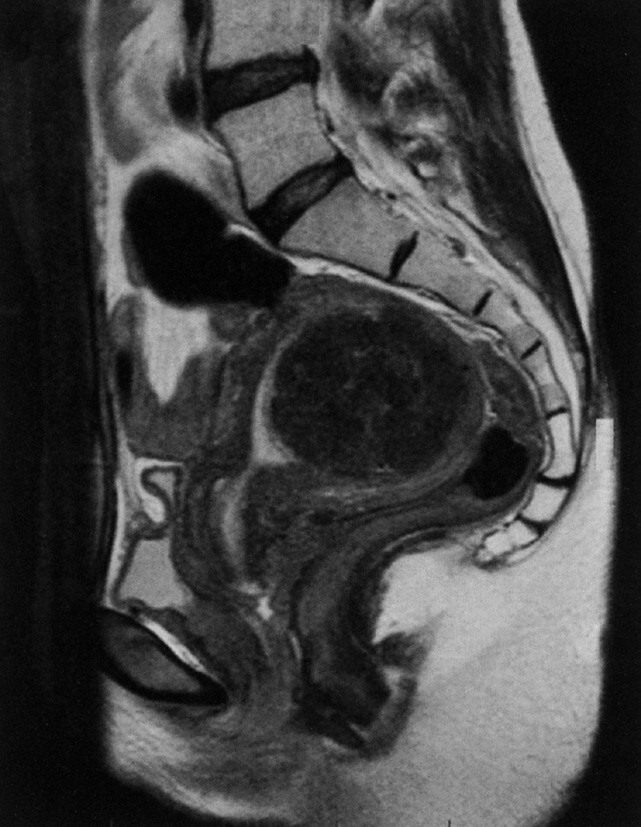
ａ 頻 尿
ｂ 排便痛
ｃ 過多月経
ｄ 下腹部腫瘤感
ｅ 不正性器出血
✅
ｃ 過多月経
正常月経周期の女性の子宮内腔に突出する腫瘤＝粘膜下筋腫。過多月経を来す。
🧠 「正常月経周期を有する」という但し書きの意味
実際の骨盤部MRI T2強調矢状断像は参照できないが、子宮内腔に突出する境界明瞭な低信号腫瘤（粘膜下筋腫）が描出されているはずである。設問がわざわざ「正常月経周期を有する女性」と断っているのは、排卵は正常であり、ホルモン異常による症状（無月経・不正出血）はないと明示するためである。
粘膜下筋腫は子宮内腔に突出して内膜面積を増やし、子宮の収縮を妨げるため、周期は正常のまま経血量だけが増える＝過多月経を来す。これが鉄欠乏性貧血の原因となる。
この設問は「小さな筋腫でも粘膜下にあれば過多月経を来す」という原則を問うている。
□ 子宮筋腫・腺筋症・内膜症の鑑別
| 疾患 | 内診所見 | MRI | 症状 |
|---|---|---|---|
| 子宮筋腫 | 弾性硬・凹凸不整に腫大、圧痛なし | 境界明瞭な低信号腫瘤 | 過多月経・貧血・圧迫症状（頻尿）・不妊 |
| 子宮腺筋症 | 硬く球状に腫大、圧痛あり | 接合帯のびまん性肥厚（境界不明瞭） | 強い月経困難症・過多月経。CA125上昇 |
| 子宮内膜症 | 子宮は正常大だが可動性不良、Douglas窩に有痛性硬結 | チョコレート囊胞（T1高信号・T2低信号） | 月経困難症・性交痛・排便痛・不妊 |
□ 選択肢の検討
| 選択肢 | 評価 |
|---|---|
| ａ 頻 尿 | 誤り。子宮全体が大きく腫大して膀胱を圧迫した場合の症状 |
| ｂ 排便痛 | 誤り。子宮内膜症（Douglas窩病変）の症状 |
| ｃ 過多月経 | 正しい。粘膜下筋腫の最も代表的な症状 |
| ｄ 下腹部腫瘤感 | 誤り。子宮が大きく腫大した場合の症状 |
| ｅ 不正性器出血 | 誤り。正常月経周期を有すると明記されており、出血は月経時に限られる（＝過多月経） |
Q.564(108E-41)📷 画像61%
39 歳の女性。子宮頸がん検診の細胞診で異常を指摘されたため来院した。不正性器出血はなかった。初経12 歳。月経周期28 日、整。腟鏡診で分泌物は白色少量である。酢酸加工後のコルポスコピィの写真を示す。
最も考えられるのはどれか。
最も考えられるのはどれか。
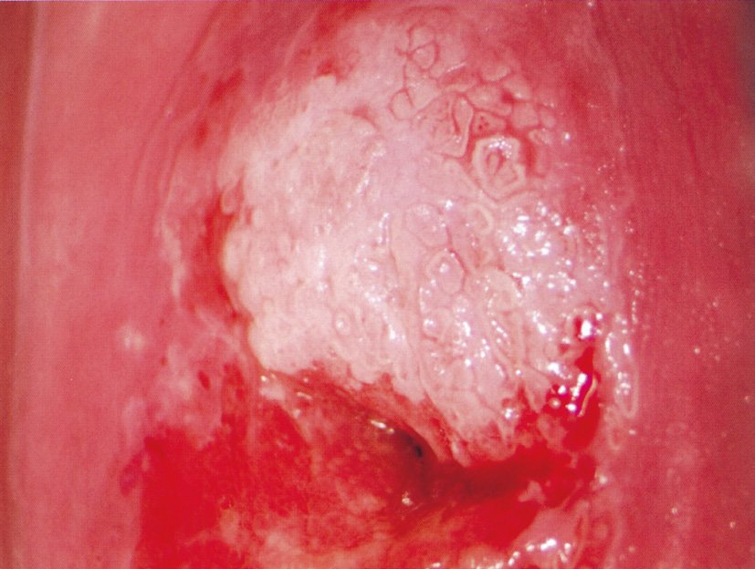
ａ 子宮頸癌
ｂ 子宮頸管炎
ｃ トリコモナス腟炎
ｄ 尖圭コンジローマ
ｅ 異形成〈子宮頸部上皮内腫瘍〉
✅
ｅ 異形成〈子宮頸部上皮内腫瘍〉
細胞診異常＋酢酸加工後の白色上皮。肉眼的異常も炎症所見もなく、異形成〈CIN〉が最も考えられる。
🧠 酢酸加工後の白色上皮＝異型上皮
実際のコルポスコピィ写真は参照できないが、酢酸加工後に境界明瞭な白色上皮、あるいはモザイク・赤点斑が認められているはずである。3〜5％酢酸を塗布すると核蛋白に富む異型上皮が一過性に白く変化する。正常な扁平上皮はグリコーゲンに富み白くならない。
本例は
・39歳、検診の細胞診で異常を指摘
・不正性器出血はなかった → 浸潤癌（易出血性）は考えにくい
・腟鏡診で分泌物は白色少量 → 感染性腟炎・頸管炎を否定
したがって異形成〈子宮頸部上皮内腫瘍・CIN〉が最も考えられる。確定診断はこの後の狙い組織診による。
□ 子宮頸癌のスクリーニングと確定診断
① 子宮頸部細胞診（検診）→ ② コルポスコピィ（病変の位置を特定）→ ③ 狙い組織診 ＝ 確定診断細胞診もコルポスコピィもスクリーニング／位置決めであり確定診断にならない。
・CIN1（軽度異形成）・CIN2（中等度異形成） → 多くは自然消退するため経過観察（細胞診を半年ごと）
・CIN3（高度異形成・上皮内癌） → 子宮頸部円錐切除術
・浸潤癌 → 進行期に応じて広汎子宮全摘出術／化学放射線療法
□ 選択肢の検討
| 選択肢 | 評価 |
|---|---|
| ａ 子宮頸癌 | 誤り。浸潤癌なら肉眼的にカリフラワー状の易出血性腫瘤を認め、不正出血を伴う |
| ｂ 子宮頸管炎 | 誤り。膿性帯下・頸管の発赤を伴う |
| ｃ トリコモナス腟炎 | 誤り。黄色泡沫状帯下と掻痒。本例は白色少量 |
| ｄ 尖圭コンジローマ | 誤り。肉眼的に乳頭状・鶏冠状の腫瘤を認める |
| ｅ 異形成〈子宮頸部上皮内腫瘍〉 | 正しい。細胞診異常＋酢酸白色上皮 |
Q.565(108I-11)62%
子宮体癌のリスクファクターでないのはどれか。
ａ 肥 満
ｂ 大腸癌の家族歴
ｃ 黄体ホルモンの内服
ｄ 多囊胞性卵巣症候群
ｅ タモキシフェンの内服
✅
ｃ 黄体ホルモンの内服
黄体ホルモンは子宮内膜を分化・萎縮させ、子宮体癌に対して保護的に働く。リスク因子ではない。
🧠 「エストロゲンが増やし、プロゲステロンが抑える」
子宮内膜はエストロゲンで増殖し、プロゲステロン（黄体ホルモン）で分化・脱落する。したがってプロゲステロンの拮抗を受けないエストロゲン曝露が続くと子宮内膜増殖症を経て子宮体癌に至る。黄体ホルモンの内服はむしろ子宮内膜を分化・萎縮させ、子宮体癌に対して保護的に働く。実際、子宮内膜増殖症や、若年で妊孕性温存を希望する類内膜癌Grade1の患者には黄体ホルモン療法（メドロキシプロゲステロン酢酸エステル）が治療として用いられる。エストロゲンとプロゲスチンを含む経口避妊薬も子宮体癌のリスクを下げる。
□ 子宮体癌のリスク因子
子宮体癌〈類内膜癌〉はエストロゲン依存性であり、プロゲステロンの拮抗を受けないエストロゲン曝露が長いほどリスクが高い。・肥満（脂肪組織のアロマターゼがアンドロゲンをエストロゲンに変換）
・未経産・不妊・早発初経・晩期閉経
・多囊胞性卵巣症候群（無排卵でプロゲステロンが分泌されない）
・糖尿病・高血圧
・タモキシフェンの内服（子宮内膜にはエストロゲン様に作用）
・Lynch症候群（大腸癌の家族歴）
逆に経口避妊薬・黄体ホルモンの内服は保護的に働く。HPVは子宮頸癌の原因であって子宮体癌とは無関係。
□ 選択肢の検討
| 選択肢 | 評価 |
|---|---|
| ａ 肥 満 | リスク因子。脂肪組織のアロマターゼでエストロゲンが増える |
| ｂ 大腸癌の家族歴 | リスク因子。Lynch症候群では大腸癌と子宮体癌が家系内に集積する |
| ｃ 黄体ホルモンの内服 | リスク因子でない。むしろ保護的に働き、治療にも用いられる |
| ｄ 多囊胞性卵巣症候群 | リスク因子。無排卵でプロゲステロンが分泌されず、エストロゲンの一方的な刺激が続く |
| ｅ タモキシフェンの内服 | リスク因子。乳腺では抗エストロゲン、子宮内膜ではエストロゲン様に作用する |
Q.566(108I-33)2択59%
妊娠性絨毛癌に用いる薬剤はどれか。2 つ選べ。
ａ メトトレキサート
ｂ マイトマイシンC
ｃ アドリアマイシン
ｄ アクチノマイシンD
ｅ 酢酸メドロキシプロゲステロン
✅
ａ メトトレキサート
ｄ アクチノマイシンD
絨毛癌の化学療法にはメトトレキサートとアクチノマイシンDが用いられる。
💊 絨毛性腫瘍は化学療法で治癒しうる
絨毛癌は化学療法への感受性が極めて高く、転移があっても化学療法のみで治癒しうる数少ない悪性腫瘍である。・低リスク例：メトトレキサート〈MTX〉またはアクチノマイシンDの単剤療法
・高リスク例：EMA-CO療法（エトポシド・MTX・アクチノマイシンD・シクロホスファミド・ビンクリスチン）
治療効果と再発の判定はすべてhCGで行う。hCGが陰性化した後も一定期間の化学療法を追加し、長期に追跡する。
MTXを大量投与する際はホリナート（ロイコボリン）救援療法を併用して正常細胞の葉酸代謝を回復させる。
💡 絨毛性疾患のまとめ
- 胞状奇胎：治療は子宮内容除去術。その後hCGで追跡
- 侵入奇胎：奇胎後にhCGが下がらない／再上昇。化学療法
- 絨毛癌：肺・脳・肝へ血行性転移。化学療法
- いずれもhCGが診断・治療効果判定・再発監視のすべてを担う
□ 選択肢の検討
| 選択肢 | 評価 |
|---|---|
| ａ メトトレキサート | 正しい。絨毛癌の第一選択薬 |
| ｂ マイトマイシンC | 誤り。胃癌・肺癌などに用いる |
| ｃ アドリアマイシン | 誤り。乳癌・悪性リンパ腫などに用いる |
| ｄ アクチノマイシンD | 正しい。絨毛癌の第一選択薬 |
| ｅ 酢酸メドロキシプロゲステロン | 誤り。黄体ホルモン製剤。絨毛癌はホルモン依存性でない |
Q.567(108I-36)📷 画像2択84%
骨盤部MRI のT2 強調矢状断像を示す。
この疾患でみられる症状はどれか。2 つ選べ。
この疾患でみられる症状はどれか。2 つ選べ。
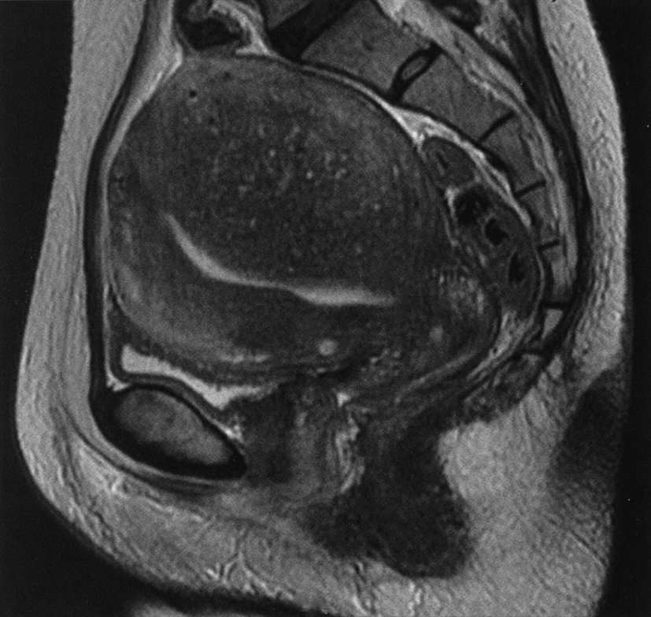
ａ 排尿痛
ｂ 月経痛
ｃ 過多月経
ｄ 外陰部痛
ｅ 帯下の増加
✅
ｂ 月経痛
ｃ 過多月経
MRIで子宮筋層のびまん性肥厚を示す子宮腺筋症。強い月経痛と過多月経を来す。
🧠 MRIから病態を読み、症状を導く
実際の骨盤部MRI T2強調矢状断像は参照できないが、子宮筋層（接合帯）のびまん性肥厚と内部の点状高信号を示す子宮腺筋症が描出されているはずである（あるいは子宮内腔に突出する低信号腫瘤＝子宮筋腫）。いずれにせよ病変は子宮体部の筋層・内腔にあり、そこから導かれる症状は
・月経痛（月経困難症）
子宮腺筋症では筋層内の異所性内膜が周期的に出血し、子宮の収縮と相まって強い疼痛を生じる
・過多月経
子宮内膜面積の増加、子宮収縮の妨げ、血管の増生により経血量が増え、鉄欠乏性貧血を来す
の2つである。
🧠 なぜ他の症状は起こらないのか
| 選択肢 | なぜ起こらないか |
|---|---|
| 排尿痛 | 膀胱炎・尿道炎の症状。子宮体部病変では起こらない（大きく腫大すれば頻尿は起こるが「排尿痛」ではない） |
| 外陰部痛 | 外陰の炎症・腫瘍・ヘルペスなどの症状 |
| 帯下の増加 | 子宮頸管・腟の分泌・炎症・悪性腫瘍による症状で、子宮体部の病変では起こらない |
□ 子宮筋腫・腺筋症・内膜症の鑑別
| 疾患 | 内診所見 | MRI | 症状 |
|---|---|---|---|
| 子宮筋腫 | 弾性硬・凹凸不整に腫大、圧痛なし | 境界明瞭な低信号腫瘤 | 過多月経・貧血・圧迫症状（頻尿）・不妊 |
| 子宮腺筋症 | 硬く球状に腫大、圧痛あり | 接合帯のびまん性肥厚（境界不明瞭） | 強い月経困難症・過多月経。CA125上昇 |
| 子宮内膜症 | 子宮は正常大だが可動性不良、Douglas窩に有痛性硬結 | チョコレート囊胞（T1高信号・T2低信号） | 月経困難症・性交痛・排便痛・不妊 |
□ 選択肢の検討
| 選択肢 | 評価 |
|---|---|
| ａ 排尿痛 | 誤り。膀胱・尿道の炎症による |
| ｂ 月経痛 | 正しい。筋層内の異所性内膜の出血と子宮収縮による |
| ｃ 過多月経 | 正しい。内膜面積の増加と収縮不全による |
| ｄ 外陰部痛 | 誤り。外陰の病変による |
| ｅ 帯下の増加 | 誤り。頸管・腟の病変による |
Q.568(107A-41)📷 画像57%
58 歳の女性。腹部膨満感と全身倦怠感とを主訴に来院した。3 か月前から腹部の膨満感を自覚していた。3 週前から全身倦怠感が著明になったため受診した。身長158cm、体重60kg。体温36.8℃。脈拍80/ 分、整。腹部は腹水のため膨隆している。下肢に浮腫を認める。血液所見：赤血球418 万、Hb 12.5g/dl、Ht 39％、白血球9,500、血小板31 万。血液生化学所見：総蛋白4.8g/dl、アルブミン2.1g/dl、尿素窒素6.7mg/dl、クレアチニン0.5mg/dl、総ビリルビン0.4mg/dl、AST 29IU/l、ALT 7IU/l、LD 368IU/l（基準176 ～353）、Na 131mEq/l、K 4.0mEq/l、Cl 101mEq/l、CA19-9 22U/ml（基準37 以下）、CA125 4,411U/ml（基準35 以下）。動脈血ガス分析（room air）：pH 7.43、PaCO244Torr、PaO2 81Torr、HCO3－ 28mEq/l。骨盤部MRI のT2 強調矢状断像（A）とT2 強調横断像（B）とを示す。
治療方針を決定するための検査として重要性が低いのはどれか。
治療方針を決定するための検査として重要性が低いのはどれか。
ａ 胸部CT
ｂ 腹水穿刺
ｃ 凝固・線溶検査
ｄ 子宮内膜細胞診
ｅ 下部消化管内視鏡検査
✅
ｄ 子宮内膜細胞診
進行卵巣癌の治療方針決定に必要なのは、転移の評価・腹水細胞診・DIC評価・原発巣の鑑別。子宮内膜細胞診の重要性は低い。
🧠 進行卵巣癌と診断する
実際の骨盤部MRI像は参照できないが、充実部分に富む骨盤内腫瘤と大量の腹水が描出されているはずである。| 所見 | 意味 |
|---|---|
| 3か月前からの腹部膨満、腹水による腹部膨隆 | 癌性腹膜炎 |
| CA125 4,411U/ml（基準35以下） | 著明高値。卵巣癌を強く示唆 |
| 総蛋白4.8・アルブミン2.1g/dl | 腹水への蛋白喪失と低栄養 |
| 下肢の浮腫 | 低アルブミン血症・骨盤内腫瘤による静脈／リンパ還流障害 |
| LD 368IU/l（軽度上昇） | 腫瘍量の反映 |
| CA19-9 22U/ml（正常） | 粘液性腫瘍は積極的には疑わない |
🧠 各検査が「治療方針決定」にどう寄与するか
| 検査 | 治療方針への寄与 |
|---|---|
| 胸部CT | 胸水・胸膜播種・肺転移の有無を評価。胸水中に癌細胞があればⅣ期となり、治療方針（術前化学療法か手術先行か）が変わる |
| 腹水穿刺 | 腹水細胞診で悪性細胞を確認し組織型を推定できる。大量腹水の除去は症状緩和にもなる |
| 凝固・線溶検査 | 進行癌では慢性DIC・静脈血栓塞栓症を合併しやすく、手術・化学療法の可否と周術期管理を左右する |
| 下部消化管内視鏡検査 | 大腸癌の卵巣転移（転移性卵巣腫瘍）を除外する。原発が大腸癌なら治療戦略は全く異なる。また腫瘍の直腸浸潤の評価にもなる |
| 子宮内膜細胞診 | 重要性が低い。子宮体癌を疑う所見（不正性器出血・子宮内膜肥厚）がなく、CA125著明高値と大量腹水という病態の説明にもならない |
□ 卵巣腫瘍の組織分類
| 分類 | 内容 | ポイント |
|---|---|---|
| 表層上皮性・間質性腫瘍 | 最多（約2/3）。漿液性・粘液性・類内膜・明細胞の各囊胞腺腫／境界悪性／腺癌 | 卵巣癌の大半。漿液性腺癌が最多 |
| 胚細胞腫瘍 | 若年に好発。成熟囊胞性奇形腫（良性・最多）。悪性は未分化胚細胞腫・卵黄囊腫瘍・未熟奇形腫 | 卵黄囊腫瘍→AFP、絨毛癌→hCG、未分化胚細胞腫→LD |
| 性索間質性腫瘍 | ホルモン産生。顆粒膜細胞腫（エストロゲン産生）、莢膜細胞腫、Sertoli-Leydig細胞腫（アンドロゲン産生）、線維腫（Meigs症候群） | 顆粒膜細胞腫 → 不正出血・子宮内膜増殖症 |
| 転移性腫瘍 | 胃癌・大腸癌から。印環細胞癌の両側転移＝Krukenberg腫瘍 | CEA上昇 |
□ 選択肢の検討
| 選択肢 | 評価 |
|---|---|
| ａ 胸部CT | 重要。胸水・胸膜播種の有無で進行期が変わる |
| ｂ 腹水穿刺 | 重要。腹水細胞診による診断と症状緩和 |
| ｃ 凝固・線溶検査 | 重要。DIC・血栓症の評価は治療の可否を左右する |
| ｄ 子宮内膜細胞診 | 重要性が低い。子宮体癌を疑う所見がない |
| ｅ 下部消化管内視鏡検査 | 重要。大腸癌の卵巣転移の除外・直腸浸潤の評価 |
Q.569(107D-5)80%
子宮内膜症にみられないのはどれか。
ａ 不 妊
ｂ 排便痛
ｃ 希発月経
ｄ 月経困難症
ｅ 卵巣チョコレート囊胞
✅
ｃ 希発月経
子宮内膜症では排卵とホルモン分泌は正常であり、希発月経（月経周期の異常）は来さない。
🧠 子宮内膜症の症状はすべて「腹腔内の出血と癒着」から導かれる
子宮内膜症は子宮内膜組織が子宮内腔以外（腹膜・仙骨子宮靱帯・卵巣・Douglas窩）に存在し、そこで周期的に出血・線維化・癒着を繰り返す疾患である。症状はすべて「腹腔内の異所性内膜が出血し、周囲と癒着する」ことから導かれる：
・月経困難症（進行性に増悪する。年々ひどくなる）
・性交痛・排便痛（Douglas窩・仙骨子宮靱帯の病変）
・慢性骨盤痛（月経時以外の下腹部痛・腰痛）
・不妊（癒着による卵管・卵巣機能の障害）
・卵巣チョコレート囊胞
一方排卵・ホルモン分泌は正常であるため、無月経・希発月経といった「月経周期の異常」は起こらない。また病巣は子宮内腔と交通しないため不正性器出血も来しにくい。
長期経過例では明細胞腺癌・類内膜腺癌へ悪性転化しうる。
□ 子宮筋腫・腺筋症・内膜症の鑑別
| 疾患 | 内診所見 | MRI | 症状 | CA125 |
|---|---|---|---|---|
| 子宮筋腫 | 弾性硬・凹凸不整に腫大、圧痛なし | 境界明瞭な低信号腫瘤 | 過多月経・貧血・圧迫症状（頻尿）・不妊 | 通常は上昇しない |
| 子宮腺筋症 | 硬く球状に腫大、圧痛あり | 接合帯のびまん性肥厚（境界不明瞭） | 強い月経困難症・過多月経 | CA125上昇 |
| 子宮内膜症 | 子宮は正常大だが可動性不良、Douglas窩に有痛性硬結 | チョコレート囊胞（T1高信号・T2低信号） | 月経困難症・性交痛・排便痛・不妊 | CA125上昇 |
□ 選択肢の検討
| 選択肢 | 評価 |
|---|---|
| ａ 不 妊 | みられる。癒着による卵管・卵巣機能の障害 |
| ｂ 排便痛 | みられる。Douglas窩・仙骨子宮靱帯の病変による |
| ｃ 希発月経 | みられない。排卵とホルモン分泌は正常で月経周期は乱れない |
| ｄ 月経困難症 | みられる。進行性に増悪する最も代表的な症状 |
| ｅ 卵巣チョコレート囊胞 | みられる。卵巣内の異所性内膜からの出血が貯留 |
Q.570(107D-39)📷 画像96%
53 歳の女性。下腹部のしこりを主訴に来院した。経腟超音波検査と腹部MRI とで両側卵巣に充実性の腫瘤と少量の腹水とを認める。腫瘍マーカーはCEA 15.7ng/ml（基準5 以下）、CA19-9 17.5U/ml（基準37 以下）、CA12556.7U/ml（基準35 以下）。開腹時の腹部写真（A）と摘出された卵巣腫瘍のH-E 染色標本（B）とを示す。
診断を確定するために追加すべき検査として最も適切なのはどれか。
診断を確定するために追加すべき検査として最も適切なのはどれか。

ａ 頭部CT
ｂ 胸部CT
ｃ マンモグラフィ
ｄ 上部消化管内視鏡検査
ｅ 下部消化管内視鏡検査
✅
ｄ 上部消化管内視鏡検査
両側卵巣の充実性腫瘤＋CEA高値はKrukenberg腫瘍を示唆。原発巣として胃癌を疑い上部消化管内視鏡を行う。
🧠 「両側・充実性・CEA高値」の3点セット
実際の開腹時写真・H-E染色標本は参照できないが、Krukenberg腫瘍では粘液を細胞質にもち核が辺縁に押しやられた印環細胞〈signet ring cell〉が示されているはずである。| 所見 | 意味 |
|---|---|
| 両側卵巣に充実性の腫瘤 | 転移性卵巣腫瘍は両側性のことが多い。原発性卵巣癌は片側性が多く、また囊胞性成分を伴うことが多い |
| CEA 15.7ng/ml（基準5以下）と上昇 | 消化器癌を示唆 |
| CA125 56.7U/ml（軽度上昇のみ） | 原発性卵巣癌なら著明高値となることが多い。本例の軽度上昇は腹膜刺激による非特異的なもの |
| CA19-9 17.5U/ml（正常） | 粘液性卵巣腫瘍は否定的 |
| 少量の腹水 | 腹膜播種 |
これらから胃癌の両側卵巣転移＝Krukenberg腫瘍が最も考えられる。
したがって診断確定には原発巣を証明することが必要で、上部消化管内視鏡検査で胃を検索する。（次いで大腸を検索するが、Krukenberg腫瘍の原発巣として最も多いのは胃癌である。）
□ 卵巣腫瘍の組織分類
| 分類 | 内容 | ポイント |
|---|---|---|
| 表層上皮性・間質性腫瘍 | 最多（約2/3）。漿液性・粘液性・類内膜・明細胞 | 卵巣癌の大半。漿液性腺癌が最多。CA125上昇 |
| 胚細胞腫瘍 | 若年に好発。成熟囊胞性奇形腫（良性・最多）。悪性は未分化胚細胞腫・卵黄囊腫瘍・未熟奇形腫 | 卵黄囊腫瘍→AFP、絨毛癌→hCG、未分化胚細胞腫→LD。成熟囊胞性奇形腫はCA19-9が上昇しやすい |
| 性索間質性腫瘍 | ホルモン産生。顆粒膜細胞腫（エストロゲン産生）、莢膜細胞腫、線維腫（Meigs症候群） | 顆粒膜細胞腫 → 不正出血・子宮内膜増殖症 |
| 転移性腫瘍 | 胃癌・大腸癌から。印環細胞癌の両側転移＝Krukenberg腫瘍 | CEA上昇。上部・下部消化管内視鏡で原発巣を探す |
□ 選択肢の検討
| 選択肢 | 評価 |
|---|---|
| ａ 頭部CT | 誤り。脳転移を疑う神経症状がない |
| ｂ 胸部CT | 誤り。肺癌からの卵巣転移は稀 |
| ｃ マンモグラフィ | 乳癌も卵巣転移しうるが、CEA高値と印環細胞から消化器癌が優先される |
| ｄ 上部消化管内視鏡検査 | 正しい。Krukenberg腫瘍の原発巣として胃癌が最多 |
| ｅ 下部消化管内視鏡検査 | 大腸癌も原発巣となるが、頻度では胃癌に劣る。次に行う検査 |
Q.571(107D-40)📷 画像51%
33 歳の2 回経妊1 回経産婦。無月経を主訴に来院した。経腟超音波検査で子宮内に胎囊と心拍とが確認され、妊娠6 週4 日の単胎妊娠と診断した。妊娠9 週2 日に施行した経腟超音波検査で子宮内胎児死亡と絨毛膜の異常とが確認されたため子宮内容除去術を行った。術前の血中hCG 値は397,100mIU/ml。妊娠9 週2 日の経腟超音波像（A）と子宮内組織のH-E 染色標本（B，C）とを示す。
診断はどれか。
診断はどれか。

ａ 絨毛癌
ｂ 進行流産
ｃ 全胞状奇胎
ｄ 存続絨毛症
ｅ 部分胞状奇胎
✅
ｅ 部分胞状奇胎
一度は胎囊と胎児心拍が確認されており胎児成分が存在する。絨毛膜の異常を伴う奇胎＝部分胞状奇胎である。
🧠 「胎児が存在した」ことが全胞状奇胎を否定する
実際の経腟超音波像・H-E染色標本は参照できないが、部分胞状奇胎では水腫性変化を示す絨毛と正常絨毛が混在し、絨毛にトロホブラストの軽度増殖と間質の血管を認める像が示されているはずである。| 所見 | 意味 |
|---|---|
| 妊娠6週4日に子宮内に胎囊と胎児心拍を確認 | 胎児成分が確かに存在した → 全胞状奇胎を否定（全胞状奇胎は父性由来の核のみで胎児成分を欠く） |
| 妊娠9週2日に子宮内胎児死亡と絨毛膜の異常 | 部分胞状奇胎では胎児は早期に死亡する |
| 術前の血中hCG 397,100mIU/ml | 奇胎に一致する高値 |
| 子宮内容除去術を施行 | 奇胎の治療 |
部分胞状奇胎は三倍体（69,XXX／69,XXY：卵子1＋精子2）であることが多く、胎児成分をもつが正常には育たず早期に死亡する。絨毛は一部のみが水腫性変化を示す（全胞状奇胎では全絨毛が水腫化）。
部分胞状奇胎も侵入奇胎・絨毛癌へ移行しうるため、子宮内容除去術後はhCGを定期測定して追跡する（移行率は全胞状奇胎より低い）。
□ 絨毛性疾患
| 疾患 | 本態 | 特徴 | 治療 |
|---|---|---|---|
| 全胞状奇胎 | 胎児成分なし（父性由来の核のみ・2倍体） | hCG著明高値。子宮が妊娠週数より大きい。超音波で多数の小囊胞の集簇（snowstorm） | 子宮内容除去術＋hCG追跡 |
| 部分胞状奇胎 | 胎児成分あり（三倍体 69,XXX等） | 絨毛の一部が水腫性変化。胎児は早期に死亡。hCG高値 | 子宮内容除去術＋hCG追跡 |
| 侵入奇胎 | 奇胎組織が子宮筋層に侵入 | 奇胎後にhCGが下がらない／再上昇 | 化学療法 |
| 絨毛癌 | 栄養膜細胞の悪性腫瘍 | 肺・脳・肝へ血行性転移。hCG著明高値 | 化学療法（MTX・アクチノマイシンD） |
□ 選択肢の検討
| 選択肢 | 評価 |
|---|---|
| ａ 絨毛癌 | 誤り。栄養膜細胞の悪性腫瘍で肺などへ血行性転移する。この時点では診断できない |
| ｂ 進行流産 | 誤り。絨毛膜の異常（水腫性変化）を説明できない |
| ｃ 全胞状奇胎 | 誤り。胎児心拍が確認されており胎児成分が存在した |
| ｄ 存続絨毛症 | 誤り。奇胎「後」にhCGが下がらない状態を指す概念 |
| ｅ 部分胞状奇胎 | 正しい。胎児成分あり＋絨毛膜の異常＋hCG高値 |
Q.572(106A-47)📷 画像93%
63 歳の女性。未経妊。血性帯下の増量を主訴に来院した。6 か月前から少量の褐色帯下に気付いていたという。50歳で閉経した。身長152cm、体重68kg。血液所見：赤血球430 万、Hb 13.1g/dl、Ht 39％、白血球8,800、血小板24 万。免疫学所見：CA19-9 68U/ml（基準37 以下）、CA125 54U/ml（基準35 以下）。子宮内膜組織診で高分化型類内膜腺癌が検出された。骨盤部MRI のT2 強調矢状断像を示す。
治療として最も適切なのはどれか。
治療として最も適切なのはどれか。
ａ 子宮全摘出術
ｂ 子宮動脈塞栓術
ｃ 全骨盤放射線照射
ｄ シスプラチンの投与
ｅ 黄体ホルモンの投与
✅
ａ 子宮全摘出術
閉経後の血性帯下で子宮内膜組織診が高分化型類内膜腺癌。子宮体癌の第一選択は手術（子宮全摘出術）。
🧠 子宮体癌の治療は手術
実際の骨盤部MRI T2強調矢状断像は参照できないが、子宮内腔を占拠する腫瘤と筋層浸潤の程度が描出されているはずである。・63歳、未経妊、50歳で閉経
・6か月続く褐色帯下 → 血性帯下の増量（閉経後不正出血）
・身長152cm・体重68kg（BMI 29.4の肥満）
・子宮内膜組織診で高分化型類内膜腺癌（確定診断）
未経産＋肥満＋閉経後不正出血という子宮体癌の典型的な状況である。
子宮体癌は放射線感受性が子宮頸癌に比べて低く、子宮全摘出術＋両側付属器摘出術（＋リンパ節郭清）が第一選択。手術によって初めて筋層浸潤の深さとリンパ節転移が確定し、進行期が決まる。
⚠️ 黄体ホルモン療法は誰に使うのか
- 子宮体癌に対する黄体ホルモン療法は、若年で妊孕性温存を強く希望し、類内膜癌Grade1・筋層浸潤なしの限られた症例にのみ行う
- 63歳・未経妊で妊孕性温存の必要がない本例には該当しない
- 妊孕性温存療法は再発率が高く、慎重な適応判断と厳重な経過観察を要する
□ 子宮体癌のリスク因子
子宮体癌〈類内膜癌〉はエストロゲン依存性であり、プロゲステロンの拮抗を受けないエストロゲン曝露が長いほどリスクが高い。・肥満（脂肪組織のアロマターゼがアンドロゲンをエストロゲンに変換）
・未経産・不妊・早発初経・晩期閉経（妊娠中はプロゲステロン優位で内膜が守られる）
・多囊胞性卵巣症候群（無排卵でプロゲステロンが分泌されない）
・糖尿病・高血圧
・タモキシフェンの内服（子宮内膜にはエストロゲン様に作用）
・Lynch症候群（大腸癌の家族歴）
逆に経口避妊薬・黄体ホルモンの内服は保護的に働く。HPVは子宮頸癌の原因であって子宮体癌とは無関係。
□ 選択肢の検討
| 選択肢 | 評価 |
|---|---|
| ａ 子宮全摘出術 | 正しい。子宮体癌の第一選択。手術で進行期も決定する |
| ｂ 子宮動脈塞栓術 | 誤り。子宮筋腫の治療 |
| ｃ 全骨盤放射線照射 | 誤り。子宮体癌は放射線感受性が低い |
| ｄ シスプラチンの投与 | 誤り。術後の再発リスクに応じた補助療法 |
| ｅ 黄体ホルモンの投与 | 誤り。若年で妊孕性温存を希望する限られた症例に限る |
Q.573(106D-46)📷 画像93%
26 歳の女性。未経妊。3 か月前からの性交時出血を主訴に来院した。月経周期は28 日型、整。内診で、帯下は白色、子宮は鶏卵大で可動性は良好である。経腟超音波検査で子宮と卵巣とに異常を認めない。子宮頸部の細胞診Papanicolaou 染色標本を示す。
対応として適切なのはどれか。
対応として適切なのはどれか。
ａ 子宮内膜組織診
ｂ コルポスコピィ
ｃ 腟分泌物培養検査
ｄ 低用量経口避妊薬の投与
ｅ 子宮頸部レーザー蒸散術
✅
ｂ コルポスコピィ
性交時出血と子宮頸部細胞診の異常。次に行うのはコルポスコピィで病変の位置を特定することである。
🧠 性交時出血＝接触出血は子宮頸部病変を疑う
実際の子宮頸部細胞診Papanicolaou染色標本は参照できないが、核腫大・N/C比の上昇を示す異型扁平上皮細胞が認められているはずである。・26歳、3か月前からの性交時出血（接触出血）
・帯下は白色（感染性の頸管炎・腟炎を否定）
・経腟超音波検査で子宮と卵巣に異常なし（子宮体部・卵巣病変を否定）
接触出血は子宮頸部の病変（頸癌・頸管ポリープ・頸管炎）を強く示唆する所見であり、細胞診で異型が指摘された以上、次は病変の位置を特定しなければならない。
それがコルポスコピィ〈腟拡大鏡診〉である。酢酸加工により異型上皮を白色に描出し、最も異型の強い部位を狙って組織診（生検）を行うことで確定診断に至る。
□ 選択肢の検討
| 選択肢 | 評価 |
|---|---|
| ａ 子宮内膜組織診 | 誤り。子宮体癌の検査。超音波で子宮に異常がない |
| ｂ コルポスコピィ | 正しい。病変の位置を特定し狙い組織診につなげる |
| ｃ 腟分泌物培養検査 | 誤り。帯下は白色で感染を疑う所見がない |
| ｄ 低用量経口避妊薬の投与 | 誤り。診断確定前の治療的介入は不適切 |
| ｅ 子宮頸部レーザー蒸散術 | 誤り。組織診で診断を確定してから検討する治療 |
Q.574(106E-24)94%
ヒト絨毛性ゴナドトロピン〈hCG〉の定量が診断に最も有用なのはどれか。
ａ 切迫流産
ｂ 多胎妊娠
ｃ 妊娠悪阻
ｄ 胞状奇胎
ｅ 子宮内発育遅延
✅
ｄ 胞状奇胎
hCGは絨毛（栄養膜細胞）が産生する。絨毛が異常増殖する胞状奇胎で著明高値となり、診断・追跡の指標になる。
🧠 hCGは「絨毛の量」を反映する
hCGは胎盤の絨毛（栄養膜細胞・シンシチオトロホブラスト）が産生するホルモンである。したがって血中hCG値は絨毛組織の量を反映する。胞状奇胎では絨毛が水腫性に変化して異常増殖するため、hCGが妊娠週数に比して著明な高値となる。これが胞状奇胎の診断において決定的な意味をもつ。
さらにhCGは
・治療（子宮内容除去術）後の効果判定
・侵入奇胎・絨毛癌への移行の早期発見
にも用いられ、絨毛性疾患の診療のすべてがhCGで動いているといってよい。
一方、他の選択肢ではhCGは診断の決め手にならない：切迫流産・多胎妊娠・妊娠悪阻はいずれも超音波検査や臨床所見で診断する（多胎・妊娠悪阻でhCGが高めになることはあるが、診断根拠にはならない）。
□ 絨毛性疾患
| 疾患 | 本態 | 特徴 | 治療 |
|---|---|---|---|
| 全胞状奇胎 | 胎児成分なし（父性由来の核のみ・2倍体） | hCG著明高値。子宮が妊娠週数より大きい。超音波で多数の小囊胞の集簇（snowstorm） | 子宮内容除去術＋hCG追跡 |
| 部分胞状奇胎 | 胎児成分あり（三倍体 69,XXX等） | 絨毛の一部が水腫性変化。胎児は早期に死亡。hCG高値 | 子宮内容除去術＋hCG追跡 |
| 侵入奇胎 | 奇胎組織が子宮筋層に侵入 | 奇胎後にhCGが下がらない／再上昇 | 化学療法 |
| 絨毛癌 | 栄養膜細胞の悪性腫瘍 | 肺・脳・肝へ血行性転移。hCG著明高値 | 化学療法（MTX・アクチノマイシンD） |
□ 選択肢の検討
| 選択肢 | 評価 |
|---|---|
| ａ 切迫流産 | 誤り。超音波での胎児心拍・出血の評価で診断する |
| ｂ 多胎妊娠 | 誤り。超音波で胎囊・胎児数を数えて診断する |
| ｃ 妊娠悪阻 | 誤り。体重減少・脱水・ケトーシスなど臨床所見で診断する |
| ｄ 胞状奇胎 | 正しい。hCG著明高値が診断・治療効果判定・追跡のすべてを担う |
| ｅ 子宮内発育遅延 | 誤り。超音波での胎児推定体重で診断する |
Q.575(106H-21)97%
18 歳の女子。月経時の下腹部痛を主訴に来院した。15 歳ころから月経時の下腹部痛を自覚するようになった。下腹部痛は月経開始日から始まり、軽い頭痛と悪心とを伴う。今回は特に症状が強かったため、月経3 日目に受診した。初経は13 歳。月経周期は28 日型、整。経血量は正常範囲内である。体温36.0℃。脈拍84/ 分、整。血圧112/72mmHg。内診所見上、子宮は正常大で可動性は良好である。卵巣を触知しない。血液所見：赤血球380 万、Hb 11.8g/dl、Ht 36％、白血球7,800、血小板18 万。CRP 0.7mg/dl。
診断として最も考えられるのはどれか。
診断として最も考えられるのはどれか。
ａ 卵巣出血
ｂ 子宮頸管炎
ｃ 子宮内膜炎
ｄ 子宮留膿症
ｅ 月経困難症
✅
ｅ 月経困難症
器質的疾患がなく、月経開始日に一致する下腹部痛。機能性（原発性）月経困難症である。
🧠 「異常がない」ことを積み上げる
| 所見 | 除外できるもの |
|---|---|
| 内診で子宮は正常大、可動性良好 | 子宮筋腫・子宮腺筋症を否定 |
| 卵巣を触知しない | 卵巣腫瘍を否定 |
| 経血量は正常範囲内 | 過多月経なし＝筋腫・腺筋症を支持しない |
| CRP 0.7mg/dl、白血球7,800、体温36.0℃ | 骨盤内炎症性疾患を否定 |
| Hb 11.8g/dl、循環動態安定 | 出血性病変なし |
| 初経13歳、15歳ころから月経時の下腹部痛 | 初経後まもなくから始まる痛み＝原発性 |
器質的疾患を示す所見が一切なく、月経開始日から始まり、頭痛と悪心を伴う。
これは機能性（原発性）月経困難症である。子宮内膜から産生されるプロスタグランジンが子宮を過剰に収縮させ、虚血と疼痛を生じる。プロスタグランジンは全身にも作用し頭痛・悪心・下痢を伴うのが特徴で、これも本例に合致する。
💊 機能性月経困難症の治療
- NSAIDを月経開始直前〜開始直後に投与する（プロスタグランジン産生を先回りして抑えるため、痛くなってからでは遅い）
- 効果不十分なら低用量エストロゲン・プロゲスチン配合薬〈LEP〉
- 器質的疾患（内膜症・腺筋症）による続発性月経困難症は年々増悪し、月経時以外にも痛む点で異なる
□ 選択肢の検討
| 選択肢 | 評価 |
|---|---|
| ａ 卵巣出血 | 誤り。突然の激痛と腹腔内出血。月経初日に一致しない |
| ｂ 子宮頸管炎 | 誤り。膿性帯下・発熱・CRP上昇を伴う |
| ｃ 子宮内膜炎 | 誤り。発熱・子宮の圧痛・CRP上昇を伴う |
| ｄ 子宮留膿症 | 誤り。高齢者に多く、発熱と膿性帯下を伴う |
| ｅ 月経困難症 | 正しい。器質的疾患を欠き、月経初日に一致する疼痛 |
Q.576(106I-51)📷 画像98%
32 歳の女性。不正性器出血を主訴に来院した。6 か月前から、性交後の出血と月経時以外の出血とがあった。初経13 歳。月経周期は28 日型、整。身長165cm、体重54kg。体温37.2℃。内診所見上、分泌物は血性で少量であり、子宮は前傾前屈で正常大である。両側付属器とDouglas 窩とに異常を認めない。血液所見：赤血球305 万、Hb10.7g/dl、Ht 29％、白血球8,800、血小板24 万。酢酸加工後のコルポスコピィの写真を示す。
次に行う検査として適切なのはどれか。
次に行う検査として適切なのはどれか。
ａ 子宮鏡検査
ｂ 子宮頸部組織診
ｃ 血中CA125 測定
ｄ 腟分泌物培養検査
ｅ ヒトパピローマウイルス検査
✅
ｂ 子宮頸部組織診
コルポスコピィで異常所見を認めたら、その部位を狙って子宮頸部組織診を行い確定診断とする。
🧠 確定診断は組織診
実際のコルポスコピィ写真は参照できないが、酢酸加工後に白色上皮・モザイク・赤点斑といった異常所見が認められているはずである。・32歳、6か月前からの性交後出血（接触出血）と不正性器出血
・内診で分泌物は血性少量、子宮は正常大
・両側付属器とDouglas窩に異常なし
・Hb 10.7g/dlの貧血（持続する出血による）
接触出血は子宮頸部病変を強く示唆し、コルポスコピィで病変の位置は特定できた。
しかしコルポスコピィは病変の位置を教えるだけで、それが異形成なのか上皮内癌なのか浸潤癌なのかは判定できない。したがって次に行うのはその部位を狙った子宮頸部組織診（狙い組織診）であり、これが確定診断となる。
□ 選択肢の検討
| 選択肢 | 評価 |
|---|---|
| ａ 子宮鏡検査 | 誤り。子宮内腔（体部）を観察する検査 |
| ｂ 子宮頸部組織診 | 正しい。確定診断はこれによる |
| ｃ 血中CA125測定 | 誤り。子宮頸部病変の診断に役立たない |
| ｄ 腟分泌物培養検査 | 誤り。感染を疑う所見が乏しい |
| ｅ HPV検査 | 誤り。HPV陽性でも病変の程度は分からない。組織診が優先 |
Q.577(105C-11)99%
疾患と危険因子の組合せで誤っているのはどれか。
ａ 胃 癌 ─────────── Helicobacter pylori
ｂ 喉頭癌 ─────────── 喫 煙
ｃ 高血圧症 ────────── 食 塩
ｄ 骨粗鬆症 ────────── 閉 経
ｅ 子宮体癌 ────────── ヒト乳頭腫ウイルス
✅
ｅ 子宮体癌 ────────── ヒト乳頭腫ウイルス
ヒト乳頭腫ウイルス〈HPV〉は子宮頸癌の原因であり、子宮体癌とは無関係である。
🧠 子宮頸癌と子宮体癌をきっぱり分ける
| 疾患 | 発癌因子 |
|---|---|
| 子宮頸癌 | ハイリスク型HPV（16・18型）の持続感染が必要原因。喫煙が発癌を促進。若年〜中年に多い。検診（細胞診）で早期発見でき、HPVワクチンで予防できる |
| 子宮体癌 | エストロゲン依存性。肥満・未経産・PCOS・糖尿病・タモキシフェン・Lynch症候群がリスク。閉経後に多い。HPVとは全く無関係 |
したがって「子宮体癌 ― ヒト乳頭腫ウイルス」の組合せは誤りである。正しくは「子宮頸癌 ― ヒト乳頭腫ウイルス」となる。
□ 子宮体癌のリスク因子
子宮体癌〈類内膜癌〉はエストロゲン依存性であり、プロゲステロンの拮抗を受けないエストロゲン曝露が長いほどリスクが高い。・肥満（脂肪組織のアロマターゼがアンドロゲンをエストロゲンに変換）
・未経産・不妊・早発初経・晩期閉経（妊娠中はプロゲステロン優位で内膜が守られる）
・多囊胞性卵巣症候群（無排卵でプロゲステロンが分泌されない）
・糖尿病・高血圧
・タモキシフェンの内服（子宮内膜にはエストロゲン様に作用）
・Lynch症候群（大腸癌の家族歴）
逆に経口避妊薬・黄体ホルモンの内服は保護的に働く。HPVは子宮頸癌の原因であって子宮体癌とは無関係。
□ 選択肢の検討
| 選択肢 | 評価 |
|---|---|
| ａ 胃癌 ― Helicobacter pylori | 正しい。慢性萎縮性胃炎を経て発癌 |
| ｂ 喉頭癌 ― 喫煙 | 正しい。喫煙は喉頭癌の最大のリスク因子 |
| ｃ 高血圧症 ― 食塩 | 正しい。食塩摂取は血圧を上昇させる |
| ｄ 骨粗鬆症 ― 閉経 | 正しい。エストロゲン低下で骨吸収が亢進する |
| ｅ 子宮体癌 ― ヒト乳頭腫ウイルス | 誤り。HPVは子宮頸癌の原因 |
Q.578(105D-20)📷 画像60%
56 歳の女性。下腹部の違和感と膨満感とを主訴に来院した。50 歳で閉経するまでは月経痛が強く、月経時以外でも腰痛と排便痛とがみられた。身長156cm、体重60kg。体温36.8℃。脈拍84/ 分、整。血圧132/84mmHg。下腹部は膨隆し、恥骨上から臍下にかけて約8cm の柔らかい腫瘤を触知する。血液生化学所見に異常を認めない。免疫学所見：CEA 1.3ng/ml（基準5 以下）、CA19-9 25U/ml（基準37 以下）、CA125 88U/ml（基準35 以下）。術前の骨盤部MRI のT2 強調矢状断像（A）と造影T1 強調矢状断像（B）とを示す。手術が施行され、卵巣腫瘍と診断された。摘出された腫瘍の病理組織H-E 染色標本（C，D）を示す。
考えられるのはどれか。
考えられるのはどれか。
ａ 明細胞腺癌
ｂ 粘液性囊胞腺癌
ｃ 未分化胚細胞腫
ｄ 子宮内膜症性囊胞
ｅ 成熟囊胞性奇形腫
✅
ａ 明細胞腺癌
子宮内膜症の既往をもつ閉経後女性の、造影される充実部分を伴うCA125高値の卵巣腫瘍。明細胞腺癌である。
🧠 子宮内膜症性囊胞からの悪性転化
実際のMRI・H-E染色標本は参照できないが、明細胞腺癌ではT2強調像で囊胞内に突出する充実部分（壁在結節）が、造影T1強調像で明瞭に濃染し、H-E像では豊富な淡明（クリアな）細胞質をもつ腫瘍細胞がhobnail（鋲）状に管腔へ突出する像が示されているはずである。| 所見 | 意味 |
|---|---|
| 56歳、50歳で閉経 | 上皮性卵巣癌の好発年齢 |
| 閉経するまで月経痛が強く、月経時以外にも腰痛と排便痛 | 子宮内膜症（Douglas窩病変）の既往を示す病歴。これが発生母地となる |
| 恥骨上から臍下にかけて約8cmの腫瘤 | 腫瘍本体 |
| CA125 88U/ml（基準35以下） | 上昇 |
| CEA 1.3・CA19-9 25（いずれも正常） | 転移性腫瘍・粘液性腫瘍・成熟囊胞性奇形腫を否定 |
| 造影T1強調像を並べ、H-E標本を2枚（C・D）示している | 囊胞内に造影される充実部分があることを示唆＝悪性 |
長期の子宮内膜症性囊胞は明細胞腺癌・類内膜腺癌へ悪性転化する。とくに閉経後・囊胞の増大・充実部分の出現・CA125上昇は悪性転化を疑う4つのサインである。
💡 明細胞腺癌〈clear cell carcinoma〉
- 子宮内膜症性囊胞（チョコレート囊胞）を母地として発生する
- 日本人に比較的多い卵巣癌の組織型
- プラチナ製剤への感受性が低く予後不良
- 静脈血栓塞栓症・高カルシウム血症を合併しやすい
□ 卵巣腫瘍の組織分類
| 分類 | 内容 | ポイント |
|---|---|---|
| 表層上皮性・間質性腫瘍 | 最多（約2/3）。漿液性・粘液性・類内膜・明細胞 | 卵巣癌の大半。漿液性腺癌が最多。CA125上昇 |
| 胚細胞腫瘍 | 若年に好発。成熟囊胞性奇形腫（良性・最多）。悪性は未分化胚細胞腫・卵黄囊腫瘍・未熟奇形腫 | 卵黄囊腫瘍→AFP、絨毛癌→hCG、未分化胚細胞腫→LD。成熟囊胞性奇形腫はCA19-9が上昇しやすい |
| 性索間質性腫瘍 | ホルモン産生。顆粒膜細胞腫（エストロゲン産生）、莢膜細胞腫、線維腫（Meigs症候群） | 顆粒膜細胞腫 → 不正出血・子宮内膜増殖症 |
| 転移性腫瘍 | 胃癌・大腸癌から。印環細胞癌の両側転移＝Krukenberg腫瘍 | CEA上昇。上部・下部消化管内視鏡で原発巣を探す |
□ 選択肢の検討
| 選択肢 | 評価 |
|---|---|
| ａ 明細胞腺癌 | 正しい。子宮内膜症を母地とし、充実部分とCA125上昇を伴う |
| ｂ 粘液性囊胞腺癌 | 誤り。CA19-9・CEAが上昇しやすい |
| ｃ 未分化胚細胞腫 | 誤り。若年に好発しLDが上昇する |
| ｄ 子宮内膜症性囊胞 | 誤り。良性で充実部分を伴わず、CA125も軽度上昇にとどまる。本例はその悪性転化を疑う場面 |
| ｅ 成熟囊胞性奇形腫 | 誤り。若年に多く脂肪・毛髪を含み、CA19-9が上昇しやすい |
Q.579(105D-28)90%
32 歳の女性。未経妊。不正性器出血を主訴に来院した。挙児希望があるため、子宮に癌がないかと心配している。1 年前から月経周期は40 ～45 日型で不整、月経痛も自覚している。子宮頸がん検診は26 歳から毎年受けているが、異常は指摘されていない。身長152cm、体重66kg。血圧144/92mmHg。内診で子宮は正常大で可動性良好。経腟超音波検査で子宮内膜厚は12mm でやや肥厚している。
現時点で最も適切な対応はどれか。
現時点で最も適切な対応はどれか。
ａ 経過観察
ｂ 排卵誘発
ｃ 子宮全摘出
ｄ 子宮内膜組織診
ｅ GnRH アゴニスト投与
✅
ｄ 子宮内膜組織診
若年でも不正出血＋月経不整＋肥満＋子宮内膜肥厚は子宮内膜増殖症・体癌のリスク。子宮内膜組織診で確定する。
🧠 「32歳だから癌ではない」と考えてはならない
・32歳、未経妊、挙児希望あり・1年前から月経周期40〜45日型で不整（稀発月経＝慢性無排卵）
・身長152cm・体重66kg（BMI 28.6の肥満）、血圧144/92mmHg
・子宮頸がん検診は毎年正常 → 子宮頸癌は否定的
・経腟超音波で子宮内膜厚12mmとやや肥厚
・不正性器出血
慢性無排卵＋肥満＋未経産は、プロゲステロンの拮抗を受けないエストロゲンの持続刺激を意味し、子宮内膜増殖症・子宮体癌のリスク因子そのものである（背景に多囊胞性卵巣症候群があると考えられる）。
したがって子宮内膜組織診を行い、子宮内膜増殖症や子宮体癌の有無を組織学的に確定する。患者本人が「子宮に癌がないか心配している」と訴えている点も、この方針を支持する。
（子宮内膜増殖症であれば黄体ホルモン療法、異型を伴わなければ排卵誘発による挙児も可能である。診断を確定せずに排卵誘発を行ってはならない。）
□ 子宮体癌のリスク因子
子宮体癌〈類内膜癌〉はエストロゲン依存性であり、プロゲステロンの拮抗を受けないエストロゲン曝露が長いほどリスクが高い。・肥満（脂肪組織のアロマターゼがアンドロゲンをエストロゲンに変換）
・未経産・不妊・早発初経・晩期閉経（妊娠中はプロゲステロン優位で内膜が守られる）
・多囊胞性卵巣症候群（無排卵でプロゲステロンが分泌されない）
・糖尿病・高血圧
・タモキシフェンの内服（子宮内膜にはエストロゲン様に作用）
・Lynch症候群（大腸癌の家族歴）
逆に経口避妊薬・黄体ホルモンの内服は保護的に働く。HPVは子宮頸癌の原因であって子宮体癌とは無関係。
□ 選択肢の検討
| 選択肢 | 評価 |
|---|---|
| ａ 経過観察 | 誤り。不正出血と内膜肥厚があり、悪性の除外が必要 |
| ｂ 排卵誘発 | 誤り。子宮内膜の病理診断を確定してから |
| ｃ 子宮全摘出 | 誤り。診断も確定しておらず、挙児希望に反する |
| ｄ 子宮内膜組織診 | 正しい。子宮内膜増殖症・子宮体癌を組織学的に確定する |
| ｅ GnRHアゴニスト投与 | 誤り。診断確定前の治療的介入は不適切 |
Q.580(105G-58)3択81%
28 歳の女性。月経痛と性交痛とを主訴に来院した。最近、月経時以外にも下腹部痛と腰痛とが持続している。内診で子宮は正常大で可動性が制限されている。左卵巣は鵞卵大に触れる。
診断に有用なのはどれか。3 つ選べ。
診断に有用なのはどれか。3 つ選べ。
ａ 直腸指診
ｂ 骨盤部MRI
ｃ 頸管粘液検査
ｄ 子宮頸部細胞診
ｅ 経腟超音波検査
✅
ａ 直腸指診
ｂ 骨盤部MRI
ｅ 経腟超音波検査
子宮内膜症の診断には、Douglas窩病変を触れる直腸指診、病変の広がりを見る骨盤部MRI、チョコレート囊胞を描出する経腟超音波が有用。
🧠 子宮内膜症を疑う所見
・28歳、月経痛と性交痛・月経時以外にも下腹部痛と腰痛が持続（慢性骨盤痛）
・子宮は正常大だが可動性が制限されている（骨盤内の癒着）
・左卵巣が鵞卵大に腫大（チョコレート囊胞）
子宮内膜症が強く疑われる。したがって診断に有用な検査は、この仮説を確認するものでなければならない。
🧠 各検査の役割
| 検査 | 役割 |
|---|---|
| 直腸指診 | Douglas窩・仙骨子宮靱帯の有痛性硬結を直接触知できる。内膜症に最も特徴的な所見であり、内診だけでは触れにくい後方の病変を評価できる |
| 骨盤部MRI | チョコレート囊胞（T1高信号・T2低信号のshading）を明瞭に描出し、深部子宮内膜症・癒着の広がりも評価できる |
| 経腟超音波検査 | チョコレート囊胞の内部エコー（均一なすりガラス様）を無侵襲に描出できる。第一に行う画像検査 |
| 頸管粘液検査 | 不妊症でのエストロゲン作用・排卵時期の評価であり、内膜症の診断に寄与しない |
| 子宮頸部細胞診 | 子宮頸癌のスクリーニングであり、内膜症の診断に寄与しない |
□ 子宮内膜症の症状
子宮内膜症は子宮内膜組織が子宮内腔以外（腹膜・仙骨子宮靱帯・卵巣・Douglas窩）に存在し、そこで周期的に出血・線維化・癒着を繰り返す疾患である。症状はすべて「腹腔内の異所性内膜が出血し、周囲と癒着する」ことから導かれる：
・月経困難症（進行性に増悪する。年々ひどくなる）
・性交痛・排便痛（Douglas窩・仙骨子宮靱帯の病変）
・慢性骨盤痛（月経時以外の下腹部痛・腰痛）
・不妊（癒着による卵管・卵巣機能の障害）
・卵巣チョコレート囊胞
一方排卵・ホルモン分泌は正常であるため、無月経・希発月経といった「月経周期の異常」は起こらない。また病巣は子宮内腔と交通しないため不正性器出血も来しにくい。
長期経過例では明細胞腺癌・類内膜腺癌へ悪性転化しうる。
□ 選択肢の検討
| 選択肢 | 評価 |
|---|---|
| ａ 直腸指診 | 有用。Douglas窩の有痛性硬結を触知 |
| ｂ 骨盤部MRI | 有用。チョコレート囊胞・深部病変・癒着を評価 |
| ｃ 頸管粘液検査 | 有用でない。排卵時期の評価であり内膜症と無関係 |
| ｄ 子宮頸部細胞診 | 有用でない。子宮頸癌のスクリーニング |
| ｅ 経腟超音波検査 | 有用。チョコレート囊胞を無侵襲に描出 |
Q.581(105I-7)採点除外
卵管癌で最も高頻度にみられる症状はどれか。
ａ 貧 血
ｂ 腰 痛
ｃ 不 妊
ｄ 水様帯下
ｅ 下腿浮腫
⚠️
採点除外問題
本問は国家試験において採点除外となりました。
⚠️ 本問は採点除外
本問は厚生労働省により採点除外とされた。教科書的には水様帯下が卵管癌に特徴的とされる一方、実際の臨床では不正性器出血が最も高頻度とする報告もあり、「最も高頻度」を一意に決められないためと考えられる。🧠 卵管癌のLatzko三徴
卵管癌は婦人科悪性腫瘍のなかで最も稀な腫瘍とされてきたが、近年は卵巣漿液性癌の多くが実は卵管采由来と考えられるようになった。古典的には次のLatzko三徴が知られる：
① 間欠的な水様帯下〈hydrops tubae profluens〉
拡張した卵管に貯留した漿液が、間欠的に子宮腔を通って腟へ排出される。大量の水様帯下が突然出て、同時に下腹部痛と腫瘤が消えるのが特徴的
② 下腹部痛（疝痛様）
③ 骨盤内腫瘤
ただし三徴が揃うのは症例の一部にすぎず、実際には不正性器出血・帯下・腹部膨満といった非特異的な症状で受診することが多い。
💡 押さえるべきこと
- 水様帯下〈hydrops tubae profluens〉が卵管癌に「特徴的」な症状であることは確実
- 「特徴的」と「最も高頻度」は必ずしも一致しない――本問が採点除外となった理由はここにある
- 腰痛・下腿浮腫は進行癌の圧迫症状、貧血は出血の結果であり、いずれも卵管癌に特徴的な症状ではない
- 近年は卵管采が漿液性卵巣癌の発生母地と考えられ、BRCA変異保因者にはリスク低減卵管卵巣摘出術が行われる
Q.582(105I-43)📷 画像
35 歳の女性。2 回経妊、1 回経産。不正性器出血を主訴に来院した。月経は30 日型、整。最終月経は6 月5 日から7 日間。7 月20 日から嘔気、嘔吐および少量の性器出血を認めるようになり、改善しないため8 月16 日に受診した。子宮は手拳大で軟。妊娠反応陽性。経腟超音波写真を示す。
最も考えられるのはどれか。
最も考えられるのはどれか。
ａ 子宮筋腫
ｂ 双胎妊娠
ｃ 胞状奇胎
ｄ 子宮内胎児死亡
ｅ 卵管膨大部妊娠
✅
ｃ 胞状奇胎
妊娠反応陽性で子宮は軟らかく腫大し、強い嘔気・嘔吐と少量出血。超音波で小囊胞の集簇を示す胞状奇胎である。
🧠 妊娠週数を数えてから所見を読む
実際の経腟超音波写真は参照できないが、胞状奇胎では子宮腔内に多数の小囊胞が集簇する像（snowstorm appearance／ぶどうの房状）が描出され、胎児は認められないはずである。最終月経は6月5日、受診は8月16日 → 妊娠約10週にあたる。
| 所見 | 意味 |
|---|---|
| 妊娠反応陽性、子宮は手拳大で軟 | 妊娠は成立している |
| 7月20日からの嘔気・嘔吐が改善しない | hCG著明高値による強い妊娠悪阻様症状。胞状奇胎では正常妊娠より早期かつ高度に出現する |
| 少量の性器出血が持続 | 奇胎組織の一部が剝離して出血する |
| 月経は30日型・整で最終月経が明確 | 妊娠週数の推定が正確にできる |
妊娠反応陽性＋強い嘔気嘔吐＋不正出血＋超音波で小囊胞の集簇から胞状奇胎と診断される。
治療は子宮内容除去術。その後はhCGを定期測定し、侵入奇胎・絨毛癌への移行を監視する。
□ 絨毛性疾患
| 疾患 | 本態 | 特徴 | 治療 |
|---|---|---|---|
| 全胞状奇胎 | 胎児成分なし（父性由来の核のみ・2倍体） | hCG著明高値。子宮が妊娠週数より大きい。超音波で多数の小囊胞の集簇（snowstorm） | 子宮内容除去術＋hCG追跡 |
| 部分胞状奇胎 | 胎児成分あり（三倍体 69,XXX等） | 絨毛の一部が水腫性変化。胎児は早期に死亡。hCG高値 | 子宮内容除去術＋hCG追跡 |
| 侵入奇胎 | 奇胎組織が子宮筋層に侵入 | 奇胎後にhCGが下がらない／再上昇 | 化学療法 |
| 絨毛癌 | 栄養膜細胞の悪性腫瘍 | 肺・脳・肝へ血行性転移。hCG著明高値 | 化学療法（MTX・アクチノマイシンD） |
□ 選択肢の検討
| 選択肢 | 評価 |
|---|---|
| ａ 子宮筋腫 | 誤り。子宮は硬く腫大し、妊娠反応は陰性 |
| ｂ 双胎妊娠 | 誤り。超音波で2つの胎囊・胎児を認める |
| ｃ 胞状奇胎 | 正しい。強い嘔気嘔吐・不正出血・超音波で小囊胞の集簇 |
| ｄ 子宮内胎児死亡 | 誤り。超音波で心拍のない胎児を認める |
| ｅ 卵管膨大部妊娠 | 誤り。子宮腔内に胎囊を認めず、付属器領域に腫瘤とDouglas窩の液体貯留を認める |
Q.583(104A-38)📷 画像92%
35 歳の女性。3 回経妊、2 回経産。月経痛と過多月経とを主訴に来院した。子宮は硬く手拳大に腫大し、付属器は触知しない。CA125 150U/ml（基準35 以下）。骨盤部単純MRI のT2 強調矢状断像を示す。
診断はどれか。
診断はどれか。
ａ 子宮筋腫
ｂ 子宮体癌
ｃ 子宮肉腫
ｄ 子宮腺筋症
ｅ 子宮内膜増殖症
✅
ｄ 子宮腺筋症
子宮が硬く腫大し、月経痛と過多月経を伴いCA125が150U/mlと上昇。子宮腺筋症である。
🧠 CA125の上昇が筋腫を否定する
実際の骨盤部単純MRI T2強調矢状断像は参照できないが、子宮腺筋症では接合帯のびまん性肥厚と内部の点状高信号が描出されているはずである。・35歳、3回経妊2回経産
・月経痛と過多月経
・子宮は「硬く」手拳大に腫大、付属器は触知しない
・CA125 150U/ml（基準35以下）と明らかな上昇
子宮筋腫であれば「弾性硬」で凹凸不整に腫大し、CA125は通常上昇しない。
本例はびまん性に硬く腫大し、月経痛が主訴で、CA125が上昇している。これらはすべて子宮腺筋症を指し示す。
CA125は子宮内膜組織由来の抗原であり、筋層内に異所性内膜が存在する腺筋症や、腹腔内に存在する子宮内膜症で上昇する。この一点を押さえておけば、筋腫と腺筋症の鑑別は容易になる。
□ 子宮筋腫・腺筋症・内膜症の鑑別
| 疾患 | 内診所見 | MRI | 症状 | CA125 |
|---|---|---|---|---|
| 子宮筋腫 | 弾性硬・凹凸不整に腫大、圧痛なし | 境界明瞭な低信号腫瘤 | 過多月経・貧血・圧迫症状（頻尿）・不妊 | 通常は上昇しない |
| 子宮腺筋症 | 硬く球状に腫大、圧痛あり | 接合帯のびまん性肥厚（境界不明瞭） | 強い月経困難症・過多月経 | CA125上昇 |
| 子宮内膜症 | 子宮は正常大だが可動性不良、Douglas窩に有痛性硬結 | チョコレート囊胞（T1高信号・T2低信号） | 月経困難症・性交痛・排便痛・不妊 | CA125上昇 |
□ 選択肢の検討
| 選択肢 | 評価 |
|---|---|
| ａ 子宮筋腫 | 誤り。弾性硬・凹凸不整でCA125は上昇しない |
| ｂ 子宮体癌 | 誤り。閉経後の不正出血が典型。子宮は硬く腫大しない |
| ｃ 子宮肉腫 | 誤り。閉経後・急速増大・LD高値が典型 |
| ｄ 子宮腺筋症 | 正しい。硬く腫大＋月経痛＋過多月経＋CA125上昇 |
| ｅ 子宮内膜増殖症 | 誤り。不正出血が主で子宮は腫大しない |
Q.584(104B-35)3択48%
子宮体癌の危険因子はどれか。3 つ選べ。
ａ 肥 満
ｂ 糖尿病
ｃ 未経産
ｄ 経口避妊薬服用
ｅ ヒトパピローマウイルス感染
✅
ａ 肥 満
ｂ 糖尿病
ｃ 未経産
子宮体癌のリスク因子は肥満・糖尿病・未経産。経口避妊薬は保護的で、HPVは子宮頸癌の原因。
🧠 「エストロゲン曝露が長いほどリスクが高い」で統一的に理解する
子宮体癌〈類内膜癌〉はエストロゲン依存性であり、プロゲステロンの拮抗を受けないエストロゲン曝露が長いほどリスクが高い。・肥満（脂肪組織のアロマターゼがアンドロゲンをエストロゲンに変換）
・未経産・不妊・早発初経・晩期閉経（妊娠中はプロゲステロン優位で内膜が守られる）
・多囊胞性卵巣症候群（無排卵でプロゲステロンが分泌されない）
・糖尿病・高血圧
・タモキシフェンの内服（子宮内膜にはエストロゲン様に作用）
・Lynch症候群（大腸癌の家族歴）
逆に経口避妊薬・黄体ホルモンの内服は保護的に働く。HPVは子宮頸癌の原因であって子宮体癌とは無関係。
🧠 選択肢を機序で説明する
| 選択肢 | 機序 |
|---|---|
| 肥満 | 脂肪組織のアロマターゼがアンドロゲンをエストロゲンに変換し、閉経後もエストロゲンが供給され続ける |
| 糖尿病 | 高インスリン血症がIGF-1を介して内膜の増殖を促す。肥満・高血圧としばしば併存する |
| 未経産 | 妊娠中はプロゲステロン優位で子宮内膜が保護される。妊娠経験がなければその保護期間がなく、月経（＝エストロゲン曝露）の回数が多くなる |
| 経口避妊薬服用 | リスク因子ではなく保護因子。プロゲスチンが内膜を分化・萎縮させる |
| ヒトパピローマウイルス感染 | 子宮頸癌の原因であり、子宮体癌とは無関係 |
□ 選択肢の検討
| 選択肢 | 評価 |
|---|---|
| ａ 肥 満 | 正しい。アロマターゼによるエストロゲン産生 |
| ｂ 糖尿病 | 正しい。高インスリン血症が内膜増殖を促す |
| ｃ 未経産 | 正しい。プロゲステロンによる保護期間がない |
| ｄ 経口避妊薬服用 | 誤り。むしろ保護的に働く |
| ｅ HPV感染 | 誤り。子宮頸癌の原因 |
Q.585(104H-8)90%
不正性器出血をきたす可能性が最も高いのはどれか。
ａ 子宮体癌
ｂ 子宮筋腫
ｃ 子宮内膜炎
ｄ 子宮内膜症
ｅ 子宮腺筋症
✅
ａ 子宮体癌
子宮体癌は病巣が子宮内腔にあり、約90％が不正性器出血で発症する。
🧠 出血源が子宮内腔にあるか
| 疾患 | 不正出血の起こりやすさ |
|---|---|
| 子宮体癌 | 癌が子宮内腔そのものに存在し、約90％が不正性器出血で発症する。閉経後不正出血を見たらまず疑う |
| 子宮筋腫 | 粘膜下筋腫なら過多月経・不正出血を来すが、漿膜下・筋層内筋腫では出血しない。主症状は「過多月経」であって不正出血ではない |
| 子宮内膜炎 | 発熱・膿性帯下が主症状。出血は来しうるが頻度は高くない |
| 子宮内膜症 | 病巣は腹腔内（腹膜・卵巣・Douglas窩）にあり子宮内腔と交通しない。症状は月経困難症・性交痛・排便痛・不妊 |
| 子宮腺筋症 | 病巣は筋層内。主症状は月経困難症と過多月経であり、不正出血は主症状でない |
「癌が子宮内腔に露出している」子宮体癌が最も不正出血を来しやすい。
□ 子宮体癌のリスク因子
子宮体癌〈類内膜癌〉はエストロゲン依存性であり、プロゲステロンの拮抗を受けないエストロゲン曝露が長いほどリスクが高い。・肥満（脂肪組織のアロマターゼがアンドロゲンをエストロゲンに変換）
・未経産・不妊・早発初経・晩期閉経（妊娠中はプロゲステロン優位で内膜が守られる）
・多囊胞性卵巣症候群（無排卵でプロゲステロンが分泌されない）
・糖尿病・高血圧
・タモキシフェンの内服（子宮内膜にはエストロゲン様に作用）
・Lynch症候群（大腸癌の家族歴）
逆に経口避妊薬・黄体ホルモンの内服は保護的に働く。HPVは子宮頸癌の原因であって子宮体癌とは無関係。
□ 選択肢の検討
| 選択肢 | 評価 |
|---|---|
| ａ 子宮体癌 | 正しい。約90％が不正性器出血で発症 |
| ｂ 子宮筋腫 | 誤り。主症状は過多月経 |
| ｃ 子宮内膜炎 | 誤り。発熱・膿性帯下が主 |
| ｄ 子宮内膜症 | 誤り。病巣は腹腔内で子宮内腔と交通しない |
| ｅ 子宮腺筋症 | 誤り。主症状は月経困難症と過多月経 |
Q.586(104I-43)📷 画像96%
34 歳の女性。3 か月前からの食欲不振と体重減少とを主訴に来院した。上腹部に圧痛を認める。下腹部に腫瘤を触知する。CEA 65ng/dl（編註：ng/ml と思われる）（基準5 以下）。骨盤部造影CT を示す。転移性悪性腫瘍が疑われる。
原発巣として最も考えられるのはどれか。
原発巣として最も考えられるのはどれか。
ａ 食道癌
ｂ 胃 癌
ｃ 肝 癌
ｄ 胆管癌
ｅ 子宮癌
✅
ｂ 胃 癌
食欲不振・体重減少・上腹部圧痛にCEA高値と両側卵巣腫瘤。胃癌の卵巣転移（Krukenberg腫瘍）である。
🧠 「上腹部の症状」が原発巣を教えている
実際の骨盤部造影CTは参照できないが、両側卵巣に充実性の腫瘤が描出されているはずである。| 所見 | 意味 |
|---|---|
| 3か月前からの食欲不振と体重減少 | 消化器悪性腫瘍の全身症状 |
| 上腹部に圧痛 | 胃に原発巣があることを直接示唆する |
| 下腹部に腫瘤を触知 | 卵巣転移巣 |
| CEA 65ng/ml（基準5以下）と著明高値 | 消化器癌を強く示唆。原発性卵巣癌ではCA125が上昇するのが普通 |
| 転移性悪性腫瘍が疑われる（設問文） | 両側性の卵巣腫瘤 |
胃の印環細胞癌が両側卵巣に転移したもの＝Krukenberg腫瘍である。若年〜中年女性の胃癌はスキルス型（印環細胞癌）が多く、卵巣に転移してから婦人科を受診し、初めて胃癌が見つかることも少なくない。
なお肝癌・胆管癌の卵巣転移は稀であり、食道癌もほとんど卵巣に転移しない。子宮癌は原発巣が骨盤内であり「転移性卵巣腫瘍」の原発として第一には挙がらない。
□ 卵巣腫瘍の組織分類
| 分類 | 内容 | ポイント |
|---|---|---|
| 表層上皮性・間質性腫瘍 | 最多（約2/3）。漿液性・粘液性・類内膜・明細胞 | 卵巣癌の大半。漿液性腺癌が最多。CA125上昇 |
| 胚細胞腫瘍 | 若年に好発。成熟囊胞性奇形腫（良性・最多）。悪性は未分化胚細胞腫・卵黄囊腫瘍・未熟奇形腫 | 卵黄囊腫瘍→AFP、絨毛癌→hCG、未分化胚細胞腫→LD。成熟囊胞性奇形腫はCA19-9が上昇しやすい |
| 性索間質性腫瘍 | ホルモン産生。顆粒膜細胞腫（エストロゲン産生）、莢膜細胞腫、線維腫（Meigs症候群） | 顆粒膜細胞腫 → 不正出血・子宮内膜増殖症 |
| 転移性腫瘍 | 胃癌・大腸癌から。印環細胞癌の両側転移＝Krukenberg腫瘍 | CEA上昇。上部・下部消化管内視鏡で原発巣を探す |
□ 選択肢の検討
| 選択肢 | 評価 |
|---|---|
| ａ 食道癌 | 誤り。卵巣転移は稀 |
| ｂ 胃 癌 | 正しい。Krukenberg腫瘍の原発巣として最多。上腹部圧痛と合致 |
| ｃ 肝 癌 | 誤り。卵巣転移は稀。AFPが上昇する |
| ｄ 胆管癌 | 誤り。卵巣転移は稀。黄疸を来す |
| ｅ 子宮癌 | 誤り。上腹部圧痛と体重減少を説明できない |
Q.587(104I-55)📷 画像2択82%
60 歳の女性。未経妊。51 歳で閉経。子宮がん検診を定期的に受けている。半年前の検診では異常がなかったが、最近3 か月間断続的に性器出血を認める。2 年前から糖尿病で治療を受けている。身長155cm、体重75kg。経腟超音波検査で子宮内膜厚は35mm。子宮内膜組織のH-E 染色標本を示す。
患者に対する説明で適切なのはどれか。2 つ選べ。
患者に対する説明で適切なのはどれか。2 つ選べ。
ａ 「MRI で詳しく調べましょう」
ｂ 「子宮腔内を子宮鏡で調べましょう」
ｃ 「子宮頸部を拡大鏡で検査しましょう」
ｄ 「6 か月間ほどホルモン補充療法をしましょう」
ｅ 「子宮がん検診で異常がないのでしばらく様子をみましょう」
✅
ａ 「MRI で詳しく調べましょう」
ｂ 「子宮腔内を子宮鏡で調べましょう」
子宮内膜組織で子宮体癌が確定。進展度評価のMRIと、子宮腔内の広がりを見る子宮鏡が適切。
🧠 子宮体癌と診断されている
実際のH-E染色標本は参照できないが、子宮内膜腺の密な背中合わせ増生と細胞異型（類内膜癌）が示されているはずである。| 所見 | 意味 |
|---|---|
| 60歳、未経妊、51歳で閉経 | 子宮体癌のリスク因子 |
| 身長155cm・体重75kg（BMI 31.2の肥満） | リスク因子 |
| 2年前から糖尿病で治療中 | リスク因子 |
| 最近3か月間断続的な性器出血 | 閉経後不正出血 |
| 経腟超音波で子宮内膜厚35mm | 著明な肥厚 |
| 子宮内膜組織で診断確定 | 子宮体癌 |
| 半年前の検診では異常なし | 「子宮がん検診」の多くは頸部細胞診であり体癌は見つからない |
🧠 診断確定後にすべきこと
確定診断がついた以上、次は病変の広がりを評価して治療方針を立てる段階である。| 説明 | 評価 |
|---|---|
| MRIで詳しく調べましょう | 筋層浸潤の深さ・子宮頸部間質浸潤の有無を最も鋭敏に評価でき、リンパ節郭清の要否など術式の決定に直結する |
| 子宮腔内を子宮鏡で調べましょう | 腫瘍が子宮腔内のどこまで広がっているかを直視下に確認できる。病変の局在と頸管への進展を評価する |
| 子宮頸部を拡大鏡で検査しましょう | コルポスコピィは子宮頸癌の検査であり、体癌の頸部進展の評価には子宮鏡・MRIを用いる |
| 6か月間ほどホルモン補充療法をしましょう | 禁忌。エストロゲンを含むHRTは子宮体癌を増悪させる |
| しばらく様子をみましょう | 誤り。癌と診断されており、そもそも半年前の検診は頸部の検診であって体癌の否定にならない |
□ 子宮体癌のリスク因子
子宮体癌〈類内膜癌〉はエストロゲン依存性であり、プロゲステロンの拮抗を受けないエストロゲン曝露が長いほどリスクが高い。・肥満（脂肪組織のアロマターゼがアンドロゲンをエストロゲンに変換）
・未経産・不妊・早発初経・晩期閉経（妊娠中はプロゲステロン優位で内膜が守られる）
・多囊胞性卵巣症候群（無排卵でプロゲステロンが分泌されない）
・糖尿病・高血圧
・タモキシフェンの内服（子宮内膜にはエストロゲン様に作用）
・Lynch症候群（大腸癌の家族歴）
逆に経口避妊薬・黄体ホルモンの内服は保護的に働く。HPVは子宮頸癌の原因であって子宮体癌とは無関係。
□ 選択肢の検討
| 選択肢 | 評価 |
|---|---|
| ａ 「MRIで詳しく調べましょう」 | 適切。筋層浸潤・頸部浸潤を評価し術式を決める |
| ｂ 「子宮腔内を子宮鏡で調べましょう」 | 適切。腫瘍の局在と広がりを直視する |
| ｃ 「子宮頸部を拡大鏡で検査しましょう」 | 不適。頸癌の検査 |
| ｄ 「6か月間ほどホルモン補充療法をしましょう」 | 禁忌。エストロゲンが体癌を増悪させる |
| ｅ 「検診で異常がないのでしばらく様子をみましょう」 | 誤り。既に癌と診断されている |
Q.588(103A-38)📷 画像93%
28 歳の女性。突然の下腹部痛を主訴に来院した。月経周期28 日型、整。月経痛はない。内診で骨盤内に新生児頭大の可動性のある腫瘤を触知する。免疫学所見：CA125 24U/ml（基準35 以下）、CA19-9 98U/ml（基準37 以下）、SCC 1.2ng/ml（基準1.5 以下）。骨盤部単純MRI のT1 強調像（A）と脂肪抑制T1 強調像（B）とを示す。
診断はどれか。
診断はどれか。
ａ 黄体囊胞
ｂ チョコレート囊胞
ｃ 漿液性囊胞腺腫
ｄ 粘液性囊胞腺腫
ｅ 成熟囊胞性奇形腫
✅
ｅ 成熟囊胞性奇形腫
T1強調像で高信号、脂肪抑制T1強調像で信号が低下する＝脂肪成分。成熟囊胞性奇形腫である。
🧠 T1高信号が脂肪抑制で「消える」＝脂肪
実際のMRI像は参照できないが、本問がわざわざT1強調像（A）と脂肪抑制T1強調像（B）を並べていること自体が答えを示している。| 所見 | 意味 |
|---|---|
| T1強調像で高信号 | 脂肪・出血・蛋白のいずれか |
| 脂肪抑制T1強調像で信号が低下 | 脂肪であることの証明。出血（チョコレート囊胞）なら脂肪抑制しても高信号のまま残る |
| 28歳、月経痛はない | 子宮内膜症を否定 |
| 骨盤内に新生児頭大の可動性のある腫瘤 | 大きな良性腫瘍。可動性がよく、突然の下腹部痛は茎捻転を示唆 |
| CA19-9 98U/ml（基準37以下）と上昇 | 成熟囊胞性奇形腫でしばしば上昇する |
| CA125 24U/ml、SCC 1.2ng/ml（いずれも正常） | 悪性を示唆しない |
脂肪を含む卵巣腫瘍＝成熟囊胞性奇形腫〈皮様囊腫〉である。腫瘍内に毛髪・脂肪・歯牙・皮脂を含み、腹部単純X線で歯状の石灰化を認めることもある。
💡 チョコレート囊胞との鑑別（MRI）
- 成熟囊胞性奇形腫：T1高信号、脂肪抑制T1で信号低下（脂肪）
- チョコレート囊胞：T1高信号、脂肪抑制T1でも高信号のまま（出血）。T2ではshading（内容の陳旧化による信号低下）
- 奇形腫はCA19-9が、チョコレート囊胞はCA125が上昇しやすい
□ 選択肢の検討
| 選択肢 | 評価 |
|---|---|
| ａ 黄体囊胞 | 誤り。数cmの機能性囊胞で自然消退する。脂肪は含まない |
| ｂ チョコレート囊胞 | 誤り。脂肪抑制T1でも高信号のまま。月経痛を伴う |
| ｃ 漿液性囊胞腺腫 | 誤り。単純な液体でT1低信号 |
| ｄ 粘液性囊胞腺腫 | 誤り。多房性で粘液を含む。脂肪抑制で消えない |
| ｅ 成熟囊胞性奇形腫 | 正しい。脂肪成分＋CA19-9上昇＋可動性腫瘤 |
Q.589(103D-14)3択71%
月経困難症をきたすのはどれか。3 つ選べ。
ａ 子宮筋腫
ｂ 子宮腺筋症
ｃ 子宮内膜症
ｄ 子宮内膜増殖症
ｅ 子宮頸管ポリープ
✅
ａ 子宮筋腫
ｂ 子宮腺筋症
ｃ 子宮内膜症
月経困難症を来すのは子宮筋腫・子宮腺筋症・子宮内膜症。内膜増殖症と頸管ポリープは疼痛を来さない。
🧠 「月経時に痛みを起こす機序があるか」
| 疾患 | 月経困難症を来すか |
|---|---|
| 子宮筋腫 | 大きな筋腫が子宮の収縮を妨げ、過剰な収縮と虚血で疼痛を生じる。粘膜下筋腫では娩出しようとする陣痛様の痛みも |
| 子宮腺筋症 | 筋層内の異所性内膜が月経時に出血し、筋層内圧が上昇して強い疼痛を生じる。月経困難症が最も強く出る疾患 |
| 子宮内膜症 | 腹腔内の異所性内膜が月経時に出血し、腹膜刺激と癒着により疼痛を生じる。進行性に増悪するのが特徴 |
| 子宮内膜増殖症 | 内膜が厚くなるだけで疼痛の機序がない。症状は不正性器出血 |
| 子宮頸管ポリープ | 頸管の小さな良性腫瘤。症状は接触出血・帯下であり月経痛は来さない |
□ 子宮筋腫・腺筋症・内膜症の鑑別
| 疾患 | 内診所見 | MRI | 症状 | CA125 |
|---|---|---|---|---|
| 子宮筋腫 | 弾性硬・凹凸不整に腫大、圧痛なし | 境界明瞭な低信号腫瘤 | 過多月経・貧血・圧迫症状（頻尿）・不妊 | 通常は上昇しない |
| 子宮腺筋症 | 硬く球状に腫大、圧痛あり | 接合帯のびまん性肥厚（境界不明瞭） | 強い月経困難症・過多月経 | CA125上昇 |
| 子宮内膜症 | 子宮は正常大だが可動性不良、Douglas窩に有痛性硬結 | チョコレート囊胞（T1高信号・T2低信号） | 月経困難症・性交痛・排便痛・不妊 | CA125上昇 |
□ 選択肢の検討
| 選択肢 | 評価 |
|---|---|
| ａ 子宮筋腫 | 正しい。子宮収縮の妨げによる |
| ｂ 子宮腺筋症 | 正しい。筋層内の異所性内膜の出血による |
| ｃ 子宮内膜症 | 正しい。腹腔内の異所性内膜の出血と癒着による |
| ｄ 子宮内膜増殖症 | 誤り。症状は不正性器出血で疼痛の機序がない |
| ｅ 子宮頸管ポリープ | 誤り。症状は接触出血・帯下 |
Q.590(103I-33)2択80%
卵巣腫瘍で表層上皮性・間質性腫瘍はどれか。2 つ選べ。
ａ 線維腫
ｂ 明細胞腺癌
ｃ 漿液性囊胞腺腫
ｄ 未分化胚細胞腫
ｅ 成熟囊胞性奇形腫
✅
ｂ 明細胞腺癌
ｃ 漿液性囊胞腺腫
「〇〇性囊胞腺腫／腺癌」が表層上皮性・間質性腫瘍。線維腫は性索間質性、未分化胚細胞腫と奇形腫は胚細胞腫瘍。
🧠 名前で分類を見抜く
「表層上皮性・間質性腫瘍」には〇〇性囊胞腺腫／〇〇腺癌という名前がつく：・漿液性囊胞腺腫／漿液性腺癌（卵巣癌で最多）
・粘液性囊胞腺腫／粘液性腺癌（CA19-9・CEAが上昇しやすい）
・類内膜腺癌・明細胞腺癌（いずれも子宮内膜症性囊胞が発生母地）
紛らわしいのは「線維腫」。名前に「間質」の語感があるが、線維腫は性索間質性腫瘍〈sex cord-stromal tumor〉に分類される。ここは頻出の引っかけどころで、顆粒膜細胞腫・莢膜細胞腫・線維腫・Sertoli-Leydig細胞腫の4つが性索間質性と覚えるとよい。
未分化胚細胞腫・成熟囊胞性奇形腫・卵黄囊腫瘍は胚細胞腫瘍である。
□ 卵巣腫瘍の組織分類
| 分類 | 内容 | ポイント |
|---|---|---|
| 表層上皮性・間質性腫瘍 | 最多（約2/3）。漿液性・粘液性・類内膜・明細胞の各囊胞腺腫／境界悪性／腺癌 | 卵巣癌の大半。漿液性腺癌が最多。CA125上昇 |
| 胚細胞腫瘍 | 若年に好発。成熟囊胞性奇形腫（皮様囊腫）が最多の良性。悪性は未分化胚細胞腫〈ディスジャーミノーマ〉・卵黄囊腫瘍・未熟奇形腫 | 卵黄囊腫瘍→AFP、絨毛癌→hCG、未分化胚細胞腫→LD。成熟囊胞性奇形腫はCA19-9が上昇しやすい |
| 性索間質性腫瘍 | ホルモン産生。顆粒膜細胞腫（エストロゲン産生）、莢膜細胞腫、Sertoli-Leydig細胞腫（アンドロゲン産生）、線維腫（Meigs症候群） | 顆粒膜細胞腫 → 不正出血・子宮内膜増殖症・思春期早発 |
| 転移性腫瘍 | 胃癌・大腸癌から。印環細胞癌の両側転移＝Krukenberg腫瘍 | CEA上昇 |
□ 選択肢の検討
| 選択肢 | 評価 |
|---|---|
| ａ 線維腫 | 誤り。性索間質性腫瘍。腹水・胸水を伴えばMeigs症候群 |
| ｂ 明細胞腺癌 | 正しい。表層上皮性・間質性腫瘍。子宮内膜症性囊胞が発生母地 |
| ｃ 漿液性囊胞腺腫 | 正しい。表層上皮性・間質性腫瘍の良性型 |
| ｄ 未分化胚細胞腫 | 誤り。胚細胞腫瘍。LDが上昇 |
| ｅ 成熟囊胞性奇形腫 | 誤り。胚細胞腫瘍。脂肪・毛髪・歯牙を含む |
Q.591(103I-36)3択63%
子宮内膜類内膜腺癌Grade1 で正しいのはどれか。3 つ選べ。
ａ 未分化癌である。
ｂ 50 ～70 歳に好発する。
ｃ 肥満は発症のリスク因子である。
ｄ 臨床進行期は画像診断で決定する。
ｅ 放射線感受性は子宮頸癌に比べて低い。
✅
ｂ 50 ～70 歳に好発する。
ｃ 肥満は発症のリスク因子である。
ｅ 放射線感受性は子宮頸癌に比べて低い。
子宮内膜類内膜腺癌Grade1は高分化型で50〜70歳に好発。肥満がリスク因子で、放射線感受性は子宮頸癌より低い。
🧠 選択肢を一つずつ検証する
| 選択肢 | 検証 |
|---|---|
| ａ 未分化癌である | 誤り。Grade1は高分化型（well differentiated）を意味する。Grade3が低分化で、未分化癌はさらに別の組織型 |
| ｂ 50〜70歳に好発する | 正しい。子宮体癌は閉経後（50〜70歳）に好発する。子宮頸癌が30〜40歳代に多いのと対照的 |
| ｃ 肥満は発症のリスク因子である | 正しい。脂肪組織のアロマターゼがアンドロゲンをエストロゲンに変換し、内膜が持続的にエストロゲン刺激を受ける |
| ｄ 臨床進行期は画像診断で決定する | 誤り。子宮体癌の進行期は「手術進行期分類」で、手術によって決定される（筋層浸潤の深さ・リンパ節転移の有無は摘出標本の病理で確定する）。画像で決定するのは子宮頸癌の「臨床進行期分類」との対比が頻出 |
| ｅ 放射線感受性は子宮頸癌に比べて低い | 正しい。だからこそ子宮体癌の第一選択は手術であり、子宮頸癌の進行期では化学放射線療法が主役となる |
□ 子宮体癌のポイント
子宮体癌〈類内膜癌〉はエストロゲン依存性であり、プロゲステロンの拮抗を受けないエストロゲン曝露が長いほどリスクが高い。・肥満（脂肪組織のアロマターゼでエストロゲンを産生）
・未経産・不妊・早発初経・晩期閉経
・多囊胞性卵巣症候群（無排卵でプロゲステロンが分泌されない）
・糖尿病・高血圧
・タモキシフェンの内服／Lynch症候群（大腸癌の家族歴）
好発年齢は50〜70歳（閉経後）。約90％が不正性器出血で発症する。
進行期は手術によって決定される（手術進行期分類）。放射線感受性は子宮頸癌より低く、第一選択は手術。
💡 子宮頸癌と子宮体癌の対比（頻出）
- 進行期：頸癌は臨床進行期（画像・診察で決定）／体癌は手術進行期（手術で決定）
- 放射線感受性：頸癌は高い／体癌は低い
- 原因：頸癌はHPV＋喫煙／体癌はエストロゲン曝露
- 好発年齢：頸癌は30〜40歳代／体癌は50〜70歳（閉経後）
Q.592(103I-43)📷 画像69%
26 歳の女性。未経妊。過多月経を主訴に来院した。半年前から月経量を極めて多く、凝血塊の排出も自覚していた。1 か月前の健康診断で著明な貧血を指摘された。身長158cm、体重48kg。尿所見：蛋白（－）、糖（－）。血液所見：赤血球312 万、Hb 6.8g/dl、Ht 24％、白血球5,800。子宮頸部細胞診はクラスⅡ、子宮内膜細胞診は陰性。腟鏡診では、外子宮口から突出する暗赤色の腫瘍を認める。内診で子宮は正常大で可動性良好。骨盤部単純MRI のT2 強調矢状断像を示す。
対応として適切なのはどれか。
対応として適切なのはどれか。
ａ 経過観察
ｂ 放射線治療
ｃ 腹腔鏡下腫瘍摘出術
ｄ 子宮鏡下腫瘍摘出術
ｅ GnRH アゴニスト投与
✅
ｄ 子宮鏡下腫瘍摘出術
外子宮口から突出する腫瘍＝有茎性の粘膜下筋腫（筋腫分娩）。子宮鏡下に摘出する。
🧠 「外子宮口から突出する暗赤色の腫瘍」
実際の骨盤部単純MRI T2強調矢状断像は参照できないが、子宮内腔から頸管へ突出する境界明瞭な低信号腫瘤（有茎性粘膜下筋腫）が描出されているはずである。| 所見 | 意味 |
|---|---|
| 26歳・未経妊 | 妊孕性温存が必須 |
| 半年前からの著明な過多月経、凝血塊の排出 | 粘膜下筋腫の典型症状 |
| Hb 6.8g/dl・Ht 24％の高度貧血 | 慢性の月経出血による鉄欠乏性貧血 |
| 腟鏡診で外子宮口から突出する暗赤色の腫瘍 | 有茎性粘膜下筋腫が頸管を通って娩出されつつある状態＝筋腫分娩 |
| 内診で子宮は正常大で可動性良好 | 子宮自体は腫大していない |
| 頸部細胞診クラスⅡ、内膜細胞診陰性 | 悪性を否定 |
💊 治療は子宮鏡下腫瘍摘出術
有茎性の粘膜下筋腫は腟から子宮鏡を挿入し、茎を切離して摘出できる。子宮鏡下腫瘍摘出術〈TCR：経頸管的切除〉により・腹部を切開せずに済む（低侵襲）
・子宮を温存でき、26歳・未経妊の妊孕性が保たれる
・過多月経が改善し貧血が回復する
・粘膜下筋腫による着床障害も解消される
経過観察は貧血が進行するため不可。GnRHアゴニストは一時的に縮小させるだけで根治しない。子宮内腔にある腫瘍に腹腔鏡は届かない。
□ 選択肢の検討
| 選択肢 | 評価 |
|---|---|
| ａ 経過観察 | 誤り。Hb 6.8g/dlの高度貧血で放置できない |
| ｂ 放射線治療 | 誤り。良性腫瘍に適応なし。卵巣機能も失われる |
| ｃ 腹腔鏡下腫瘍摘出術 | 誤り。腫瘍は子宮内腔〜頸管にあり腹腔鏡では届かない |
| ｄ 子宮鏡下腫瘍摘出術 | 正しい。低侵襲で子宮と妊孕性を温存できる |
| ｅ GnRHアゴニスト投与 | 誤り。一時的な縮小にとどまり根治しない |
Q.593(102D-59)📷 画像83%
21 歳の女性。突然の左下腹部の激痛を主訴に来院した。子宮は後傾後屈正常大で可動性は良好、左卵巣に超鵞卵大の腫瘤を触知し、強い圧痛を認める。腹部エックス線単純写真で左側小骨盤腔に歯状の石灰化を認める。直ちに腹腔鏡下手術を行った。摘出腫瘤のH-E 染色標本を示す。
正しいのはどれか。
正しいのはどれか。
ａ 胚細胞由来である。
ｂ 境界悪性腫瘍である。
ｃ アンドロゲンを産生する。
ｄ 両側付属器摘出術が適応である。
ｅ α-フェトプロテイン〈AFP〉が上昇する。
✅
ａ 胚細胞由来である。
歯状の石灰化を伴う卵巣腫瘍＝成熟囊胞性奇形腫。3胚葉成分をもつ胚細胞由来の良性腫瘍である。
🧠 「歯状の石灰化」で診断が確定する
実際のH-E染色標本は参照できないが、成熟囊胞性奇形腫では成熟した皮膚・毛包・脂腺・神経組織・軟骨など、三胚葉すべてに由来する成熟組織が示されているはずである。・21歳の突然の左下腹部激痛 → 卵巣腫瘍茎捻転
・左卵巣に超鵞卵大の腫瘤、強い圧痛
・腹部単純X線で左側小骨盤腔に歯状の石灰化
歯（歯牙）が写る卵巣腫瘍は成熟囊胞性奇形腫〈皮様囊腫〉以外にない。
奇形腫は胚細胞（生殖細胞）が三胚葉すべてに分化したもので、胚細胞腫瘍に分類される。成熟した組織のみからなるため良性である。
🧠 他の選択肢がなぜ誤りか
| 選択肢 | 検証 |
|---|---|
| ｂ 境界悪性腫瘍である | 誤り。成熟した組織のみからなり良性。未熟な神経上皮を含めば未熟奇形腫（悪性）となる |
| ｃ アンドロゲンを産生する | 誤り。ホルモンを産生しない。アンドロゲンを産生するのはSertoli-Leydig細胞腫（性索間質性腫瘍）。なお甲状腺組織が優位な卵巣甲状腺腫〈struma ovarii〉では甲状腺ホルモンを産生することがある |
| ｄ 両側付属器摘出術が適応である | 誤り。21歳で良性であり、腫瘍のみを核出して卵巣を温存する |
| ｅ AFPが上昇する | 誤り。AFPが上昇するのは卵黄囊腫瘍。成熟囊胞性奇形腫ではCA19-9が上昇しやすい |
□ 卵巣腫瘍の組織分類
| 分類 | 内容 | ポイント |
|---|---|---|
| 表層上皮性・間質性腫瘍 | 最多（約2/3）。漿液性・粘液性・類内膜・明細胞の各囊胞腺腫／境界悪性／腺癌 | 卵巣癌の大半。漿液性腺癌が最多。CA125上昇 |
| 胚細胞腫瘍 | 若年に好発。成熟囊胞性奇形腫（皮様囊腫）が最多の良性。悪性は未分化胚細胞腫〈ディスジャーミノーマ〉・卵黄囊腫瘍・未熟奇形腫 | 卵黄囊腫瘍→AFP、絨毛癌→hCG、未分化胚細胞腫→LD。成熟囊胞性奇形腫はCA19-9が上昇しやすい |
| 性索間質性腫瘍 | ホルモン産生。顆粒膜細胞腫（エストロゲン産生）、莢膜細胞腫、Sertoli-Leydig細胞腫（アンドロゲン産生）、線維腫（Meigs症候群） | 顆粒膜細胞腫 → 不正出血・子宮内膜増殖症・思春期早発 |
| 転移性腫瘍 | 胃癌・大腸癌から。印環細胞癌の両側転移＝Krukenberg腫瘍 | CEA上昇 |
□ 選択肢の検討
| 選択肢 | 評価 |
|---|---|
| ａ 胚細胞由来である。 | 正しい。三胚葉成分をもつ胚細胞腫瘍 |
| ｂ 境界悪性腫瘍である。 | 誤り。良性腫瘍 |
| ｃ アンドロゲンを産生する。 | 誤り。ホルモンを産生しない |
| ｄ 両側付属器摘出術が適応である。 | 誤り。腫瘍核出で卵巣を温存 |
| ｅ AFPが上昇する。 | 誤り。CA19-9が上昇しやすい |
Q.594(102D-60)📷 画像97%
40 歳の女性。以前から過多月経があり、人間ドックで小球性低色素性貧血を指摘され来院した。便潜血反応陰性。子宮頸部細胞診クラスⅡ。骨盤部単純MRI のT2 強調矢状断像を示す。
薬物療法として適切なのはどれか。
薬物療法として適切なのはどれか。
ａ エストロゲン
ｂ GnRH アゴニスト
ｃ メトトレキサート
ｄ ブロモクリプチン
ｅ プロスタグランディン
✅
ｂ GnRH アゴニスト
子宮筋腫による過多月経と鉄欠乏性貧血。GnRHアゴニストで偽閉経状態をつくり筋腫を縮小させ月経を止める。
🧠 子宮筋腫はエストロゲン依存性
実際の骨盤部単純MRI T2強調矢状断像は参照できないが、境界明瞭な低信号腫瘤（子宮筋腫）が描出されているはずである。・40歳、以前から過多月経
・小球性低色素性貧血＝鉄欠乏性貧血
・便潜血反応陰性 → 消化管出血を否定（出血源は子宮）
・子宮頸部細胞診クラスⅡ → 頸癌を否定
子宮筋腫はエストロゲン依存性に増大する。そこでGnRHアゴニストを持続投与して下垂体を脱感作（ダウンレギュレーション）すると、ゴナドトロピン分泌が抑制されて偽閉経状態となる。
その結果
・筋腫が縮小する
・月経が止まり、過多月経による貧血が改善する
・手術を行う場合は術中出血量が減る
ただし低エストロゲンによる骨粗鬆症・更年期様症状のため原則6か月までであり、中止すれば筋腫は再増大する（あくまで術前療法・閉経までのつなぎ）。
□ 選択肢の検討
| 選択肢 | 評価 |
|---|---|
| ａ エストロゲン | 禁忌。筋腫を増大させ過多月経を悪化させる |
| ｂ GnRHアゴニスト | 正しい。偽閉経状態で筋腫を縮小させ月経を止める |
| ｃ メトトレキサート | 誤り。絨毛癌・異所性妊娠に用いる |
| ｄ ブロモクリプチン | 誤り。高プロラクチン血症の治療薬 |
| ｅ プロスタグランディン | 誤り。子宮収縮薬。むしろ月経痛を増強させる |
Q.595(102E-37)80%
多量の腹水貯留をきたさないのはどれか。
ａ 卵巣過剰刺激症候群
ｂ Meigs 症候群
ｃ 子宮内膜症
ｄ 卵管癌
ｅ 卵巣癌
✅
ｃ 子宮内膜症
子宮内膜症では癒着と疼痛は生じるが、多量の腹水貯留は来さない。
🧠 腹水が貯まる機序で考える
| 疾患 | 腹水貯留の機序 |
|---|---|
| 卵巣過剰刺激症候群 | VEGFによる血管透過性亢進で血管内水分が腹腔へ移動する |
| Meigs症候群 | 卵巣線維腫＋腹水＋胸水の三徴。腫瘍からの滲出液が腹腔に貯留し、横隔膜を経て胸腔へ移動する。腫瘍摘出で腹水・胸水は消失する |
| 卵管癌 | 腹膜播種による癌性腹膜炎 |
| 卵巣癌 | 腹膜播種による癌性腹膜炎で大量腹水を来す。しばしば腹部膨満が初発症状 |
| 子宮内膜症 | 異所性内膜からの出血は少量で、線維化・癒着に置き換わっていく。Douglas窩にわずかな貯留を認めることはあっても「多量の腹水」は来さない |
すなわち多量の腹水は①血管透過性亢進、②腫瘍からの滲出、③腹膜播種のいずれかで生じる。子宮内膜症にはそのいずれの機序もない。
□ 選択肢の検討
| 選択肢 | 評価 |
|---|---|
| ａ 卵巣過剰刺激症候群 | 来す。VEGFによる血管透過性亢進 |
| ｂ Meigs症候群 | 来す。卵巣線維腫＋腹水＋胸水の三徴 |
| ｃ 子宮内膜症 | 来さない。出血は少量で線維化・癒着に置き換わる |
| ｄ 卵管癌 | 来す。腹膜播種による癌性腹膜炎 |
| ｅ 卵巣癌 | 来す。腹膜播種による癌性腹膜炎。腹部膨満が初発症状のことも |
Q.596(102I-10)2択76%
卵巣の表層上皮性・間質性腫瘍はどれか。2 つ選べ。
ａ 線維腫
ｂ 莢膜細胞腫
ｃ 顆粒膜細胞腫
ｄ 漿液性囊胞腺腫
ｅ 粘液性囊胞腺腫
✅
ｄ 漿液性囊胞腺腫
ｅ 粘液性囊胞腺腫
漿液性囊胞腺腫・粘液性囊胞腺腫が表層上皮性・間質性腫瘍。線維腫・莢膜細胞腫・顆粒膜細胞腫は性索間質性腫瘍。
🧠 名前で分類を見抜く
「表層上皮性・間質性腫瘍」には〇〇性囊胞腺腫／〇〇腺癌という名前がつく：・漿液性囊胞腺腫／漿液性腺癌（卵巣癌で最多）
・粘液性囊胞腺腫／粘液性腺癌（CA19-9・CEAが上昇しやすい）
・類内膜腺癌・明細胞腺癌（いずれも子宮内膜症性囊胞が発生母地）
紛らわしいのは「線維腫」。名前に「間質」の語感があるが、線維腫は性索間質性腫瘍〈sex cord-stromal tumor〉に分類される。ここは頻出の引っかけどころで、顆粒膜細胞腫・莢膜細胞腫・線維腫・Sertoli-Leydig細胞腫の4つが性索間質性と覚えるとよい。
未分化胚細胞腫・成熟囊胞性奇形腫・卵黄囊腫瘍は胚細胞腫瘍である。
□ 卵巣腫瘍の組織分類
| 分類 | 内容 | ポイント |
|---|---|---|
| 表層上皮性・間質性腫瘍 | 最多（約2/3）。漿液性・粘液性・類内膜・明細胞の各囊胞腺腫／境界悪性／腺癌 | 卵巣癌の大半。漿液性腺癌が最多。CA125上昇 |
| 胚細胞腫瘍 | 若年に好発。成熟囊胞性奇形腫（皮様囊腫）が最多の良性。悪性は未分化胚細胞腫〈ディスジャーミノーマ〉・卵黄囊腫瘍・未熟奇形腫 | 卵黄囊腫瘍→AFP、絨毛癌→hCG、未分化胚細胞腫→LD。成熟囊胞性奇形腫はCA19-9が上昇しやすい |
| 性索間質性腫瘍 | ホルモン産生。顆粒膜細胞腫（エストロゲン産生）、莢膜細胞腫、Sertoli-Leydig細胞腫（アンドロゲン産生）、線維腫（Meigs症候群） | 顆粒膜細胞腫 → 不正出血・子宮内膜増殖症・思春期早発 |
| 転移性腫瘍 | 胃癌・大腸癌から。印環細胞癌の両側転移＝Krukenberg腫瘍 | CEA上昇 |
💡 性索間質性腫瘍の4つ
- 顆粒膜細胞腫：エストロゲン産生。Call-Exner小体。不正出血・子宮内膜増殖症
- 莢膜細胞腫：エストロゲン産生
- 線維腫：ホルモン非産生。腹水・胸水を伴えばMeigs症候群
- Sertoli-Leydig細胞腫：アンドロゲン産生。男性化徴候
□ 選択肢の検討
| 選択肢 | 評価 |
|---|---|
| ａ 線維腫 | 誤り。性索間質性腫瘍 |
| ｂ 莢膜細胞腫 | 誤り。性索間質性腫瘍。エストロゲン産生 |
| ｃ 顆粒膜細胞腫 | 誤り。性索間質性腫瘍。エストロゲン産生 |
| ｄ 漿液性囊胞腺腫 | 正しい。表層上皮性・間質性腫瘍 |
| ｅ 粘液性囊胞腺腫 | 正しい。表層上皮性・間質性腫瘍 |
Q.597(101A-40)2択4%
30 歳の女性。未経妊。月経不順と過多月経とを主訴に来院した。内診では子宮は正常大で、付属器には腫瘤を触知しない。経腟超音波検査では、子宮内膜の厚さは24mm で、卵巣の被膜下には多数の小囊胞を認め、軽度に腫大している。
検査として適切なのはどれか。2 つ選べ。
検査として適切なのはどれか。2 つ選べ。
ａ 腹腔鏡検査
ｂ 子宮鏡検査
ｃ 子宮卵管造影
ｄ 子宮頸部細胞診
ｅ 子宮内膜組織診
✅
ｂ 子宮鏡検査
ｅ 子宮内膜組織診
子宮内膜厚24mmは著明な肥厚。子宮内膜組織診で子宮内膜増殖症・体癌を確定し、子宮鏡で腔内を評価する。
🧠 「子宮内膜の厚さ24mm」を見逃さない
本問の正答率は4％と極端に低い。多囊胞性卵巣症候群〈PCOS〉の所見に目を奪われて、子宮内膜の異常を見落としてしまうのが原因である。| 所見 | 意味 |
|---|---|
| 経腟超音波で子宮内膜の厚さ24mm | 性成熟期でも著明な肥厚（正常は月経周期で変動するが最大でも10mm前後）。子宮内膜増殖症・子宮内膜癌を強く疑う |
| 卵巣の被膜下に多数の小囊胞、軽度腫大 | 多囊胞性卵巣〈PCOS〉 |
| 月経不順（慢性無排卵） | プロゲステロンの拮抗を受けないエストロゲンの持続刺激 |
| 過多月経 | 肥厚した内膜からの出血 |
| 30歳・未経妊 | 未経産もリスク因子 |
| 付属器に腫瘤を触知しない | 卵巣腫瘍を否定 |
PCOSによる慢性無排卵は、それ自体が子宮体癌のリスク因子である。「若いから癌ではない」とは決して言えない。
💊 行うべき検査
・子宮内膜組織診子宮内膜増殖症（異型の有無）・子宮内膜癌を組織学的に確定する。これが最も重要
・子宮鏡検査
子宮腔内を直視し、内膜の性状・ポリープ・限局性病変の有無を評価する。盲目的な内膜組織診で見落とされる限局病変を捉えられる
この2つで「肥厚した内膜に何が起きているのか」を明らかにする。
一方、腹腔鏡検査は骨盤内の子宮外病変（内膜症・癒着）を見る検査、子宮卵管造影は不妊の卵管因子を見る検査で、いずれも内膜の肥厚を評価できない。子宮頸部細胞診は頸癌のスクリーニングであり、本例の主病態を捉えない。
□ 子宮体癌のポイント
子宮体癌〈類内膜癌〉はエストロゲン依存性であり、プロゲステロンの拮抗を受けないエストロゲン曝露が長いほどリスクが高い。・肥満（脂肪組織のアロマターゼでエストロゲンを産生）
・未経産・不妊・早発初経・晩期閉経
・多囊胞性卵巣症候群（無排卵でプロゲステロンが分泌されない）
・糖尿病・高血圧
・タモキシフェンの内服／Lynch症候群（大腸癌の家族歴）
好発年齢は50〜70歳（閉経後）。約90％が不正性器出血で発症する。
進行期は手術によって決定される（手術進行期分類）。放射線感受性は子宮頸癌より低く、第一選択は手術。
□ 選択肢の検討
| 選択肢 | 評価 |
|---|---|
| ａ 腹腔鏡検査 | 誤り。子宮外病変を見る検査で内膜を評価できない |
| ｂ 子宮鏡検査 | 正しい。子宮腔内を直視し限局病変を評価 |
| ｃ 子宮卵管造影 | 誤り。不妊の卵管因子の検査。内膜癌があれば腹腔内散布の危険もある |
| ｄ 子宮頸部細胞診 | 誤り。頸癌のスクリーニングで主病態を捉えない |
| ｅ 子宮内膜組織診 | 正しい。内膜増殖症・内膜癌を組織学的に確定 |
Q.598(101F-48)2択34%
子宮内膜症で正しいのはどれか。2 つ選べ。
ａ 閉経後に好発する。
ｂ 不妊の原因となる。
ｃ 性交痛はまれである。
ｄ 仙骨子宮靱帯に好発する。
ｅ 卵巣癌の発生とは関連しない。
✅
ｂ 不妊の原因となる。
ｄ 仙骨子宮靱帯に好発する。
子宮内膜症は生殖年齢に好発し、癒着により不妊を来す。仙骨子宮靱帯・Douglas窩に好発し、卵巣癌の発生母地となる。
🧠 一つずつ検証する
| 選択肢 | 検証 |
|---|---|
| ａ 閉経後に好発する | 誤り。エストロゲン依存性疾患であり生殖年齢（20〜40歳代）に好発する。閉経すると病変は萎縮する（だからGnRHアゴニストによる偽閉経療法が有効） |
| ｂ 不妊の原因となる | 正しい。癒着による卵管の走行異常・卵管采の卵子取り込み障害、チョコレート囊胞による卵巣機能低下、腹腔内の炎症性環境により不妊を来す。不妊症患者の重要な原因の一つ |
| ｃ 性交痛はまれである | 誤り。Douglas窩・仙骨子宮靱帯の病変により性交痛は高頻度にみられる。排便痛も同様 |
| ｄ 仙骨子宮靱帯に好発する | 正しい。仙骨子宮靱帯・Douglas窩・卵巣が好発部位。だから内診・直腸診でDouglas窩の有痛性硬結を触知する |
| ｅ 卵巣癌の発生とは関連しない | 誤り。子宮内膜症性囊胞（チョコレート囊胞）は明細胞腺癌・類内膜腺癌の発生母地となる。閉経後・囊胞の増大・充実部分の出現・CA125上昇は悪性転化のサイン |
□ 選択肢の検討
| 選択肢 | 評価 |
|---|---|
| ａ 閉経後に好発する。 | 誤り。生殖年齢に好発（エストロゲン依存性） |
| ｂ 不妊の原因となる。 | 正しい。癒着と卵巣機能低下による |
| ｃ 性交痛はまれである。 | 誤り。Douglas窩病変により高頻度 |
| ｄ 仙骨子宮靱帯に好発する。 | 正しい。Douglas窩・卵巣とともに好発部位 |
| ｅ 卵巣癌の発生とは関連しない。 | 誤り。明細胞腺癌・類内膜腺癌の発生母地となる |
Q.599(101G-41)85%
60 歳の女性。子宮癌検診で骨盤内の腫瘤を指摘され来院した。内診では付属器に可動性良好な新生児頭大の腫瘤を触知する。腫瘍マーカーはCA19-9 650U/ml（基準37 以下）、CA125 45U/ml（基準35 以下）、SCC 8.6ng/ml（基準1.5 以下）。経腟超音波検査では最大径12cm の囊胞性腫瘍で、一部に充実部分と毛髪塊とを認める。
最も考えられるのはどれか。
最も考えられるのはどれか。
ａ 未熟奇形腫
ｂ 卵黄囊腫瘍
ｃ 転移性卵巣腫瘍
ｄ 未分化胚細胞腫
ｅ 成熟囊胞性奇形腫の悪性転化
✅
ｅ 成熟囊胞性奇形腫の悪性転化
毛髪塊を含む囊胞性腫瘍（＝奇形腫）に充実部分が加わり、SCCが著明高値。成熟囊胞性奇形腫の悪性転化である。
🧠 「奇形腫の証拠」＋「悪性の証拠」
| 所見 | 意味 |
|---|---|
| 囊胞性腫瘍で一部に毛髪塊 | 成熟囊胞性奇形腫〈皮様囊腫〉である証拠 |
| CA19-9 650U/ml（基準37以下） | 成熟囊胞性奇形腫でしばしば上昇する |
| 一部に充実部分 | 悪性転化を疑う所見 |
| SCC 8.6ng/ml（基準1.5以下）と高値 | 扁平上皮癌のマーカー。奇形腫に含まれる扁平上皮成分が癌化したことを示す |
| 60歳という高齢 | 悪性転化は高齢者・大きな腫瘍で起こりやすい |
| 最大径12cmと大きい | 同上 |
| CA125 45U/ml（軽度上昇のみ） | 漿液性卵巣癌なら著明高値となる |
成熟囊胞性奇形腫の悪性転化は1〜2％に起こり、その大半が扁平上皮癌である（だからSCCが上昇する）。
「毛髪塊がある＝奇形腫」＋「充実部分とSCC高値＝扁平上皮癌」を足し合わせれば答えに至る。
⚠️ 成熟囊胞性奇形腫の悪性転化を疑うサイン
- 高齢（閉経後）
- 腫瘍径が大きい（10cm以上）
- 充実部分の出現
- SCCの上昇
- 若年・小型・充実部分なし・SCC正常なら良性のまま経過することが多い
□ 卵巣腫瘍の組織分類
| 分類 | 内容 | ポイント |
|---|---|---|
| 表層上皮性・間質性腫瘍 | 最多（約2/3）。漿液性・粘液性・類内膜・明細胞の各囊胞腺腫／境界悪性／腺癌 | 卵巣癌の大半。漿液性腺癌が最多。CA125上昇 |
| 胚細胞腫瘍 | 若年に好発。成熟囊胞性奇形腫（皮様囊腫）が最多の良性。悪性は未分化胚細胞腫〈ディスジャーミノーマ〉・卵黄囊腫瘍・未熟奇形腫 | 卵黄囊腫瘍→AFP、絨毛癌→hCG、未分化胚細胞腫→LD。成熟囊胞性奇形腫はCA19-9が上昇しやすい |
| 性索間質性腫瘍 | ホルモン産生。顆粒膜細胞腫（エストロゲン産生）、莢膜細胞腫、Sertoli-Leydig細胞腫（アンドロゲン産生）、線維腫（Meigs症候群） | 顆粒膜細胞腫 → 不正出血・子宮内膜増殖症・思春期早発 |
| 転移性腫瘍 | 胃癌・大腸癌から。印環細胞癌の両側転移＝Krukenberg腫瘍 | CEA上昇 |
□ 選択肢の検討
| 選択肢 | 評価 |
|---|---|
| ａ 未熟奇形腫 | 誤り。若年に好発し、未熟な神経上皮を含む。SCCは上昇しない |
| ｂ 卵黄囊腫瘍 | 誤り。若年に好発しAFPが著明高値 |
| ｃ 転移性卵巣腫瘍 | 誤り。両側性・充実性でCEAが上昇する。毛髪塊は含まない |
| ｄ 未分化胚細胞腫 | 誤り。若年に好発しLDが上昇。充実性 |
| ｅ 成熟囊胞性奇形腫の悪性転化 | 正しい。毛髪塊＋充実部分＋SCC高値＋高齢 |
Q.600(100A-43)📷 画像91%
61 歳の女性。3 か月前から乳頭緊満感を認め、1 か月前から少量の性器出血が持続するため来院した。閉経51 歳。腟分泌物は白色、中等量で、子宮腟部に異常を認めない。子宮はやや大きく、左付属器部に手拳大の軟らかい腫瘤を触知する。子宮頸部細胞診クラスⅠ、子宮内膜細胞診陰性。血液所見に異常を認めない。血液生化学所見：FSH15mIU/ml（基準閉経後30 以上）、エストラジオール84pg/ml（基準閉経後20 以下）。免疫学所見：CEA 1.5ng/ml（基準5 以下）、CA19-9 14U/ml（基準37 以下）、CA125 38U/ml（基準35 以下）。経腟超音波検査で左付属器腫瘤は大部分充実性で内部に大小の囊胞を多数認める。骨盤部単純MRI のT1 強調像（A）とT2 強調像（B）とを示す。
最も考えられるのはどれか。
最も考えられるのはどれか。

ａ 卵巣漿液性腺癌
ｂ 卵巣顆粒膜細胞腫
ｃ 卵巣未分化胚細胞腫
ｄ 子宮体癌の卵巣転移
ｅ Krukenberg 腫瘍
✅
ｂ 卵巣顆粒膜細胞腫
閉経後にエストラジオール84pg/mlと高値でFSHが抑制され、乳頭緊満感と性器出血。顆粒膜細胞腫である。
🧠 「閉経後にエストロゲンが高い」＝エストロゲン産生腫瘍
実際の骨盤部単純MRI T1／T2強調像は参照できないが、顆粒膜細胞腫では大部分充実性で内部に大小の囊胞を多数含む腫瘤（スポンジ状）が描出されているはずである（設問文の超音波所見と一致）。| 所見 | 意味 |
|---|---|
| 61歳、51歳で閉経 | 本来エストロゲンが枯渇しFSHが上昇する時期 |
| エストラジオール84pg/ml（基準：閉経後20以下） | 卵巣がエストロゲンを産生している |
| FSH 15mIU/ml（基準：閉経後30以上）と低値 | 高エストロゲンのネガティブフィードバックでFSHが抑制されている。腫瘍性のエストロゲン産生を裏づける決定的所見 |
| 3か月前からの乳頭緊満感 | エストロゲン作用による乳腺の変化 |
| 1か月前からの少量の性器出血 | エストロゲン刺激による子宮内膜の増殖と破綻出血 |
| 子宮はやや大きい | 内膜の増殖・子宮の肥大 |
| CEA・CA19-9・CA125いずれもほぼ正常 | 上皮性卵巣癌・転移性腫瘍を否定 |
| 頸部細胞診クラスⅠ、内膜細胞診陰性 | 悪性の内膜病変は今のところない |
「閉経後のエストロゲン高値＋FSH抑制＋不正出血＋卵巣腫瘤」＝顆粒膜細胞腫と直結させたい。
💡 顆粒膜細胞腫のポイント
- 性索間質性腫瘍でエストロゲンを産生する
- 思春期前 → 思春期早発症／性成熟期 → 月経異常／閉経後 → 不正出血・子宮内膜増殖症・子宮体癌の合併
- 病理はCall-Exner小体（中心に好酸性物質をもつ小胞）と核溝〈coffee bean nuclei〉
- 晩期再発（10年以上後）があり長期の経過観察が必要
□ 卵巣腫瘍の組織分類
| 分類 | 内容 | ポイント |
|---|---|---|
| 表層上皮性・間質性腫瘍 | 最多（約2/3）。漿液性・粘液性・類内膜・明細胞の各囊胞腺腫／境界悪性／腺癌 | 卵巣癌の大半。漿液性腺癌が最多。CA125上昇 |
| 胚細胞腫瘍 | 若年に好発。成熟囊胞性奇形腫（皮様囊腫）が最多の良性。悪性は未分化胚細胞腫〈ディスジャーミノーマ〉・卵黄囊腫瘍・未熟奇形腫 | 卵黄囊腫瘍→AFP、絨毛癌→hCG、未分化胚細胞腫→LD。成熟囊胞性奇形腫はCA19-9が上昇しやすい |
| 性索間質性腫瘍 | ホルモン産生。顆粒膜細胞腫（エストロゲン産生）、莢膜細胞腫、Sertoli-Leydig細胞腫（アンドロゲン産生）、線維腫（Meigs症候群） | 顆粒膜細胞腫 → 不正出血・子宮内膜増殖症・思春期早発 |
| 転移性腫瘍 | 胃癌・大腸癌から。印環細胞癌の両側転移＝Krukenberg腫瘍 | CEA上昇 |
□ 選択肢の検討
| 選択肢 | 評価 |
|---|---|
| ａ 卵巣漿液性腺癌 | 誤り。ホルモンを産生せず、CA125が著明高値となる |
| ｂ 卵巣顆粒膜細胞腫 | 正しい。エストロゲン産生腫瘍 |
| ｃ 卵巣未分化胚細胞腫 | 誤り。若年に好発しLDが上昇。ホルモンを産生しない |
| ｄ 子宮体癌の卵巣転移 | 誤り。子宮内膜細胞診が陰性で子宮体癌を否定 |
| ｅ Krukenberg腫瘍 | 誤り。胃癌の両側卵巣転移でCEAが上昇。ホルモンを産生しない |
Q.601(100C-22)2択連問 1/395%
次の文を読み、601〜603の問いに答えよ。
65 歳の女性。閉経後の性器出血を主訴に来院した。
現病歴：3 か月前から少量の性器出血が持続し、2 週前から増量している。3 回経妊、3 回経産。閉経52 歳。
既往歴：60 歳から高血圧症で降圧薬を服用している。
現 症：身長157cm、体重68kg。体温36.4℃。脈拍72/ 分、整。血圧148/88mmHg。表在リンパ節に腫大を 認めない。心音と呼吸音とは正常である。腹部は平坦で、腫瘤を触れない。下肢に浮腫を認めない。内診で腟分泌物は暗赤色、中等量。子宮腟部に異常を認めない。双合診で子宮体部は鵞卵大に腫大しているが、付属器は触れない。直腸診で子宮傍組織は軟らかい。
検査所見：尿所見：蛋白（－）、糖（－）、潜血（－）。血液所見：赤血球316 万、Hb 10.2g/dl、Ht 31％、白血球6,400、血小板28 万。血液生化学所見：総蛋白7.2g/dl、アルブミン4.8g/dl、尿素窒素18mg/dl、クレアチニン1.3mg/dl、AST 18IU/l、ALT 14IU/l、LD 248IU/l（基準176 ～353）。免疫学所見：CEA 3.7ng/ml（基準5 以下）、CA19-9 33U/ml（基準37 以下）、CA125 248U/ml（基準35 以下）。子宮頸部細胞診クラスⅠ。胸部エックス線撮影で異常を認めない。経腟超音波写真を示す。
診断に有用な検査はどれか。2 つ選べ。
65 歳の女性。閉経後の性器出血を主訴に来院した。
現病歴：3 か月前から少量の性器出血が持続し、2 週前から増量している。3 回経妊、3 回経産。閉経52 歳。
既往歴：60 歳から高血圧症で降圧薬を服用している。
現 症：身長157cm、体重68kg。体温36.4℃。脈拍72/ 分、整。血圧148/88mmHg。表在リンパ節に腫大を 認めない。心音と呼吸音とは正常である。腹部は平坦で、腫瘤を触れない。下肢に浮腫を認めない。内診で腟分泌物は暗赤色、中等量。子宮腟部に異常を認めない。双合診で子宮体部は鵞卵大に腫大しているが、付属器は触れない。直腸診で子宮傍組織は軟らかい。
検査所見：尿所見：蛋白（－）、糖（－）、潜血（－）。血液所見：赤血球316 万、Hb 10.2g/dl、Ht 31％、白血球6,400、血小板28 万。血液生化学所見：総蛋白7.2g/dl、アルブミン4.8g/dl、尿素窒素18mg/dl、クレアチニン1.3mg/dl、AST 18IU/l、ALT 14IU/l、LD 248IU/l（基準176 ～353）。免疫学所見：CEA 3.7ng/ml（基準5 以下）、CA19-9 33U/ml（基準37 以下）、CA125 248U/ml（基準35 以下）。子宮頸部細胞診クラスⅠ。胸部エックス線撮影で異常を認めない。経腟超音波写真を示す。
診断に有用な検査はどれか。2 つ選べ。
ａ プロゲステロン負荷テスト
ｂ 子宮内膜組織診
ｃ 子宮卵管造影
ｄ コルポスコピィ
ｅ ヒステロスコピィ
✅
ｂ 子宮内膜組織診
ｅ ヒステロスコピィ
閉経後不正出血＋子宮体部の腫大で子宮体癌を疑う。子宮内膜組織診（確定診断）と子宮鏡（腔内の直視）を行う。
🧠 子宮体癌を疑う根拠
実際の経腟超音波写真は参照できないが、肥厚した不整な子宮内膜が描出されているはずである。| 所見 | 意味 |
|---|---|
| 65歳、52歳で閉経、3か月続く性器出血が2週前から増量 | 閉経後不正出血 |
| 3回経妊3回経産、身長157cm・体重68kg（BMI 27.6の肥満） | 肥満はリスク因子 |
| 60歳から高血圧症 | リスク因子 |
| 双合診で子宮体部が鵞卵大に腫大 | 病変は子宮体部にある |
| 子宮腟部に異常なし、子宮頸部細胞診クラスⅠ | 子宮頸癌を否定 |
| 直腸診で子宮傍組織は軟らかい | 子宮外への浸潤を示す所見がない |
| 付属器を触れない | 卵巣腫瘍を否定 |
| CA125 248U/ml（基準35以下） | 子宮体癌でも上昇しうる |
| CEA 3.7・CA19-9 33（正常） | 消化器癌・粘液性腫瘍を否定 |
💊 診断に有用な検査
・子宮内膜組織診子宮体癌の確定診断はこれによる。内膜を採取して組織学的に癌を証明する
・ヒステロスコピィ〈子宮鏡〉
子宮腔内を直視して腫瘍の局在・広がりを評価し、狙って生検できる。盲目的な内膜組織診で見落とされる限局病変を捉えられる
これに対し
・プロゲステロン負荷テストは無月経の患者でエストロゲン分泌の有無を調べる検査で、癌の診断に無関係
・子宮卵管造影は不妊の卵管因子を見る検査で、癌細胞の腹腔内散布を招く危険もある
・コルポスコピィは子宮頸部の検査で、頸部細胞診クラスⅠと既に正常であり不要
□ 子宮体癌のポイント
子宮体癌〈類内膜癌〉はエストロゲン依存性であり、プロゲステロンの拮抗を受けないエストロゲン曝露が長いほどリスクが高い。・肥満（脂肪組織のアロマターゼでエストロゲンを産生）
・未経産・不妊・早発初経・晩期閉経
・多囊胞性卵巣症候群（無排卵でプロゲステロンが分泌されない）
・糖尿病・高血圧
・タモキシフェンの内服／Lynch症候群（大腸癌の家族歴）
好発年齢は50〜70歳（閉経後）。約90％が不正性器出血で発症する。
進行期は手術によって決定される（手術進行期分類）。放射線感受性は子宮頸癌より低く、第一選択は手術。
□ 選択肢の検討
| 選択肢 | 評価 |
|---|---|
| ａ プロゲステロン負荷テスト | 誤り。無月経の鑑別に用いる検査 |
| ｂ 子宮内膜組織診 | 正しい。子宮体癌の確定診断 |
| ｃ 子宮卵管造影 | 誤り。不妊検査。癌細胞の腹腔内散布の危険 |
| ｄ コルポスコピィ | 誤り。子宮頸部の検査。頸部細胞診は正常 |
| ｅ ヒステロスコピィ | 正しい。子宮腔内を直視し腫瘍の局在・広がりを評価 |
Q.602(100C-23)連問 2/385%
（65歳の女性。閉経後の性器出血。子宮体部は鵞卵大に腫大、子宮頸部細胞診クラスⅠ、CA125 248U/ml。子宮内膜組織診で悪性所見が確認され子宮体癌と診断された。）
その後悪性所見が確認された。
この疾患の広がりの検索に必要性が最も低いのはどれか。
その後悪性所見が確認された。
この疾患の広がりの検索に必要性が最も低いのはどれか。
ａ 骨盤部MRI
ｂ 腹部造影CT
ｃ 骨盤血管造影
ｄ 膀胱鏡検査
ｅ 直腸鏡検査
✅
ｃ 骨盤血管造影
子宮体癌の進展度評価は画像（MRI・CT）と、隣接臓器浸潤を見る膀胱鏡・直腸鏡で行う。骨盤血管造影は不要。
🧠 「広がりの検索」に何が要るか
| 検査 | 評価 |
|---|---|
| 骨盤部MRI | 筋層浸潤の深さ・子宮頸部間質浸潤の有無を最も鋭敏に評価でき、リンパ節郭清の要否など術式決定に直結する |
| 腹部造影CT | 後腹膜リンパ節腫大・肝転移・腹膜播種といった遠隔進展を評価する |
| 膀胱鏡検査 | 膀胱粘膜への浸潤の有無を直視で確認する。浸潤があればⅣA期 |
| 直腸鏡検査 | 直腸粘膜への浸潤の有無を直視で確認する。浸潤があればⅣA期 |
| 骨盤血管造影 | 必要性が最も低い。腫瘍の血管構築を見る侵襲的検査で、癌の進展範囲（浸潤の深さ・転移の有無）は評価できない。現在は診断目的ではほとんど行われず、出血のコントロール（塞栓術）などの治療目的に限られる |
すなわち侵襲が大きいわりに、進展度の情報が得られないのが骨盤血管造影である。
□ 子宮体癌のポイント
子宮体癌〈類内膜癌〉はエストロゲン依存性であり、プロゲステロンの拮抗を受けないエストロゲン曝露が長いほどリスクが高い。・肥満（脂肪組織のアロマターゼでエストロゲンを産生）
・未経産・不妊・早発初経・晩期閉経
・多囊胞性卵巣症候群（無排卵でプロゲステロンが分泌されない）
・糖尿病・高血圧
・タモキシフェンの内服／Lynch症候群（大腸癌の家族歴）
好発年齢は50〜70歳（閉経後）。約90％が不正性器出血で発症する。
進行期は手術によって決定される（手術進行期分類）。放射線感受性は子宮頸癌より低く、第一選択は手術。
□ 選択肢の検討
| 選択肢 | 評価 |
|---|---|
| ａ 骨盤部MRI | 必要。筋層浸潤・頸部浸潤の評価 |
| ｂ 腹部造影CT | 必要。リンパ節・遠隔転移の評価 |
| ｃ 骨盤血管造影 | 必要性が最も低い。侵襲的で進展度の情報が得られない |
| ｄ 膀胱鏡検査 | 必要。膀胱粘膜浸潤（ⅣA期）の確認 |
| ｅ 直腸鏡検査 | 必要。直腸粘膜浸潤（ⅣA期）の確認 |
Q.603(100C-24)連問 3/399%
（65歳の女性。閉経後の性器出血。子宮内膜組織診で子宮体癌と診断。子宮傍組織は軟らかく、全身検索で遠隔転移を認めなかった。）
全身検索で遠隔転移を認めなかった。
治療法として最も適切なのはどれか。
全身検索で遠隔転移を認めなかった。
治療法として最も適切なのはどれか。
ａ 手 術
ｂ 抗癌化学療法
ｃ 温熱療法
ｄ 放射線治療
ｅ ホルモン療法
✅
ａ 手 術
遠隔転移のない子宮体癌の第一選択は手術。放射線感受性が低く、手術で進行期も決定される。
🧠 子宮体癌の第一選択は手術
遠隔転移がなく、直腸診で子宮傍組織も軟らかい（＝子宮外浸潤なし）ことから、手術で切除可能である。子宮全摘出術＋両側付属器摘出術＋（必要に応じて）骨盤・傍大動脈リンパ節郭清＋腹腔洗浄細胞診を行う。
これを第一選択とする理由は2つある：
① 子宮体癌は放射線感受性が子宮頸癌に比べて低い
② 子宮体癌の進行期は手術によって決定される（手術進行期分類）
筋層浸潤の深さ・リンパ節転移の有無は摘出標本の病理で初めて確定し、 これが術後の補助療法（化学療法・放射線療法）の要否を決める
すなわち手術は治療であると同時に進行期決定の手段でもある。
放射線治療は手術不能例に限られ、化学療法・ホルモン療法は術後の補助療法や進行・再発例に用いる。
□ 子宮体癌のポイント
子宮体癌〈類内膜癌〉はエストロゲン依存性であり、プロゲステロンの拮抗を受けないエストロゲン曝露が長いほどリスクが高い。・肥満（脂肪組織のアロマターゼでエストロゲンを産生）
・未経産・不妊・早発初経・晩期閉経
・多囊胞性卵巣症候群（無排卵でプロゲステロンが分泌されない）
・糖尿病・高血圧
・タモキシフェンの内服／Lynch症候群（大腸癌の家族歴）
好発年齢は50〜70歳（閉経後）。約90％が不正性器出血で発症する。
進行期は手術によって決定される（手術進行期分類）。放射線感受性は子宮頸癌より低く、第一選択は手術。
□ 選択肢の検討
| 選択肢 | 評価 |
|---|---|
| ａ 手 術 | 正しい。第一選択。治療と進行期決定を兼ねる |
| ｂ 抗癌化学療法 | 誤り。術後の補助療法・進行再発例に用いる |
| ｃ 温熱療法 | 誤り。標準治療ではない |
| ｄ 放射線治療 | 誤り。放射線感受性が低く、手術不能例に限る |
| ｅ ホルモン療法 | 誤り。若年で妊孕性温存を希望する限られた症例に用いる |
Q.604(100F-42)📷 画像83%
32 歳の女性。未経妊。月経痛と3 年間の不妊とを主訴に来院した。基礎体温は2 相性で、卵管の通過性と性交後試験とに異常を認めない。夫の精液所見は正常。内診で右卵巣が鵞卵大に腫大し、可動性不良である。直腸診でDouglas 窩に硬結と圧痛とを認める。超音波検査で右付属器部に径8cm、内容が高輝度の囊胞を認める。血中プロラクチン12ng/ml（基準30 以下）。血清CA125 128U/ml（基準35 以下）。骨盤部単純MRI のT1 強調像（A）と脂肪抑制T1 強調像（B）とを示す。
治療として最も適切なのはどれか。
治療として最も適切なのはどれか。
ａ クロミフェン療法
ｂ ゴナドトロピン療法
ｃ ブロモクリプチン療法
ｄ 体外受精・胚移植
ｅ 腹腔鏡下卵巣囊胞摘出術
✅
ｅ 腹腔鏡下卵巣囊胞摘出術
挙児希望のある子宮内膜症（右チョコレート囊胞）。妊孕性を温存する腹腔鏡下卵巣囊胞摘出術を行う。
🧠 不妊の原因は子宮内膜症
実際のMRI像は参照できないが、チョコレート囊胞ではT1強調像で高信号、脂肪抑制T1強調像でも高信号のまま（＝脂肪ではなく出血）が示されているはずである。| 所見 | 意味 |
|---|---|
| 32歳・未経妊、3年間の不妊 | 妊孕性温存が必須 |
| 基礎体温は2相性 | 排卵は正常 |
| 卵管の通過性と性交後試験に異常なし | 卵管因子・頸管因子を否定 |
| 夫の精液所見は正常 | 男性因子を否定 |
| プロラクチン12ng/ml（正常） | 高PRL血症を否定 |
| 月経痛 | 子宮内膜症を示唆 |
| 右卵巣が鵞卵大に腫大し可動性不良 | 癒着 |
| 直腸診でDouglas窩に硬結と圧痛 | 子宮内膜症に最も特徴的な所見 |
| 右付属器に径8cm、内容が高輝度の囊胞 | チョコレート囊胞 |
| CA125 128U/ml（基準35以下） | 内膜症で上昇する |
他の不妊因子がすべて除外され、子宮内膜症による癒着と卵巣機能障害が不妊の原因である。
💊 治療：腹腔鏡下卵巣囊胞摘出術
挙児を希望しているため、排卵を止める薬物療法（GnRHアゴニスト・ピル・黄体ホルモン）は使えない。腹腔鏡下卵巣囊胞摘出術により
・囊胞壁のみを剝離摘出し、正常卵巣組織と妊孕性を温存する
・同時に骨盤内の癒着を剝離し、卵管采の卵子取り込み機能を改善させる
・術後の妊娠率が向上する
クロミフェン・ゴナドトロピンは排卵誘発薬だが本例は排卵している（基礎体温2相性）ため適応がない。ブロモクリプチンはPRL正常で不要。体外受精は手術で癒着を解除しても妊娠しない場合の次の段階である。
□ 選択肢の検討
| 選択肢 | 評価 |
|---|---|
| ａ クロミフェン療法 | 誤り。基礎体温2相性で排卵しており適応なし |
| ｂ ゴナドトロピン療法 | 誤り。同上。OHSSのリスクもある |
| ｃ ブロモクリプチン療法 | 誤り。PRL 12ng/mlと正常 |
| ｄ 体外受精・胚移植 | 時期尚早。まず手術で癒着と囊胞を処理する |
| ｅ 腹腔鏡下卵巣囊胞摘出術 | 正しい。妊孕性を温存しつつ癒着を解除 |
Q.605(100F-43)📷 画像46%
28 歳の女性。帯下の増加を主訴に来院した。内診と細胞診とを行った後、コルポスコピィを施行した。酢酸加工後のコルポスコピィ写真を示す。
最も考えられるのはどれか。
最も考えられるのはどれか。
ａ トリコモナス腟炎
ｂ クラミジア頸管炎
ｃ 上皮内癌
ｄ 浸潤扁平上皮癌
ｅ 浸潤腺癌
✅
ｃ 上皮内癌
コルポスコピィで境界明瞭な濃厚白色上皮とモザイク・赤点斑を認めるが異型血管や潰瘍がない。上皮内癌である。
🧠 コルポスコピィ所見で「上皮内」か「浸潤」かを見分ける
実際のコルポスコピィ写真は参照できないが、上皮内癌では境界が明瞭で厚い（濃厚な）酢酸白色上皮に、粗大なモザイク・赤点斑を伴う像が示されているはずである。| 所見 | 意味 |
|---|---|
| 酢酸白色上皮 | 核蛋白に富む異型上皮が酢酸で白変する。白色が濃く境界が明瞭なほど異型度が高い |
| モザイク・赤点斑 | 異型上皮の下に伸びる間質乳頭の血管が網目状・点状に透見される。粗大なほど高度 |
| 異型血管・潰瘍・易出血性の隆起 | 浸潤癌を示す所見。腫瘍血管が不規則に走行し、表面が崩壊する |
本例は帯下の増加を主訴に受診し、不正性器出血の記載がない。浸潤癌なら易出血性の腫瘤を形成し、接触出血・不正出血を来すのが普通である。
したがって異型は強いが（濃厚白色上皮・モザイク）、浸潤には至っていない → 上皮内癌〈CIN3〉が最も考えられる。
（浸潤腺癌は頸管内に発生しコルポスコピィで捉えにくい。トリコモナス腟炎・クラミジア頸管炎は炎症所見であり酢酸白色上皮を呈さない。）
□ 子宮頸癌のスクリーニングと確定診断
① 子宮頸部細胞診（検診）→ ② コルポスコピィ（病変の位置を特定）→ ③ 狙い組織診 ＝ 確定診断・CIN1（軽度異形成）・CIN2（中等度異形成） → 多くは自然消退するため経過観察
・CIN3（高度異形成・上皮内癌） → 子宮頸部円錐切除術
・浸潤癌 → 進行期に応じて広汎子宮全摘出術／化学放射線療法
□ 選択肢の検討
| 選択肢 | 評価 |
|---|---|
| ａ トリコモナス腟炎 | 誤り。黄色泡沫状帯下と掻痒。コルポスコピィではいちご状頸部（点状出血） |
| ｂ クラミジア頸管炎 | 誤り。膿性帯下・頸管の浮腫状発赤 |
| ｃ 上皮内癌 | 正しい。濃厚な酢酸白色上皮＋モザイク、異型血管・潰瘍なし |
| ｄ 浸潤扁平上皮癌 | 誤り。異型血管・潰瘍・易出血性腫瘤を伴い、不正出血を来す |
| ｅ 浸潤腺癌 | 誤り。頸管内に発生しコルポスコピィで捉えにくい |
Q.606(99A-40)📷 画像
22 歳の女性。未経産。胞状奇胎娩出後の管理目的で来院した。8 週前に胞状奇胎（妊娠9 週）と診断され、子宮内容除去術を受けた。腟分泌物は血性、少量。子宮体部は軽度腫大し、付属器は触知しない。基礎体温は1 相性。尿中hCG値1,600mIU/ml。経腟超音波写真（A）を示す。胸部エックス線写真で右下肺野に径15mmの結節陰影を1個認める。頭部CT と腹部CT とに異常を認めない。奇胎娩出から8 週間の尿中hCG 値の推移（B）を示す。
治療として最も適切なのはどれか。
治療として最も適切なのはどれか。

ａ 子宮病巣摘出術
ｂ 単純子宮全摘術
ｃ 肺病巣摘出術
ｄ 放射線治療
ｅ 化学療法
✅
ｅ 化学療法
奇胎娩出8週後もhCGが下がらず肺に結節影。侵入奇胎あるいは絨毛癌であり、化学療法を行う。
🧠 hCGが下がらない＋肺結節＝絨毛性腫瘍
実際の経腟超音波写真・hCG推移は参照できないが、子宮筋層内の血流豊富な腫瘤と、奇胎娩出後にhCGが下げ止まる（あるいは再上昇する）曲線が示されているはずである。| 所見 | 意味 |
|---|---|
| 8週前に胞状奇胎で子宮内容除去術 | 絨毛性腫瘍発生の母地 |
| 尿中hCG 1,600mIU/mlが持続 | 順調なら奇胎娩出後8週で陰性化するはず。下がらない＝絨毛組織が体内に残存・増殖している |
| 胸部X線で右下肺野に径15mmの結節影 | 肺転移。絨毛性腫瘍は早期から血行性に肺へ転移する |
| 子宮体部は軽度腫大 | 筋層内の病巣 |
| 基礎体温は1相性 | 無排卵（hCGの影響） |
| 頭部CT・腹部CTに異常なし | 脳・肝転移はない |
これは侵入奇胎あるいは絨毛癌（＝絨毛性腫瘍）である。
💊 治療は化学療法
絨毛性腫瘍は化学療法への感受性が極めて高く、肺転移があっても化学療法のみで治癒しうる。・第一選択：メトトレキサート〈MTX〉またはアクチノマイシンDの単剤療法
・高リスク例：EMA-CO療法などの多剤併用
治療効果と再発の判定はすべてhCGで行う。
22歳・未経産であり、化学療法によって子宮を温存し将来の妊娠を可能にすることが極めて重要である。子宮病巣摘出術・子宮全摘術を行っても肺転移は治らない。肺病巣摘出術も同様で、全身病である絨毛性腫瘍に局所療法は無意味。放射線治療は標準治療ではない。
□ 絨毛性疾患
| 疾患 | 本態 | 特徴 | 治療 |
|---|---|---|---|
| 胞状奇胎 | 絨毛の水腫性変化 | hCG著明高値 | 子宮内容除去術＋hCG追跡 |
| 侵入奇胎 | 奇胎組織が子宮筋層に侵入 | 奇胎後にhCGが下がらない／再上昇 | 化学療法 |
| 絨毛癌 | 栄養膜細胞の悪性腫瘍 | 肺・脳・肝へ血行性転移。hCG著明高値 | 化学療法（MTX・アクチノマイシンD） |
□ 選択肢の検討
| 選択肢 | 評価 |
|---|---|
| ａ 子宮病巣摘出術 | 誤り。肺転移があり局所療法では治らない |
| ｂ 単純子宮全摘術 | 誤り。肺転移が残る。22歳で妊孕性も失う |
| ｃ 肺病巣摘出術 | 誤り。全身病であり局所療法は無意味 |
| ｄ 放射線治療 | 誤り。標準治療ではない |
| ｅ 化学療法 | 正しい。MTX・アクチノマイシンDが著効し、子宮を温存して治癒しうる |
Q.607(99G-39)📷 画像
28 歳の女性。未婚、未経妊。不正性器出血を主訴に来院した。子宮頸部細胞診クラスⅣ。コルポスコピィ下狙い生検の病理組織H-E 染色標本を示す。
この患者の治療として適切なのはどれか。
この患者の治療として適切なのはどれか。
ａ 子宮頸部円錐切除術
ｂ 単純子宮全摘術
ｃ 広汎子宮全摘術
ｄ 放射線治療
ｅ 化学療法
✅
ａ 子宮頸部円錐切除術
狙い生検で上皮内癌（CIN3）。28歳・未経妊で妊孕性温存が必要であり、子宮頸部円錐切除術を行う。
🧠 診断と治療を兼ねる円錐切除術
実際のH-E染色標本は参照できないが、異型細胞が上皮の全層を占めるが基底膜は保たれ、間質浸潤がない（上皮内癌／CIN3）像が示されているはずである。・28歳、未婚・未経妊 → 妊孕性温存が必須
・子宮頸部細胞診クラスⅣ（高度異形成〜上皮内癌を示唆）
・コルポスコピィ下の狙い生検で診断確定
子宮頸部円錐切除術は病変を含む頸部を円錐状に切除する術式で、
・治療（病変の完全切除）であると同時に
・切除標本を全割し、微小浸潤癌が隠れていないかを確認する診断でもある
・子宮を温存でき、28歳・未経妊の妊孕性が保たれる
（狙い生検はごく一部の組織しか採らないため、その周囲に浸潤癌が潜んでいる可能性を否定できない。円錐切除で病変全体を取り出して初めて確定する。）
□ 子宮頸癌のスクリーニングと確定診断
① 子宮頸部細胞診（検診）→ ② コルポスコピィ（病変の位置を特定）→ ③ 狙い組織診 ＝ 確定診断・CIN1（軽度異形成）・CIN2（中等度異形成） → 多くは自然消退するため経過観察
・CIN3（高度異形成・上皮内癌） → 子宮頸部円錐切除術
・浸潤癌 → 進行期に応じて広汎子宮全摘出術／化学放射線療法
⚠️ 円錐切除術後の注意
- 頸管が短縮し、頸管無力症・前期破水による流早産のリスクが上昇する
- したがってCIN1・2の若年女性に安易な円錐切除を行ってはならない
- 術後は切除断端の評価と、細胞診による長期の経過観察が必要
□ 選択肢の検討
| 選択肢 | 評価 |
|---|---|
| ａ 子宮頸部円錐切除術 | 正しい。治療と診断を兼ね、子宮を温存できる |
| ｂ 単純子宮全摘術 | 過剰。28歳・未経妊で妊孕性を失う |
| ｃ 広汎子宮全摘術 | 過剰。浸潤癌（Ⅰ〜Ⅱ期）の術式 |
| ｄ 放射線治療 | 過剰。進行浸潤癌の治療。卵巣機能も失われる |
| ｅ 化学療法 | 誤り。上皮内病変に適応なし |
Q.608(98A-41)📷 画像
30 歳の女性。多量の粘稠性帯下を主訴に来院した。子宮頸部は腫大していたが、子宮体部は正常大で、両側付属器は触知しない。頸部擦過細胞診のPapanicolaou 染色標本（A）とコルポスコピィ写真（B）とを示す。
最も考えられるのはどれか。
最も考えられるのはどれか。
ａ 扁平上皮異形成
ｂ 微小浸潤扁平上皮癌
ｃ 扁平上皮癌
ｄ 上皮内腺癌
ｅ 腺 癌
✅
ｅ 腺 癌
多量の粘稠性帯下と子宮頸部の腫大。粘液を産生する子宮頸部腺癌である。
🧠 「粘稠性帯下」と「頸部腫大」が腺癌を示す
実際の細胞診標本・コルポスコピィ写真は参照できないが、頸部腺癌では豊富な粘液を有する円柱状の異型細胞が重積・柵状に配列する細胞像が示されているはずである。| 所見 | 意味 |
|---|---|
| 多量の粘稠性帯下 | 腫瘍が粘液を産生していることを示す。扁平上皮癌では粘液を産生しない |
| 子宮頸部は腫大 | 頸管内（内子宮口側）で腫瘍が増殖し、頸部が樽状に腫大する（barrel-shaped cervix）。表面には現れにくく、腟鏡診・コルポスコピィで見つけにくい |
| 子宮体部は正常大、両側付属器を触知しない | 病変は頸部に限局 |
子宮頸部腺癌は頸管腺由来で、扁平上皮癌より奥（頸管内）に発生するため細胞診・コルポスコピィで捉えにくく、発見が遅れやすい。扁平上皮癌と異なりSCCは上昇せず、CEA・CA19-9が上昇することがある。
扁平上皮異形成・上皮内癌・扁平上皮癌はいずれも扁平上皮由来であり粘液を産生しない。上皮内腺癌なら腫瘤を形成せず頸部は腫大しない。
💡 子宮頸部扁平上皮癌と腺癌の対比
- 扁平上皮癌：約7〜8割。扁平円柱上皮境界に発生し細胞診・コルポスコピィで発見しやすい。SCCが上昇
- 腺癌：約2割で増加傾向。頸管内に発生し発見が遅れやすい。予後は扁平上皮癌より不良。放射線感受性も低い
- いずれもHPV感染が原因（腺癌は18型が多い）
□ 選択肢の検討
| 選択肢 | 評価 |
|---|---|
| ａ 扁平上皮異形成 | 誤り。上皮内の病変で頸部は腫大せず粘液も産生しない |
| ｂ 微小浸潤扁平上皮癌 | 誤り。粘液を産生せず頸部腫大も来さない |
| ｃ 扁平上皮癌 | 誤り。粘液を産生しない |
| ｄ 上皮内腺癌 | 誤り。浸潤しておらず頸部は腫大しない |
| ｅ 腺 癌 | 正しい。粘液産生＋頸管内発育による頸部腫大 |
Q.609(98B-16)
55 歳の4 回経産婦。性器出血を主訴に来院した。腟鏡診では子宮腟部は易出血性で全周性に崩壊し潰瘍を呈している。腟壁に明らかな病変は認めない。内診では、子宮は可動性がやや制限されているが正常大である。両側の子宮付属器は触知しない。直腸診で右子宮傍結合織に弾性硬の抵抗を触知するが骨盤壁には達しておらず、左子宮傍結合織は軟である。子宮腟部・頸管細胞診はClass Ⅴ、子宮内膜細胞診はClass Ⅱである。胸部エックス線写真、腹部CT、大腸内視鏡検査、静脈性尿路造影検査、膀胱鏡検査および骨シンチグラフィで異常所見を認めない。骨盤部MRI で子宮頸部に最大径約3cm の腫瘤を認める。
最も適切な治療はどれか。
最も適切な治療はどれか。
ａ 単純子宮全摘術
ｂ 準広汎子宮全摘術
ｃ 広汎子宮全摘術
ｄ 抗癌化学療法
ｅ 放射線療法
✅
ｃ 広汎子宮全摘術
右子宮傍結合織に浸潤するが骨盤壁には達しないⅡB期の子宮頸癌。広汎子宮全摘術の適応である。
🧠 直腸診の所見が進行期を決める
| 所見 | 意味 |
|---|---|
| 子宮腟部は易出血性で全周性に崩壊し潰瘍を呈する | 浸潤癌の肉眼像 |
| 腟壁に明らかな病変を認めない | 腟浸潤なし |
| 直腸診で右子宮傍結合織に弾性硬の抵抗を触知するが骨盤壁には達していない | 子宮傍結合組織浸潤あり、骨盤壁に達しない ＝ ⅡB期 |
| 左子宮傍結合織は軟 | 左側に浸潤なし |
| 子宮腟部・頸管細胞診クラスⅤ | 悪性 |
| 子宮内膜細胞診クラスⅡ | 子宮体部への進展なし |
| 胸部X線・腹部CT・大腸内視鏡・静脈性尿路造影・膀胱鏡・骨シンチで異常なし | 遠隔転移・膀胱直腸浸潤・水腎症をすべて否定 |
| 骨盤部MRIで頸部に最大径約3cmの腫瘤 | 腫瘍径3cm |
骨盤壁に達していないことが決定的である。もし骨盤壁に達していればⅢB期となり手術適応外だが、本例はⅡB期であり手術で切除可能である。
💊 なぜ「広汎」子宮全摘術なのか
| 術式 | 切除範囲 |
|---|---|
| 単純子宮全摘術 | 子宮のみを摘出。子宮傍結合組織を切除しないため、ⅡB期の傍結合組織浸潤を取り残す |
| 準広汎子宮全摘術 | 子宮傍結合組織を一部切除。子宮頸癌Ⅰ期のごく初期に用いる |
| 広汎子宮全摘術 | 子宮・腟壁上部・子宮傍結合組織を骨盤壁近くまで広範に切除し、骨盤リンパ節郭清を併施する。ⅡB期の傍結合組織浸潤を完全に切除できる |
本例は右子宮傍結合織に浸潤しているため、そこを含めて切除できる広汎子宮全摘術が必要である。
（ⅡB期には同時化学放射線療法〈CCRT〉も選択肢となるが、本問では55歳で全身状態がよく遠隔転移もないため手術が選ばれる。広汎子宮全摘術の合併症として神経因性膀胱・リンパ囊胞・下肢リンパ浮腫に注意。）
□ 子宮頸癌の進行期と治療
| 進行期 | 定義 | 治療 |
|---|---|---|
| Ⅰ期 | 癌が子宮頸部に限局 | 広汎子宮全摘出術／放射線 |
| ⅡB期 | 子宮傍結合組織に浸潤するが骨盤壁に達しない | 広汎子宮全摘出術／同時化学放射線療法〈CCRT〉 |
| ⅢB期 | 骨盤壁に達する／水腎症・無機能腎 | 手術適応外。同時化学放射線療法〈CCRT〉 |
| Ⅳ期 | 膀胱・直腸粘膜に浸潤／遠隔転移 | 化学放射線療法・化学療法 |
□ 選択肢の検討
| 選択肢 | 評価 |
|---|---|
| ａ 単純子宮全摘術 | 誤り。子宮傍結合組織の浸潤を取り残す |
| ｂ 準広汎子宮全摘術 | 誤り。切除範囲が不十分 |
| ｃ 広汎子宮全摘術 | 正しい。ⅡB期の傍結合組織浸潤を完全に切除できる |
| ｄ 抗癌化学療法 | 誤り。単独では根治しない |
| ｅ 放射線療法 | 不十分。ⅡB期でCCRTは選択肢だが、手術可能な本例では放射線単独を選ばない |
Q.610(98D-40)📷 画像
24 歳の女性。下腹部痛と腹部膨隆とを主訴に来院した。未婚、未経妊。12 歳初経。月経周期28 日型、整。1 か月前から下腹部に鈍痛を感じていたが、2 週前から下腹部全体が膨隆し、3 日前から37.8℃の発熱が持続している。来院時、臍を頂点とする硬い腫瘤を触れる。尿中hCG 検査陰性。血液検査と血液生化学検査とに異常を認めない。腫瘍マーカー：α-フェトプロテイン〈AFP〉28,000ng/ml（基準20 以下）、CEA 2.0ng/ml（基準5 以下）、CA19-928U/ml（基準37 以下）、CA125 82U/ml（基準35 以下）。腹部超音波検査で腫瘤はほとんど充実性である。骨盤部MRI のT2 強調像を示す。
まず行うべき治療はどれか。
まず行うべき治療はどれか。
ａ 卵巣腫瘍核出術
ｂ 患側付属器摘出術
ｃ 単純子宮全摘出術および両側付属器摘出術
ｄ 癌化学療法
ｅ 放射線療法
✅
ｂ 患側付属器摘出術
AFP 28,000ng/mlの著明高値を示す若年女性の充実性卵巣腫瘍＝卵黄囊腫瘍。妊孕性を温存する患側付属器摘出術を行う。
🧠 若年女性＋AFP著明高値＝卵黄囊腫瘍
実際の骨盤部MRI T2強調像は参照できないが、骨盤内を占拠する充実性成分に富む大きな腫瘤が描出されているはずである。| 所見 | 意味 |
|---|---|
| 24歳・未婚・未経妊 | 胚細胞腫瘍の好発年齢。妊孕性温存が必須 |
| 1か月で下腹部鈍痛 → 2週で腹部膨隆 | 急速な増大 |
| AFP 28,000ng/ml（基準20以下） | 卵黄囊腫瘍に特異的な著明高値 |
| 尿中hCG陰性 | 妊娠・絨毛癌を否定 |
| CEA・CA19-9正常、CA125 82U/ml（軽度上昇） | 腹膜刺激による非特異的上昇 |
| 腫瘤はほとんど充実性 | 悪性腫瘍を示唆（良性の奇形腫は囊胞性） |
| 3日前から37.8℃の発熱 | 急速に増大する腫瘍による腫瘍熱・壊死 |
若年女性＋卵巣腫瘍＋AFP著明高値 ＝ 卵黄囊腫瘍である。
💊 治療：患側付属器摘出術＋術後化学療法
悪性胚細胞腫瘍は・若年女性に発生し、妊孕性温存が強く求められる
・化学療法（BEP療法：ブレオマイシン・エトポシド・シスプラチン）が著効し予後良好
という特徴をもつ。
そこで患側付属器摘出術＋ステージング（腹腔洗浄細胞診・大網生検など）を行い、対側卵巣と子宮は温存する。術後に化学療法を追加すれば治癒が期待でき、妊娠・出産も可能である。
卵巣腫瘍核出術は不適（悪性腫瘍を残す危険）、子宮全摘＋両側付属器摘出術も不適（24歳の妊孕性を不必要に失う）。化学療法・放射線療法を先行させるのではなく、まず手術で腫瘍を摘出し組織診断と進行期を確定するのが順序である。
□ 卵巣腫瘍の組織分類
| 分類 | 内容 | ポイント |
|---|---|---|
| 表層上皮性・間質性腫瘍 | 最多（約2/3）。漿液性・粘液性・類内膜・明細胞の各囊胞腺腫／境界悪性／腺癌 | 卵巣癌の大半。漿液性腺癌が最多。CA125上昇 |
| 胚細胞腫瘍 | 若年に好発。成熟囊胞性奇形腫（皮様囊腫）が最多の良性。悪性は未分化胚細胞腫〈ディスジャーミノーマ〉・卵黄囊腫瘍・未熟奇形腫 | 卵黄囊腫瘍→AFP、絨毛癌→hCG、未分化胚細胞腫→LD。成熟囊胞性奇形腫はCA19-9が上昇しやすい |
| 性索間質性腫瘍 | ホルモン産生。顆粒膜細胞腫（エストロゲン産生）、莢膜細胞腫、Sertoli-Leydig細胞腫（アンドロゲン産生）、線維腫（Meigs症候群） | 顆粒膜細胞腫 → 不正出血・子宮内膜増殖症・思春期早発 |
| 転移性腫瘍 | 胃癌・大腸癌から。印環細胞癌の両側転移＝Krukenberg腫瘍 | CEA上昇 |
□ 選択肢の検討
| 選択肢 | 評価 |
|---|---|
| ａ 卵巣腫瘍核出術 | 誤り。悪性腫瘍であり腫瘍を残す危険 |
| ｂ 患側付属器摘出術 | 正しい。妊孕性を温存しつつ腫瘍を摘出し進行期を決定 |
| ｃ 単純子宮全摘出術および両側付属器摘出術 | 過剰。24歳で妊孕性を不必要に失う |
| ｄ 癌化学療法 | 誤り。まず手術で組織診断と進行期を確定する |
| ｅ 放射線療法 | 誤り。標準治療ではない |
Q.611(97B-34)3択
疾患と血中腫瘍マーカーの組合せで正しいのはどれか。3 つ選べ。
ａ 子宮内膜症 ───────── CA125
ｂ 子宮頸部腺癌 ──────── SCC
ｃ 顆粒膜細胞腫 ──────── CA19-9
ｄ 卵黄囊腫瘍 ───────── AFP
ｅ 絨毛性疾患 ───────── hCG
✅
ａ 子宮内膜症 ───────── CA125
ｄ 卵黄囊腫瘍 ───────── AFP
ｅ 絨毛性疾患 ───────── hCG
子宮内膜症―CA125、卵黄囊腫瘍―AFP、絨毛性疾患―hCGが正しい組合せ。
🧠 腫瘍マーカーの対応を体系的に押さえる
| マーカー | 上昇する疾患 |
|---|---|
| CA125 | 子宮内膜症・子宮腺筋症、卵巣癌（漿液性）、腹膜炎・妊娠・月経でも上昇。CA125は「子宮内膜組織由来の抗原」と理解すると、内膜症・腺筋症で上がる理由が腑に落ちる |
| CA19-9 | 粘液性卵巣腫瘍・成熟囊胞性奇形腫・膵癌・胆道癌 |
| SCC | 扁平上皮癌のマーカー。子宮頸部扁平上皮癌で上昇し、腺癌では上昇しない |
| CEA | 消化器癌・粘液性腫瘍・転移性卵巣腫瘍（Krukenberg腫瘍） |
| AFP | 卵黄囊腫瘍・肝細胞癌 |
| hCG | 絨毛性疾患（胞状奇胎・侵入奇胎・絨毛癌）・卵巣絨毛癌 |
| LD | 未分化胚細胞腫〈ディスジャーミノーマ〉 |
| エストラジオール／インヒビン | 顆粒膜細胞腫・莢膜細胞腫 |
🧠 誤りの組合せを正す
・ｂ 子宮頸部腺癌 ― SCC → 誤り。SCCは扁平上皮癌のマーカーであり、腺癌では上昇しない。頸部腺癌ではCEA・CA19-9が上昇しうる・ｃ 顆粒膜細胞腫 ― CA19-9 → 誤り。顆粒膜細胞腫はエストロゲン産生腫瘍であり、エストラジオール・インヒビンが指標となる。CA19-9が上昇するのは粘液性腫瘍・成熟囊胞性奇形腫
□ 卵巣腫瘍の組織分類
| 分類 | 内容 | ポイント |
|---|---|---|
| 表層上皮性・間質性腫瘍 | 最多（約2/3）。漿液性・粘液性・類内膜・明細胞の各囊胞腺腫／境界悪性／腺癌 | 卵巣癌の大半。漿液性腺癌が最多。CA125上昇 |
| 胚細胞腫瘍 | 若年に好発。成熟囊胞性奇形腫（皮様囊腫）が最多の良性。悪性は未分化胚細胞腫〈ディスジャーミノーマ〉・卵黄囊腫瘍・未熟奇形腫 | 卵黄囊腫瘍→AFP、絨毛癌→hCG、未分化胚細胞腫→LD。成熟囊胞性奇形腫はCA19-9が上昇しやすい |
| 性索間質性腫瘍 | ホルモン産生。顆粒膜細胞腫（エストロゲン産生）、莢膜細胞腫、Sertoli-Leydig細胞腫（アンドロゲン産生）、線維腫（Meigs症候群） | 顆粒膜細胞腫 → 不正出血・子宮内膜増殖症・思春期早発 |
| 転移性腫瘍 | 胃癌・大腸癌から。印環細胞癌の両側転移＝Krukenberg腫瘍 | CEA上昇 |
□ 選択肢の検討
| 選択肢 | 評価 |
|---|---|
| ａ 子宮内膜症 ― CA125 | 正しい。CA125は子宮内膜組織由来の抗原 |
| ｂ 子宮頸部腺癌 ― SCC | 誤り。SCCは扁平上皮癌のマーカー |
| ｃ 顆粒膜細胞腫 ― CA19-9 | 誤り。エストラジオール・インヒビンが指標 |
| ｄ 卵黄囊腫瘍 ― AFP | 正しい。卵黄囊腫瘍に特異的 |
| ｅ 絨毛性疾患 ― hCG | 正しい。診断・治療効果判定・再発監視のすべてを担う |